Mathematics for Computing
Abridged Lecture Notes
Based on “A Logical Approach to Discrete Math”
Table of Contents
- 1. Introduction to Calculational Reasoning
- 2. Expressions
- 3. Logics
- 4. Propositional Calculus
- 5. Program Correctness
- 5.1. Logics of Programs
- 5.2. From Comments to Hoare Triples
- 5.3. ‘Dynamic Logic’ Notation
- 5.4. Example Specifications
- 5.5. What is the definition of \(R \Then{C} G\)?
- 5.6. We define assignment using textual substitution
- 5.7. Let's show a calculation!
- 5.8. Calculating Assignments
- 5.9. The Shapes of Programs
- 6. Induction
- 7. Number Theory
- 8. Quantification and Predicate Logic
- 8.1. Looking at sums, Σ
- 8.2. Syntax
- 8.3. Quantifier Introduction & Elimination
- 8.4. Dummy Renaming
- 8.5. Nesting
- 8.6. Dummy Rearrangment —Generalised Symmetry & Associativity
- 8.7. Range Split
- 8.8. Body Rearrangment —Generalised Symmetry & Associativity
- 8.9. Distributivity Rules
- 8.10. Permutative Law —“Translation Rule”
- 8.11. Trading and Contextual Rules —Quantification and
if-then-else - 8.12. Order Rules
- 8.13. When are two quantifications equal?
- 8.14. Predicate Calculus
- 8.15. Specific theorems about Σ
- 8.16. Infinite Sums
- 9. Combinatorics
- 10. Discrete Probability
- 11. Relations
- 11.1. Graphs, first encounter
- 11.2. Domain and Range
- 11.3. Converse —“Transpose”
- 11.4. Constructing new relations from existing relations
- 11.5. Properties of Homogeneous Relations
- 11.6. Properties of Heterogeneous Relations
- 11.7. Equivalence Relations
- 11.8. Closures
- 11.9. C⁴: Interplay between composition, conversion, complement, and containment
- 11.10. More on Relational Division
- 12. Graphs
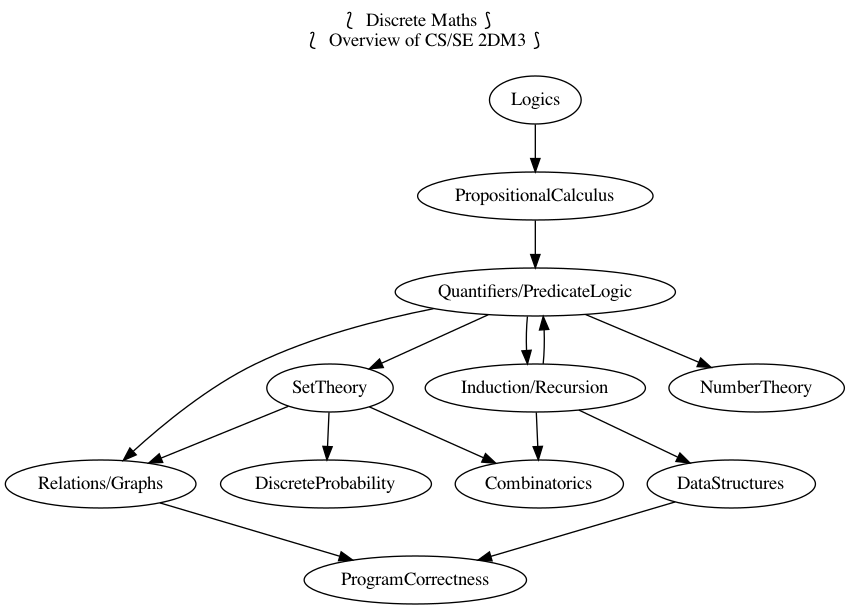
Keywords
- graph
- Expression
- Induction
- Textual_Substitution
- Inference_Rule
- Logic
- Semantics –including axiomatic and operational
- Theorem
- Metatheorem
- Calculus
- Calculational Proof
- Proving_is_Programming
- Algorithmic Problem Solving
- Programming
- Specification
- Natural Transformation
- Category Theory
- Associative
- Identity
- Distributive
- Commutative
- Reflexive
- Transitive
- Symmetric
- Antisymmetric
- Asymmetric
- Preorder
- Equivalence
- Linear
- Semilinear
- Univalent
- Total
- Map
- Surjective
- Injective
- Bijective
- Iso
- Difunctional
\[\newcommand\exp[1]{\mathsf{exp}_{#1}\,} % % for calc environment % line breaks with extra whitespace using phantom formula % \hdashline \def\NL{\\ \phantom{Σ} \\} \def\NLtwo{\\ \phantom{\substack{Σ \\ Σ}} \\} \]
1 Introduction to Calculational Reasoning
1.1 What are Calculational Proofs
We advocate calculational proofs in which reasoning is goal directed and justified by simple axiomatic laws that can be checked syntactically rather than semantically. ---Program Construction by Roland Backhouse
Example 1: Let us calculate the length of a train, that is travelling at a speed of 60 km/hr and, on its way, it crosses a pole in 9 seconds.
Notice how the nesting of sub-calculations allows us to make clear and local arguments. In contrast, non-calculational presentations would discuss such localised arguments after the main proof —if at all.
Example 2: Below are two arguments showing that \(\sqrt[n]{k}\) is a rational number precisely when integer \(k\) is a so-called perfect n-th root —consequently, since 2 is not a perfect square, \(\sqrt{2}\) is not rational.
Conventional Proof: Non-perfect powers have irrational roots
Suppose that integer \(k\) is not a perfect n-th power —i.e., not of the form 𝓍ⁿ— then there is some prime \(p\) in the factorisation of \(k\) that has its exponent, say \(\exp{p} k\), being not a multiple of \(n\). But if \(\sqrt[n]{k} \eq a/b\) then \(\exp{p}{k} \eq \exp{p}{a^n} - \exp{p}{b ^ n} \eq n · \exp{p}{a} - n · \exp{p}{b}\) and the difference of multiples of \(n\) is a multiple of \(n\), and so we have a contradiction. Hence, no such \(a, b\) could exist and so \(\sqrt[n]{k}\) is irrational.
This is an example of an informal proof, which is a mixture of natural language, English, and mathematical calculations. The English text outline the main steps of the proof, and the mathematical calculations fill in some of the details.
Since they only communicate the key ideas, such proofs are preferred by writers but they place a large semantic burden on readers who are expected to have such a good understanding of the problem domain that the details of the outline proofs can be filled in, and so the writer leaves these as an implicit exercise to the reader.
However, even worse, such informal outline proofs may skip over important details and thus can be wrong!
Below is a calculational proof. It introduces notation and recalls theorems as needed, thereby making each step of the argument easy to verify and follow. As such, the following argument is more accessible to readers unfamiliar with the problem domain.
Calculational Proof
\begin{calc} \def\BEGINstep{\left[} \def\ENDstep{\right.} \sqrt[n]{k} \text{ is a rational number } \stepfour{ A rational number is the fraction of two integers.}{ Let variables $a,\, b$ range over integer numbers.}{}{ } ∃\, a, b •\; \sqrt[n]{k} = {a \over b} \step{ Use arithmetic to eliminate the $n$-th root operator. } ∃\, a, b •\; k · a ^n = b ^n \stepmany{ \line{Let $\exp{m} x$ be the number of times that $m$ divides $x$.} \line{For example, $\exp{2} 48 \eq 4$ and $\exp{2} 49 \eq 0$.} \NL \line{The numbers $p$ with $∀ m : ℤ⁺ \,•\, \exp{m}p \,≠\, 0 \,≡\, m \,=\, p$ are called $prime$ numbers.} \line{Let variable $p$ ranges over prime numbers. } \NL \line{Fundamental theorem of arithmetic: Numbers are determined by their prime powers.} \line{That is, $\big(∀ \,p\, •\; \exp{p} x \eq f(p)\big) \;≡\; x \,=\, \big(Π\, p\, •\; p^{f(p)}\big)$ for any $f$.} \line{As such, every number is the product of its prime powers:} \line{$\qquad x \eq \big(Π \,p\, •\; p^{\exp{p} x}\big)$. } \line{And so, any two numbers are the same precisely when they have the same primes:} \line{$\qquad x \eq y \;≡\; \big(∀ p \,•\, \exp{p} x \eq \exp{p} y\big)$.} } ∃\, a, b •\; ∀\, p •\; \exp{p}(k · a ^n) \eq \exp{p}(b ^n ) \stepmany{\line{When $p$ is prime, $\exp{p}(x · y) \eq \exp{p} x \,+\, \exp{p} y$.} \line{Aside: In general, $\exp{p}(Π \,i\, \,•\, x_i) \eq (Σ \,i\, \,•\, \exp{p} x_i)$.} } ∃\, a, b •\; ∀\, p •\; \exp{p} k + n · \exp{p} a \eq n · \exp{p} b \step{ Use arithmetic to collect similar terms. } ∃\, a, b •\; ∀\, p •\; \exp{p} k \eq n · \Big(\exp{p} b - \exp{p} a\Big) \stepmany{ \line{(⇒) is the definition of multiplicity;} \line{(⇐) take $a \,≔\, 1$ and define $b$ by its prime powers:} \line{ $\qquad ∀\, p \,•\, \exp{p} b \,≔\, {\exp{p} k \,/\, n}$} } ∀\, p •\; \exp{p} k \text{ is a multiple of } n \step{ Fundamental theorem of arithmetic and definition of ‘perfect’ } k \text{ is a perfect $n$-th power; i.e., of the shape } x^n \end{calc}
Observe that the calculational form is more general. The use of a formal approach let us keep track of when our statements are equivalent (“=”) rather than being weakened (“⇒”). That is, the use of English to express the connection between steps is usually presented naturally using “if this, then that” statements —i.e., implication— rather than stronger notion of equality.
- In contrast, the conventional proof is a ‘proof by contradiction’; a method that is over-used.
Other features of conventional proofs are the dot dot dot notations, “⋯”, to indicate “and so on, of the same idea/form” —leaving readers the burden to guess the generic shape of the ‘idea/form’ that should be repeated.
Calculational proofs use quantifiers —and loops— instead.
- Finally, conventional proofs tend to use prefix notation and thereby implicitly forcing a syntactic distinction between equivalent expressions; e.g., \(\gcd(m, \gcd(n, p))\) and \(\gcd(\gcd(m, n), p)\).
The above proof is a generalisation of a proof in Backhouse's text for square roots, which may be viewed as a Youtube video which makes use of CalcCheck ⇭: A proof checker for the logic of “A Logical Approach to Discrete Math” (‘LADM’).
- It checks your arguments in a notation similar to that of the book.
- You can check your work before handing it in.
- You can formalise your own theorems from other books and check them —unlimited exercises!
Control + Alt + Enter to check a cell.
Going forward, instead of defining expressions by how they are evaluated, we define expressions in terms of how they can be manipulated.
A calculus is a method or process of reasoning by calculation with symbols. A Boolean variable that can denote a proposition is sometimes called a propositional variable. A propositional calculus is so named beacuse it is a method of calculating with expressions that involve propositional variables.
The propositional calculus of LADM is called “equational logic 𝑬”
One part of 𝑬 is a set of axioms, which are certain Boolean expressions that define basic manipulative properties of Boolean operators. For example, the axiom \(p ∨ q ≡ q ∨ p\) indicates (semantically) that the value of a disjunction doesn't depend on the order of its arguments and (syntactically) we may swap their order when manipulating expressions. The other part of this calculus are the 3 inference rules Substitution, Leibniz, and Transitivity.A theorem of this calculus is either an axiom, the conclusion of an inference rule whose premises are theorems, or a Boolean expression that, using the inference rules, is proved equal to an axiom or a previously proved theorem.
Algorithmic Problem Solving ---“math is programming”
Problems may be formulated and solved using, possibly implicitly, the construction of correct programs:
| “for all \(x\) satisfying \(R(x)\), there is a \(y\) such that \(G(x, y)\) is true” | |
| ≈ | ∀ x • R x ⇒ ∃ y • G x y |
| ≈ | R ⇒[C] G for some program command C with inputs x and outputs y |
This is known as a constructive proof since we have an algorithm C that actually
shows how to find a particular \(y\) to solve the problem, for any given \(x\). In
contrast, non-constructive proofs usually involving some form of counting
followed by a phrase “there is at least one such \(y\) …”, without actually
indicating how to find it!
More concretely,
| Any two consectuive Fibonnaci numbers are coprime | |
| ≈ | ∀ n • n ≥ 1 ⇒ gcd(fib n, fib (n + 1)) = 1 |
| ≈ | a = fib n ∧ b = fib (n + 1) ∧ n ≥ 0 |
⇒[C] |
|
a = b = gcd(fib n, fib (n + 1)) = 1, for a program C |
1.2 What is Discrete Mathematics
Discrete Mathematics includes logic (calculational reasoning), (data) sets, functions, relations, graphs, inductive types, and more.
Conscious and fluent use of the language of (discrete) mathematics is the foundation for precise specification and rigorous reasoning in Computer Science and Software Engineering
- Goal: Understand the mechanics of mathematical expressions and proof.
Propositional: Statements that can be either true or false; not numbers.
Predicate: Propositional statement about some subjects.
Calculus: Formalised reasoning through calculation.
‘Hand wavy’ English arguments tend to favour case analysis —considering what could happen in each possible scenario— which increases exponentially with each variable; in contrast, equality-based calculation is much simpler since it delegates intricate case analysis into codifed algebraic laws.
E.g., Portia's Suitor's Dilemma has 4 unknowns, each being either true or false, and so has \(2^4\) many possible scenarios to consider. Whereas a calculation solving the problem can be formed in less than 10 super simple lines.
Portia 's Suitor 's Dilemma
Portia has a gold casket and a silver casket and has placed a picture of herself in one of them. On the caskets, she has written the following inscriptions:
- Gold
- The portrait is not in here
- Silver
- Exactly one of these inscriptions is true.
Portia explains to her suitor that each inscription may be true or false, but that she has placed her portrait in one of the caskets in a manner that is consistent with the truth or falsity of the inscriptions.
If the suitor can choose the casket with her portrait, she will marry him.
( This is a ‘teaser’; you're not expected to know the details in the following calculation. )
Formalisation is the first step towards solution!
Declaration: G, S : 𝔹 Explanation: G ≔ “The inscription on the gold casket is true” Explanation: S ≔ “The inscription on the silver casket is true”
… and
Declaration: gc : 𝔹 Explanation: gc ≔ “The portrait is in the gold casket”
… we know the portrait is in a casket preciely when that casket's inscription is true …
Axiom “Inscription on gold casket”: G ≡ ¬ gc Axiom “Inscription on silver casket”: S ≡ (S ≡ ¬ G)
… let us start from what we know about the silver casket:
Calculation:
S ≡ (S ≡ ¬ G) — This is “Inscription on silver casket”
≡⟨ “Reflexivity of ≡” ⟩
S ≡ S ≡ ¬ G
≡⟨ “Symmetry of ≡” ⟩
¬ G
≡⟨ “Inscription on gold casket” ⟩
¬ ¬ gc
≡⟨ “Double negation” ⟩
gc
By just simplifying, we calculated that the portrait is in the gold casket!
Knowledge is software for your brain: The more you know, the more problems you can solve!
1.3 Road-map
In the previous section, we showed how a calculational argument is more structured and may be more accessible. Before getting to using such a style, we first pause to discuss the foundations that legitimatise it as a tool of reasoning.
In general, proofs are evidence of truth of a claim; by demonstrating that the claim follows from some obvious truth using rules of reasoning that obviously preserve truth. Here are some examples of clearly obviously true things.
| Axiom | “self-evident (obvious) truth” |
|---|---|
| Reflexivity | \(X = X\) —Everything is the same as itself |
| Symmetry | \(X = Y\) precisely when \(Y = X\) —Sameness is mutual |
| Infernece Rule | “a reasonable way to derive truths” |
|---|---|
| Substitution | If \(E(\vec x)\) is true, then so is \(E(\vec F)\) —where \(E(\vec R)\) means \(E[\vec x ≔ \vec R]\) |
| E.g., Since \(x + y = y + 3\) is true, so is \(b + 3 = 3 + b\) —using \(x, y ≔ b, 3\) | |
| Transitivity | If \(X = Y\) and \(Y = Z\) then \(X = Z\) |
| E.g., since \(e^{i · π} = -1\) and \(-1 = i²\), we must have \(e^{i · π} = i²\). | |
| Leibniz | If \(X = Y\) then \(E(X) = E(Y)\) —“substituting equals for equals” |
| E.g., since \(n = 2 · m\) we must have \(\even n = \even (2 · m)\) | |
| E.g., if Jim = James then Jim's home address = James' home address. | |
Uses of inference rules ---for Logic 𝑬
| Inference Rule | Usage |
|---|---|
| Leibniz | We can apply equalities inside expressions |
| Transitivity of = | We can chain equalities |
| Substitution | We can use substitution instances of theorems |
| Equipollence | Things equal to theorems are also theorems |
Equipollence means if we show something is equal to ‘true’ (a particular theorem), then it is a theorem. Consequently, this means all theorems are equivalent.
That's a lot of hand-waving; and a few examples don't scale. In order to discuss proof, we need to discuss inference rules, which are ways to derive new claims from old claims, and so we need to discuss how claims —expressions or formulae— are written. So let's start at expressions.
Super terse definition ---to be explained in subsequent sections
A logic is a set of symbols along with a set of formulas formed from the symbols, and a set of infernece rules which allow formulas to be derived from other formulas. (The formulas may or may not include a notion of variable.) Logics are purely syntactic objects.
2 Expressions
2.1 Precedence
How do you ‘read’ (parse) the expression \(6 - x + 7\)?

It can be generated from its parts in two different ways:
- Both \(6\) and \(x + 7\) are expressions, so \(6 - x + 7\) is an expression.

- and also both \(6 - x\) and \(7\) are expressions, so \(6 - x + 7\) is an expression.
A convention on how a string should be parsed as a tree is known as a precedence rule.
2.2 Grammars
Expressions are defined by the following grammar, but in practice one does not write \(+(1, 2)\) and instead writes \(1 + 2\). However, the phrase \(+(1, ·(2, 3))\) is unambiguous, whereas the phrase \(1 + 2 · 3\) could be read as \((1 + 2) · 3\) or as \(1 + (2 · 3)\).
The grammar defines expressions as abstract syntax (trees) whereas strings with mixfix notation gives a concrete syntax where ambiguity is resolved by parentheses, precedence, or association rules.
Expr ::= Constant -- E.g., 1 or “apple”
| Variable -- E.g., x or apple (no quotes!)
| Application -- E.g., f(x₁, x₂, …, xₙ)
( One reads := as becomes and so the addition of an extra
colon results in a ‘stutter’: One reads
::= as be-becomes. The symbol | is read or. )
2.3 Textual Substitution —i.e., “grafting trees”
The (simultaneous textual) Substitution operation \(E[\vec x ≔ \vec F]\) replaces all variables \(\vec x\) with parenthesised expressions \(\vec F\) in an expression \(E\). In particular, \(E[x ≔ F]\) is just \(E\) but with all occurrences of \(x\) replaced by \(“(F)”\). This is the “find-and-replace” utility you use on your computers.
Since expressions are either variables of functions applications, substitution can be defined by the following two clauses —we will get to recursion and induction more formally later on.
\begin{align*} y[x ≔ F] &= \mathsf{if}\, x = y \,\mathsf{then}\, F \,\mathsf{else}\, y \,\mathsf{fi}\, \\ f(t₁, …, tₙ)[x ≔ F] &= f(t₁′, …, tₙ′) \; \text{ where } tᵢ′ = tᵢ[x ≔ F] \end{align*}
Sequential ≠ Simultaneous
\[ (x + 2 · y)[x ≔ y][y ≔ x] \quad≠\quad (x + 2 · y)[x, y ≔ y, x] \]
Python, for example, has simultaneous assignment; e.g., x, y = y, x is
used to swap the value of two variables.
Within CalcCheck, to simplify and actually perform the substitution, one uses the hint Substitution ; e.g.,
(x + 2 · y)[x, y ≔ 3 · y, x + 5] =⟨ Substitution ⟩ 3 · y + 2 · (x + 5)
2.4 “Meta-𝒳”: Speaking about the concept of 𝒳 using the notions of 𝒳
When we write phrases like “Let E be an expression”, then the name \(E\)
varies and so is a variable, but it is an expression and so may consist of a
function application or a variable. That is, \(E\) is a variable that may
stand for variables. This layered inception is resolved by referring to \(E\)
as not just any normal variable, but instead as a meta-variable: A variable
capable of referring to other (simpler) variables.
Aside: A variable of type τ is a name denoting a yet unknown value of type τ;
i.e., “it is a pronoun (nickname) referring to a person in the collection of people τ”.
E.g., to say \(x\) is an integer variable means that we may treat it
as if it were a number whose precise value is unknown.
Then, if we let Expr τ refer to the expressions denoting values of type τ;
then a meta-variable is simply a normal variable of type Expr τ.
Likewise, a theorem is a Boolean expression that is proved equal to an axiom; whereas a meta-theorem is a general statement about our logic that we prove to be true. That is, if 𝑬 is collection of rules that allows us to find truths, then a theorem is a truth found using those rules; whereas a meta-theorem is property of 𝑬 itself, such as what theorems it can have. That is, theorems are in 𝑬 and meta-theorems are about 𝑬. For example, here is a meta-theorem that the equational logic 𝑬 has (as do many other theories, such as lattices): An equational theorem is true precisely when its ‘dual’ is true. Such metatheorems can be helpful to discover new theorems.
| meta-𝒳 | “the study of 𝒳” or “𝒳 about 𝒳” or “beyond 𝒳” |
|---|---|
| meta-joke | a joke about jokes |
| meta-data | data about data; e.g., publication date |
| meta-fiction | a fictional story that acknowledges itself as fiction |
| meta-game | a game in which mini-games happen; e.g., Mario Party |
| meta-cognition | thinking about thinking |
| meta-ethics | what is the ethical way to study ethics |
| meta-physics | the study of that which is beyond the physical |
| meta-mathematics | studying systems of reasoning; aka ‘proof theory’ |
3 Logics
A modern mathematical proof is not very different from a modern machine, or a modern test setup: the simple fundamental principles are hidden and almost invisible under a mass of technical details. — Hermann Weyl
A logic is a formal system of reasoning.
3.1 Syntax vs. Semantics
Syntax refers to the structure of expressions, or the rules for putting symbols together to form an expression. Semantics refers to the meaning of expressions or how they are evaluated.
An expression can contain variables, and evaluating such an expression requires knowing what values to use for these variables; i.e., a state: A list of variables with associated values. E.g., evaluation of \(x - y + 2\) in the state consisting of \((x, 5)\) and \((y, 6)\) is performed by replacing \(x\) and \(y\) by their values to yield \(5 - 6 + 2\) and then evaluating that to yield \(1\).
A Boolean expression \(P\) is satisfied in a state if its value is true in that state; \(P\) is satisfiable if there is a state in which it is satisfied; and \(P\) is valid (or is a tautology) if it is satisfied in every state.
All theorems of the propositional calculus 𝑬 are valid. This can be checked by checking that each axiom with a truth table and arguing for each inference rule that if its premises are valid then so is its conclusion.
For example, let's show that the Substitution rule preserves validity. Let us write \(s(E)\) to denote the value of expression \(E\) in state \(s\). If \(E\) is valid, then it is true in any state, let's argue that \(E[x ≔ F]\) is also true in any state. So, given a state \(s\), let \(s′\) be the ‘updated’ state that assigns the same values to all the variables as does \(s\) except that the variable \(x\) is assigned the value \(s(F)\). Then, since \(E\) is valid, \(s′(E)\) is true but \(s′(E)\) is just \(s\big(E[x ≔ F]\big)\) and so the resulting substitution is also valid.
In programming, if we want the assignment \(x ≔ F\) to ensure a property \(R\) holds, then we need \(R[x ≔ F]\) to hold before the assignment. That is, if the state \(s\) of our program variables satisfies \(R[x ≔ F]\) then the updated state \(s′\) —having s′(x) = s(F)— will satisfy \(R\).
Not only are all theorems valid, but all valid expressions are theorems of our calculus (although we do not prove this fact). Theoremhood and validity are one and the same.
Evaluation of the expression \(X = Y\) in a state yields the value true if expressions \(X\) and \(Y\) have the same value and yields false if they have different values.
This characterisation of equality is in terms of expression evaluation.
For reasoning about expressions, a more useful characterisation would be a set of laws that can be used to show that two expressions are equal, without calculating their values.
For example, you know that \(x = y\) equals \(y = x\), regardless of the values of \(x\) and \(y\).
A collection of such laws can be regarded as a definition of equality, provided two expressions have the same value in all states precisely when one expression can be translated into the other according to the laws.
Later we see that theorems correspond to expressions that are true in all states.
3.2 Inference Rules
Formally, a “proof” is obtained by applying a number of “rules” to known results to obtain new results; a “theorem” is the conclusion of a “proof”. An “axiom” is a rule that does not need to be applied to any existing results: It's just a known result.
That is, a rule \(R\) is a tuple \(P₁, …, Pₙ, C\) that is thought of as ‘taking premises (instances of known results) \(Pᵢ\)’ and acting as a ‘natural, reasonable justification’ to obtain conclusion \(C\). A proof system is a collection of rules. At first sight, this all sounds very abstract and rather useless, however it is a game: Starting from rules, what can you obtain? Some games can be very fun! Another way to see these ideas is from the view of programming:
| Mathematics | Programming |
|---|---|
| logic | trees (algebraic data types, 𝒲-types) |
| rules | constructors |
| proof | an application of constructors |
| axiom | a constructor with no arguments |
For example, recall from elementary school that the addition ‘+’ of a number 12 and a number 7 to obtain a number 19 is written as
\begin{align*} & 12 \\ + & \;\;7 \\ \hline & 19 \end{align*}This familiar notation is also used for proof rules as well: A rule \(R = (P₁, …, Pₙ, C)\) is traditionally presented in the shape \[{P₁ \; P₂ \; … \; Pₙ \over C}R\]
𝑰𝑭 I have ingredients and a recipe for a cake 𝑻𝑯𝑬𝑵 I can make a cake
Here are two familiar and eerily similar rules ;-)
\[\Rule[Function Application]{a : A \And f : A → B}{f(a) : B}\]
\[\Rule[Modus Ponens]{p \And p ⇒ q}{q}\]
For instance, the first rule says “if you have a road between two cities, A and B, then you can travel from address a in city A to get to address f(a) in city \(B\)”. The second rule says the same thing, but forgets/ignores the precise locations. Sometimes it's okay for something “to exist”, but other times that's not enough and you “actually want to get (construct) it somehow”; e.g., as the title begs: It's possible to make a cake, but how? Which recipe you use makes a difference!
Just as there are meta-variables and meta-theorems, there is ‘meta-syntax’:
- The use of a fraction to delimit premises from conclusion is a form of ‘implication’.
- The use of a comma, or white space, to separate premises is a form of ‘conjunction’.
If our expressions actually have an implication and conjunction operation, then inference rules \(\Rule[R]{P₁ \And ⋯ \And Pₙ}{C}\) can be presented as axioms \(P₁ \,∧\, ⋯ \,∧\, Pₙ \,⇒\, C\).
The inference rule says “if the \(Pᵢ\) are all valid, i.e., true in all states, then so is \(C\)”; the axiom, on the other hand, says “if the \(Pᵢ\) are true in a state, then \(C\) is true in that state.” Thus the rule and the axiom are not quite the same.
Moreover, the rule is not a Boolean expression. Rules are thus more general, allowing us to construct systems of reasoning that have no concrete notions of ‘truth’ —see the logic 𝑾𝑩 below.
Finally, the rule asserts that \(C\) follows from \(P₁, …, Pₙ\). The formula \(P₁ \,∧\, ⋯ \,∧\, Pₙ \,⇒\, C\), on the other hand, is a Boolean expression (but it need not be a theorem).
An example of this relationship between rules and operators may be observed by comparing the logics 𝑾𝑩 and 𝑴𝑺𝑯, below. One could read “◇” as “and”, and “⟶” as “implies”.
A “theorem” is a syntactic concept: Can we play the game of moving symbols to get this? Not “is the meaning of this true”! ‘Semantic concepts’ rely on ‘states’, assignments of values to variables so that we can ‘evaluate, simplify’ statements to deduce if they are true.
Syntax is like static analysis; semantics is like actually running the program (on some, or all possible inputs).
3.3 [Optional] Strange Logics
Here is an example logic, call it 𝑾𝑩:
- The symbols are the usual numbers, along with
+and-and,(comma). - A formula is term of the shape
x, y, where \(x\) and \(y\) are terms formed from numbers, +, and -.- Notice that comma is a binary operator.
- Notice that there are no variables (as terms).
- There are 7 inference rules —including one axiom.
\[\Rule[Empty]{}{0,0}\] \[ \Rule[ZeroLeft]{x,y}{0, y} \quad \Rule[ZeroRight]{x,y}{x, 0} \]\[ \Rule[RefreshLeft]{x, y}{3, y} \quad \Rule[RefreshRight]{x, y}{x, 5} \] \[ \Rule[ShiftLeft_d \quad\text{(provided $y - d = 0$ or $x + d = 3$)}]{x, y}{x + d, y - d} \] \[ \Rule[ShiftRight_d \quad\text{(provided $x - d = 0$ or $y + d = 5$)}]{x, y}{x - d, y + d} \]
Exercise 3.3.1: Using this logic, prove the theorem 0, 4.
- Notice that the theorem has nothing to do with ‘truth’! —At least not explicitly, or intuitively.
Solution
\[ \Rule[ZeroLeft]{\normalsize\Rule[ShiftLeft_1]{\LARGE\Rule[RefreshLeft]{\LARGE\Rule[ShiftLeft_2]{\Rule[ZeroLeft]{\LARGE \Rule[ShiftLeft_3]{\LARGE \Rule[RefreshRight]{\LARGE\Rule[Empty]{}{0,0}}{0, 5}}{3, 2}}{0,2}}{2,0}}{2, 5}}{3, 4}}{0, 4} \]
Exercise 3.3.2:
A logic models reasoning, can you interpret the terms x, y in such
a way that makes the inference rules true?
Solution
The logic 𝑾𝑩 could be interpreted as modelling two ‘water buckets’, the first can contain 3 litres while the second can contain 5 litres, along with an unlimited water supply.
- The axiom says we start out with empty buckets.
- The zero rules says we can empty out buckets.
- The refresh rules say we can fill up buckets to being full.
- The shift rules say we can pour out water from one bucket to the other, such that the first is emptied or the second is filled. (In particular, we cannot pour an arbitrary chosen amount of water. )
Then the theorem says we can measure 4 litres of water —using only a 3 and 5 litre buckets and an unlimited water supply.
Here is another example logic, call it 𝑴𝑺𝑯:
- The symbols are the usual numbers, along with
+, -, ◇, ⟶. - A formula is of the form \(x ◇ y ⟶ x′ ◇ y′\) where ◇ binds tightest
and \(x, y, x′, y′\) are terms formed from numbers,
+, and-. In contrast to 𝑾𝑩, this logic has only 1 non-axiom inference rule!
\[\Rule[Reflexivity]{}{x ◇ y ⟶ x ◇ y}\] \[\Rule[Transitivity]{x ◇ y ⟶ x′ ◇ y′ \And x′ ◇ y′ ⟶ x″ ◇ y″}{x ◇ y ⟶ x″ ◇ y″}\]
\[\Rule[ZeroLeft]{}{x ◇ y ⟶ 0 ◇ y} \quad \Rule[ZeroRight]{}{x ◇ y ⟶ x ◇ 0}\] \[\Rule[RefreshLeft]{}{x ◇ y ⟶ 3 ◇ y} \quad \Rule[RefreshRight]{}{x ◇ y ⟶ x ◇ 5} \] \[\Rule[ShiftLeft_d]{\text{(provided $y - d = 0$ or $x + d = 3$)}}{x ◇ y ⟶ (x+d) ◇ (y-d)} \] \[\Rule[ShiftRight_d]{\text{(provided $x - d = 0$ or $y + d = 5$)}}{x ◇ y ⟶ (x - d) ◇ (y + d)}\]
Exercise 3.3.3: Finish reading this section, then come back and
prove the theorem 0 ◇ 0 ⟶ 0 ◇ 4 using a calculational proof.
Solution
As discussed in §3.4, we form calculational proofs using a transitive relation in the left-most column of a calculation. The transitvity of the relation ensures that the first term is related, via the relation, to the last term.
\begin{calc} 0◇ 0 \step[⟶]{refresh left} 3◇ 0 \step[⟶]{ shift right} 0◇ 3 \step[⟶]{ refresh left } 3◇ 3 \step[⟶]{ shift right, then zero right} 1◇ 0 \step[⟶]{ shift right } 0◇ 1 \step[⟶]{ refresh left, then shift right } 0◇ 4 \end{calc}Exercise 3.3.4: Provide an interpretation of this logic.
Solution
We may think of 𝑴𝑺𝑯 as a ‘machine’ with two memory banks: A computer with memory state \(x\) and \(y\) is executed and it terminates in memory state \(x′\) and \(y′\). That is, \(x ◇ y ⟶ x′ ◇ y′\) is “starting from \((x, y)\), the computer finishes with \((x′, y′)\)”.
The theorem then says that it is possible for the computer to start at \((0, 0)\) and finish with memory store \((0, 4)\).
The idea to use inference rules as computation is witnessed by the Prolog programming language.
Of-course, we could also re-use the water buckets interpretation of 𝑾𝑩.
3.4 Rules of Equality and Proof Trees vs. Calculational Proofs
Before we can showcase an example of a proof tree —let alone compare them with calculational proofs— we need a few example inference rules that can be used in the construction of the proofs.
The following rules define equality by how it can be used, manipulated.
- Equality is:
- reflexive: \(X = Y\);
- symmetric: \(X = Y\) implies \(Y = X\); and
- transitive: \(X = Z\) follows from having both \(X = Y\) and \(Y = Z\), for any \(Y\)
The Substitution inference rule says that a substitution \(E[\vec x ≔ \vec F]\) is a theorem whenever \(E\) is a theorem.
Within CalcCheck, this rule is realised as the with clause: The phrase
E with `x₁, x₂, …, xₙ ≔ F₁, F₂, …, Fₙ`is tantamount to invoking the theorem \(E[\vec x ≔ \vec F]\). The rule is applied implicitly, unlessrigid matchingis activated —e.g., to get students thinking correctly about applying theorems instead of just putting random theorems that look similar and hoping the system sees a justification from a mixture of them.The Leibniz inference rule says that \(E[z ≔ X] = E[z ≔ Y]\) whenever \(X = Y\); i.e., it justifies substituting “equals for equals”.
Leibniz allows us to use an equation to rewrite a part of an expression; and so, it justifies the use of ‘calculation hints’.
Leibniz says: Two expressions are equal (in all states) precisely when replacing one by the other in any expression \(E\) does not change the value of \(E\) (in any state).
A function \(f\) is a rule for computing a value from another value.If we define \(f\, x = E\) using an expression, then function application can be defined using textual substitution: \(f \, X = E[x ≔ X]\). That is, expressions can be considered functions of their variables —but it is still expressions that are the primitive idea, the building blocks.
Using functions, Leibniz says if X = Y then f X = f Y, for any function f. That is, if two things are actually the same, then any (f-)value extracted from one must be the same when extracted from the other.
Again: Unlike the Substitution rule, which allows us to instantiate any theorem, the Leibniz rule is meant for applying equational theorems deeper within expressions. Later on, we will look at ‘monotonicity rules’ which will let us apply inclusion (≤, ⇒, ⊑) theorems deep within expressions.
The with syntax is overloaded for this rule as well.
In addition to these rules, suppose that we have \(2 · a = a + a\) (“Twice”) and \(-1 · a = - a\) (15.20) as axioms; then we can form the following proof.
\[ \Rule[Transitivity\; of\; =] {\large \Rule[\small Substitution] {\Large \Rule{✓}{-1 · a \,=\, - a} } { (- 1) · 2 · (x + y) \,=\, - (2 · (x + y)) } \And \Rule[\small Leibniz] {\Large \Rule{✓}{2 · a = a + a} } { - (2 · (x + y)) \,=\, -((x + y) + (x + y)) } }{(- 1) · 2 · (x + y) \,=\, -((x + y) + (x + y))} \]
This is known as a natural deduction proof tree; one begins ‘reading’ such a proof from the very bottom: Each line is an application of a rule of reasoning, whose assumptions are above the line; so read upward. The benefit of this approach is that rules guide proof construction; i.e., it is goal-directed.
However the downsides are numerous:
- So much horizontal space for such a simple proof!
- One has to repeat common subexpressions, such as the \(-(2 · (x + y))\).
- For comparison with other proof notations, such as Hilbert style, see “Equational Propositional Logic” or LADM-§6.
Instead, we may use a more ‘linear’ proof format:
\begin{calc} (- 1) · 2 · (x + y) \step{ 15.20) $- a \,=\, - 1 · a$ ─ Using implicit substitution rule } - (2 · (x + y)) \step{ “Twice” ─ Using implicit Leibniz with $a ≔ x + y$ } -((x + y) + (x + y)) \end{calc}In this equational style, instead of a tree (on the left) we use a sequential chain of equalities (on the right):
\[\Rule[Leibniz]{X \,=\, Y}{E[z ≔ X] \,=\, E[z ≔ Y]}\]
\begin{calc} E[z ≔ X] \step{ X = Y } E[z ≔ Y] \end{calc}
In this way, we may use the Substitution rule to create theorems that can be used with the Leibniz rule and then use the Transitivity rule to conclude that the first expression of an equational proof is equivalent to the last one.
- Transitivity allows us to conclude the first expression in a calculation is equal to the last expression in the calculation.
- Reflexivity allows us to have ‘empty’ calculations and “no (expression) change” calculation steps
- Symmetry allows us to use an equation \(LHS = RHS\) “in the other direction” to replace an instance of \(RHS\) by \(LHS\).
Equational proofs thus have this shape:
\begin{calc} P \step{ $P = Q[z ≔ X]$ } Q[z ≔ X] \stepmany{ \line{make a “remark” about $Q[z ≔ X]$} \line{or the direction of the proof} \line{or “remove superflous parentheses”} \line{or “insert parentheses for clairty”} } Q[z ≔ X] \step{ $X = Y$ } Q[z ≔ Y] \step{ $R = Q[z ≔ Y]$ ──note the change in ‘direction’ } R \end{calc}Which is far easier to read and write than: \[ \Rule[Transitivity]{ P = Q[z ≔ X] \And \Rule[Transitivity]{ \Rule[\large Transitivity]{ \LARGE \Rule[Reflexivity]{}{Q[z ≔ X] \eq Q[z ≔ X]} \And \Rule[Leibniz]{X \eq Y}{Q[z ≔ X] \eq Q[z ≔ Y]} }{\LARGE Q[z ≔ X] \eq Q[z ≔ Y]} \And {\LARGE \Rule[\large Symmetry]{R \eq Q[z ≔ Y]}{Q[z ≔ Y] \eq R} }} {\large \text{$Q[z ≔ X] \eq R$}}} {P = R} \]
The structure of equational proofs allows implicit use of infernece rules Leibniz, Transitvitity & Symmetry & Reflexivity of equality, and Substitution. In contrast, the structure of proof trees is no help in this regard, and so all uses of inference rules must be mentioned explicitly.
Leibniz is often used with Substitution, as follows
—supposing we know the theorem “Half” \(2 · x / 2 = x\):
We are using Leibniz with the premise \(2 · j / 2 = j\). We can use this premise only if it is a theorem. It is, because \(2 · x / 2 = x\) is a theorem and, therefore, by Substitution, \((2 · x / 2 = x)[x ≔ j]\) is a theorem.
If a use of Substitution is simple enough, as in this case, we may leave off the indication “with \(x ≔ j\)”.
4 Propositional Calculus
Often operations are defined by how they are evaluated (“operationally”), we take the alternative route of defining operations by how they can be manipulated (“axiomatically”); i.e., by what properties they satisfy. For instance, we may define basic manipulative properties of operators —i.e., axioms— by considering how the operators behave operationally on particular expressions. That is, one may use an operational, intuitive, approach to obtain an axiomatic specification (characterisation, interface) of the desired properties. More concretely, since \((p ≡ q) ≡ r\) and \(p ≡ (q ≡ r)\) evaluate to the same value for any choice of values for \(p, q, r\), we may insist that a part of the definition of equivalence is that it be an Associative operation. Sometimes a single axiom is not enough to ‘pin down’ a unique operator —i.e., to ensure we actually have a well-defined operation— and other times this is cleanly possible; e.g., given an ordering ‘≤’(‘⇒, ⊆, ⊑’) we can define minima ‘↓’ (‘∧, ∩, ⊓’) by the axiom: “x ↓ y is the greatest lower bound”; i.e., \(z ≤ x ↓ y \quad≡\quad z ≤ x \,∧\, z ≤ y\).
A calculus is a method or process of reasoning by calculation with symbols. A propositional calculus is a method of calculating with Boolean (or propositional) expressions.
A theorem is a syntactic object, a string of symbols with a particular property. A theorem of a calculus is either an axiom or the conclusion of an inference rule whose premises are theorems. Different axioms could lead to the same set of theorems, and many texts use different axioms.
4.1 Boolean Expressions and Laws
The type of propositions is known as the Booleans and denoted 𝔹.
𝔹 ::= true | false
4.1.1 Equality: “=” and “≡”
For instance, the notion of equality on any type τ is
typed _=_ : τ → τ → 𝔹; i.e., equality takes two values of a type τ
and returns a propositional value.
In general, the “continued equality” \(x = y = z\) is read conjunctively: Both \(x = y\) and \(y = z\). However, for the special case τ being 𝔹, the expression \(x = y = z\) could be read associativity: \((x = y) = z\).
These two ways to read (parse) a continued equality give different operators on 𝔹. The associative equality is popularly written as ‘⇔’ but, unfortunately, not usually treated as an equality at all! In this class, we write the associative equality as ‘≡’ and read it as “equivales”.
See The associativity of equivalence and the Towers of Hanoi problem.
The phrase \(p ≡ q\) may be read as
- p is equivalent to q, or
- p exactly when q,
- p if-and-only-if q,
This operator is just equality on the Booleans:
| Definition of ≡ | (p ≡ q) = (p = q) |
The need for a new name for an existing concept is that they have different notational conventions: Firstly, “≡” has lower precedence than “=” and secondly,
- = is conjunctive
- \(\big(p = q = r\big) \quad=\quad \big( (p = q) \;\land\; (q = r)\big)\)
- ≡ is associative
- \(\big(p ≡ q ≡ r\big) \quad=\quad \big((p ≡ q) ≡ r\big) \quad=\quad \big(p ≡ (q ≡ r)\big)\)
For example, \(\false ≡ \true ≡ \false\) is \(\true\), whereas \(\false = \true = \false\) is \(\false\).
For the Booleans, equality is equal to equivalence:
(p = q) = (p ≡ q) for p, q : 𝔹 For the Booleans, equality is equivalent to equivalence:
(p = q) ≡ (p ≡ q) for p, q : 𝔹
4.1.2 Useful Operators
The Booleans have a number of useful operators that model reasoning, such as:
| Operator | Booleans (𝔹) | Numbers (ℤ) |
|---|---|---|
| “and” | _∧_ : 𝔹 → 𝔹 → 𝔹 |
“minimum” _↓_ : ℤ → ℤ → ℤ |
| “or” | _∨_ : 𝔹 → 𝔹 → 𝔹 |
“maximum” _↑_ : ℤ → ℤ → ℤ |
| “not” | ¬_ : 𝔹 → 𝔹 |
“negation” -_ : ℤ → ℤ → ℤ |
| “implies” | _⇒_ : 𝔹 → 𝔹 → 𝔹 |
“inclusion” _≤_ : ℤ → ℤ → 𝔹 |
| “Equivales” | _≡_ : 𝔹 → 𝔹 → 𝔹 |
“equality” _=_ : ℤ → ℤ → 𝔹 |
These operators can be defined informally, as done below, but we shall follow
an axiomatic definition as done in LADM by providing an interface of
properties that they satisfy instead of any particular implementation. Later
in the class when we get to the if_then_else_fi construct, we may provide
explicit implementations and prove them to be equal to the operations
specified axiomatically.
| “p ∧ q” is “true” whenever both “p” and “q” are “true”, otherwise it is “false” |
| “m ↓ n” is “m” whenever “m ≤ n”, otherwise it is “n” |
| Expression | Pronounced | is \(\true\) if |
|---|---|---|
| \(p ≡ q\) | p equivales q | exactly an even number of arguments is \(\false\), (⋆) |
| \(p ≢ q\) | p differs from q | exactly an odd number of its arguments are \(\true\) |
| \(x = y\) | x equals y | exactly \(x\) and \(y\) simplify to the same expression |
| \(x ≠ y\) | x differs from y | \(x\) and \(y\) do not simplify to the same expression |
| \(p ∧ q\) | p and q | all of its arguments are \(\true\) |
| \(p ∨ q\) | p or q | at least one of its arguments is \(\true\) |
| \(p ⇒ q\) | p implies q | either q is \(\true\) or p is \(\false\) |
| if p, then q | ||
| \(p ⇐ q\) | p follows from q | either p is \(\true\) or q is \(\false\) |
| p if q | ||
| \(¬ p\) | not p | p is \(\false\); read “it is not the case that \(p\)” |
For example,
| “p, even if q” | |
| ≈ | \(p ∧ (q ⇒ p)\) |
| ( This is provably equivalent to just \(p\). ) |
(⋆) Note that if an even number of arguments is false, then the false's cancel out and only true remains. Note that since true is the identity of ‘≡’, we can simply cancel them out of a chain of equivalences. When there are 2 · n many elements in the chain, then if there are an even number of true's, say k-many, then there must be an even number of false's: \(\even (2 · n - k) = (\even (2 · n) ≡ \even (-k)) = \even k = \true\).
Also,
| \(p ≡ q ≡ r\) | ≈ | One or all of p,q, and r are true |
|---|---|---|
| \(p ≡ q\) | ≈ | None or both of p and q is true |
| \(p ≢ q\) | ≈ | Exactly one of p and q is true |
| Either p or q, but not both | ||
| \(p₀ ≡ p₁ ≡ ⋯ ≡ p₂ₙ\) | ≈ | An even number of the pᵢ are true (⋆) |
(⋆) When is p₀ ≡ p₁ ≡ ⋯ ≡ pₙ true?
When is p₀ ≡ p₁ ≡ ⋯ ≡ pₙ true?
Since true is the identity of ‘≡’; any \(pᵢ\) equal to \(\true\) can be ‘cancelled out’. Hence, we are left with only \(\false\)'s. Since \((\false ≡ \false) ≡ \true\), we can cancel out any pair of \(\false\)'s and so if there are an even number of \(\false\)'s the resulting expression is \(\true\).
However, if the number, say \(k\), of \(\false\)'s is even, then
\begin{calc} \text{the parity of trues} \step{ Formalise: The trues are the non-falses } \even(n - k) \step{ Even distributes over sums, subtractions } \even n ≡ \even (-k) \step{ Even is invariant under unary minus } \even n ≡ \even k \step{ By assumption, there are $k$-many falses} \even n ≡ \true \step{ Identity of equivalence } \even n \end{calc}Hence,
| \(p₀ ≡ p₁ ≡ ⋯ ≡ pₙ\) | |
| ≈ | An even number of the arguments is false. |
| ≈ | The parity of trues is the same as the parity of the number of arguments. |
For example,
| \(p ≡ q\) | |
|---|---|
| ≈ | None or both of \(p\) and \(q\) is true |
| \(p ≢ q\) | |
| ≈ | Exactly one of \(p\) and \(q\) is true |
| \(p ≡ q ≡ r\) | |
| ≈ | One or all of \(p, q, r\) are true |
| \(p ≡ q ≡ r ≡ s\) | |
| ≈ | Zero, two, or four of \(p, q, r, s\) are true |
| \(¬ (p ≡ q ≡ r ≡ s)\) | |
| ≈ | One or three of \(p, q, r, s\) are true. |
The second and last examples rely on the fact that “not an even number are true” equivales “an odd number are true”.
4.1.3 Boolean Laws and Numeric Laws
To better understand the 𝔹ooleans, it can be useful to compare their laws
with those on numbers. For instance, the Definition of ⇒ at first glance is
tremendously cryptic: Why in the world would anyone define implication in
this way \(p ⇒ q \,≡\, p ∧ q ≡ p\)? However, when compared to the similar law
for numbers that defines inclusion \(m ≤ n \,≡\, m ↓ n = m\), the definition
becomes “obvious”: p is included in (implies) q precisely when having both p
and q is the same as just having p; i.e., m is at-most n precisely when m is
the minimum of m and n.
| Law | Booleans (𝔹) | Numbers (ℤ with ±∞) |
|---|---|---|
| Symmetry of ∧ | \(p ∧ q ≡ q ∧ p\) | \(m ↓ n = n ↓ m\) |
| Associativity of ∧ | \((p ∧ q) ∧ r ≡ p ∧ (q ∧ r)\) | \(m ↓ n = n ↓ m\) |
| Idempotency of ∧ | \(p ∧ p ≡ p\) | \(n ↓ n = n\) |
| Identity of ∧ | \(p ∧ \true ≡ p\) | \(n ↓ +∞ = n\) |
| Zero of ∧ | \(p ∧ \false ≡ \false\) | \(n ↓ -∞ = -∞\) |
| Contradiction | \(p ∧ ¬ p ≡ \false\) | ─nope─ |
| Symmetry of ∨ | \(p ∨ q ≡ q ∨ p\) | \(m ↑ n = n ↑ m\) |
| Associativity of ∨ | \((p ∨ q) ∨ r ≡ p ∨ (q ∨ r)\) | \(m ↑ n = n ↑ m\) |
| Idempotency of ∨ | \(p ∨ p ≡ p\) | \(n ↑ n = n\) |
| Identity of ∨ | \(p ∨ \false ≡ p\) | \(n ↑ -∞ = n\) |
| Zero of ∨ | \(p ∨ \true ≡ p\) | \(n ↑ +∞ = +∞\) |
| Excluded Middle | \(p ∨ ¬ p ≡ \false\) | ─nope─ |
| Golden Rule | \(p ∧ q ≡ p ≡ q ≡ p ∨ q\) | \(m ↓ n = m \,≡\, n = m ↑ n\) |
| ∧/∨ Distributivity | \(p ∧ (q ∨ r) ≡ (p ∧ q) ∨ (p ∧ r)\) | \(m ↑ (n ↓ r) = (m ↑ n) ↓ (m ↑ r)\) |
| ∨/∧ Distributivity | \(p ∨ (q ∧ r) ≡ (p ∨ q) ∧ (p ∨ r)\) | \(m ↑ (n ↓ r) = (m ↑ n) ↓ (m ↑ r)\) |
| Absorption | \((p ∨ q) ∧ ¬ p ≡ ¬ p ∧ q\) | ─nope─ |
| \((p ∧ q) ∨ ¬ p ≡ ¬ p ∨ q\) | ─nope─ | |
| \((p ∨ q) ∧ p ≡ p\) | \((m ↑ n) ↓ m = m\) | |
| \((p ∧ q) ∨ p ≡ p\) | \((m ↓ n) ↑ m = m\) | |
| Double negation | \(¬ ¬ p ≡ p\) | \(- - n = n\) |
| Definition of \(\false\) | \(\false ≡ ¬ \true\) | \(-∞ \,=\, - (+∞)\) |
| Negation of \(\false\) | \(¬ \false = \true\) | \(- (-∞) = +∞\) |
| De Morgan | \(¬(p ∧ q) = ¬ p ∨ ¬ q\) | \(-(m ↓ n) = -m ↑ -n\) |
| \(¬(p ∨ q) = ¬ p ∧ ¬ q\) | \(-(m ↑ n) = -m ↓ -n\) | |
| Definition of ⇒ | \(p ⇒ q ≡ p ∧ q ≡ p\) | \(m ≤ n \,≡\, m ↓ n = m\) |
| \(p ⇒ q ≡ p ∨ q ≡ q\) | \(m ≤ n \,≡\, m ↑ n = n\) | |
| Consequence | \(p ⇐ q ≡ q ⇒ p\) | \(m ≥ n \,≡\, n ≤ m\) |
| ex falso quodlibet | \(\false ⇒ p ≡ \true\) | \(-∞ ≤ n \,≡\, \true\) |
| Left-identity of ⇒ | \(\true ⇒ p ≡ p\) | \(+∞ ≤ n \,≡\, n = +∞\) |
| Right-zero of ⇒ | \(p ⇒ \true ≡ \true\) | \(n ≤ +∞ \,≡\, \true\) |
| Definition of ¬ | \(p ⇒ \false ≡ ¬ p\) | ─nope─ |
| Contrapositive | \(p ⇒ q \,≡\, ¬ q ⇒ ¬ p\) | \(m ≤ n \,≡\, -n ≤ -m\) |
| Weakening / Strengthening | \(p ∧ q ⇒ p\) | \(m ↓ n ≤ m\) |
| \(p ⇒ p ∨ q\) | \(m ≤ m ↑ n\) | |
| \(p ⇒ q \,≡\, p ⇒ p ∧ q\) | \(m ≤ n \,≡\, m ≤ m ↓ n\) |
An instance of absorption \((p ∨ q) ∧ ¬ p \;≡\; ¬ p ∧ q\): If I say “I have a dog or a cat, and I don't have a dog”, then I might as well be saying “I don't have a dog but I have a cat”.
4.2 ‘true’
The symmetry of equivalence could be read as \((p ≡ p) ≡ (q ≡ q)\) and so ‘self-applications of ≡’ are indistinguishable. That is, the value of \(p ≡ p\) does not depend on the value of \(q\) and so we introduce the constant symbol true is an abbreviation for \(p ≡ p\).
\[\Law[(3.4)]{Axiom, Identity of ≡}{\true ≡ p ≡ p}\]
When this definition is read as \((\true ≡ p) = p\), and by symmetry of ≡ as \((p ≡ \true) = p\), we see that this new constant is an Identity of ≡.
Since ≡ is associative, a formula can be read in multiple ways.
- \(p ≡ p ≡ true\) can be read as the reflexitivty of ≡ or the definition of true —both being \((p ≡ p) ≡ true\) — or as an identity law — \(p ≡ (p ≡ true)\).
- The Golden Rule can also be read a way to define ∧ in-terms of ≡ and ∨, or to define ∨ in terms of ≡ and ∨, or to phrase ≡ in terms of ≡, ∧, and ∨; or to absorb an expression containing ≡,∨, ∧ down to a single subexpression: \(p ≡ (q ≡ p ∨ q ≡ p ∧ q)\).
(3.56) Parsing Heuristic ---Page 56
Exploit the ability to parse theorems like the ‘Golden Rule’ and the ‘Definition of true’ in many different ways.
For instance, in chains of equivalences, the use symmetry and associativity of equivalence increases the number of parses.
Using its definition, we can quickly show that \(\true = \big(\true ≡ q ≡ q\big)\) and so by equanimity, since the right side is a theorem, then the left side is also a theorem. Hence,
\[\Law[3.4]{True is a theorem}{\true}\]
What is the benefit of this theorem?
By equanimity, this means that to prove \(P\) is a theorem, it is enough to show that \(P ≡ \true\)! This is an ‘expected’ result :-)
( We can phrase this observation as a theorem itself as \((P ≡ \true) ≡ P\), but this is essentially the definition of true, above! )
Here is an impressive benefit of this theorem. Suppose we want to prove an equation \(L = R\) is true; if our proof only alters \(L\) to make it the same as \(R\) so that we obtain \(R = R\), then we may the definition of \(\true\) to obtain, well, \(\true\), but since this is a theorem then so too is \(L = R\). That is,
\begin{calc} L = R \step{ Perform a number of steps ... } ... \step{ ... to transform L to R } R = R \step{ Definition of identity } \true \end{calc}Since the right side of the equation “= R” is not altered, we can abbreviate such calculations, by omitting the final step and avoiding the repetitious “= R” on each line, as follows.
\begin{calc} L \step{ Perform a number of steps ... } ... \step{ ... to transform L to R } R \end{calc}That is, (3.4) gives us a new proof method —which is always a bonus result from a theorem.
(3.6) Simplifiction Proof Method ---Page 45
To prove \(L = R\) is a theorem, transform \(L\) to \(R\) or \(R\) to \(L\) using Leibniz (equals for equals reasoning).
Usually, you start with the more ‘complicated’ (more structured) side of the equation and transform that to the ‘simpler’ side. The (additional) structure then narrows the number of applicable laws and thus guides the proof.
(3.34) Rabbit Avoidance ---Page 51
A “rabbit pulled out of hat” is a step in a proof that has little or no motivation; e.g., it introduces more structure and it's not clear why that is the case —for instance, replacing \(true\) with \(p ∨ p ≡ p ∨ p\).
Structure proofs to minimise the number of rabbits pulled out of a hat —make each step seem obvious, based on the structure of the expression and the goal of the manipulation.
E.g., when the driving goal of a proof is to simplify; then there should not be any rabbits,
Finally, (3.4) gives us the following Metatheorem.
\[\Law[(3.7)]{Metatheorem}{\text{Any two theorems are equivalent}}\]
Indeed, if \(P\) is a theorem and \(Q\) is a theorem, then by (3.4) we have \(P ≡ \true\) and \(\true = Q\) and so by transitivity of ≡, we have \(P ≡ Q\).
With true in-hand, one can now define false: \[\Law[3.10]{Definition of false}{\false ≡ ¬ true}\]
Since ‘≡’ = ‘=’ on the Booleans, we can phrase this as \(false ≠ true\), which is a useful thing to know.
Moreover, we can then show that a Boolean expression not equal to true is
equal to false: (p ≢ true) ≡ (p ≡ false).
4.3 Double Negation Example.
\[\Law[(3.12)]{Double negation}{¬ ¬ p ≡ p}\]
Double negation asserts that negation is its own inverse.
Double negation is used in English occasionally. For example, one might say “That was not done unintentionally” instead of “That was done intentionally”.
4.4 A remark on Axiom (3.9) “Commutativity of ¬ with ≡”: ¬ (p ≡ q) ≡ (¬ p ≡ q)
\[\Law[(3.9)]{Commutativity of ¬ with ≡}{ ¬ (p ≡ q) ≡ (¬ p ≡ q)}\]
The left side says that p and q are different; but there are only two Boolean values and so for p and q to be different, one must be the ‘flip’ (negation) of the other.
Moreover, this rule says “differs from” (≠) on the Booleans can be expressed directly in terms of equality (=) instead of a negation of an equality —which is the case in general.
The following laws uniquely define negation.
\[\Law[(3.8)]{Axiom, Definition of false}{\false ≡ ¬ \true}\] \[\Law[(3.9)]{Axiom, Commutativity of ¬ with ≡}{¬ (p ≡ q) ≡ ¬ p ≡ q}\]
Indeed, suppose \(f : 𝔹 → 𝔹\) also satisfies these laws, then we can show \(f(p) ≡ ¬ p\) —in particular, \(f(\true) = \false\) and \(f(\false) = \true\).
That is, of the 4 possibly unary functions on the Booleans, only negation satisfies these two properties.
4.5 Alternative definitions of ≡ and ≢
The following theorems are sometimes used to define ≡ and ≢. The first theorem indicates that \(p ≡ q\) holds exactly when \(p\) and \(q\) are both true or both false. The second theorem indicates that \(p ≢ q\) holds exactly when one of them is true and the other is false.
\[\Law[(3.52)]{Definition of ≡}{p ≡ q ≡ (p ∧ q) ∨ (¬ p ∧ ¬ q)}\] \[\Law[(3.53)]{Exclusive or}{p ≢ q ≡ (¬ p ∧ q) ∨ (p ∧ ¬ q)}\]
Theorem “xor” “≢ is one or the other, but not both”: (p ≢ q) ≡ (p ∨ q) ∧ ¬ (p ∧ q)
Proof:
(p ∨ q) ∧ ¬ (p ∧ q)
=⟨ “De Morgan” ⟩
(p ∨ q) ∧ (¬ p ∨ ¬ q)
=⟨ “Distributivity of ∧ over ∨” ⟩
((p ∨ q) ∧ ¬ p) ∨ ((p ∨ q) ∧ ¬ q)
=⟨ “Absorption” ⟩
(¬ p ∧ q) ∨ (¬ q ∧ p)
=⟨ “Alternative definition of ≢” ⟩
p ≢ q
In most propositional calculi equivalence is the last operator to be defined and is defined as “mutual implication”. Thus, (3.80) below typically is made an axiom. We down-play implication in our calculus because, as an unsymmetric operator (by 3.72 and 3.73), it is harder to manipulate. Sometimes (3.80) would be read as “(strong) antisymmetry of ⇒”.
\[\Law[(3.72)]{Right Zero of ⇒}{p ⇒ \true ≡ \true}\] \[\Law[(3.73)]{Left Identity of ⇒}{\true ⇒ p ≡ p}\]
\[\Law[((3.80))]{(Mutual Implication)}{(p ⇒ q) ∧ (q ⇒ p) ≡ p ≡ q}\]
4.6 Contextual Rules —Leibniz and Substitution
With the implication operator available, the Leibniz inference rule can be re-cast as an axiom.
\[\Law{Abbreviation}{E^z_F \;=\; E[z ≔ F]}\] \[\Law[(3.83)]{Axiom, Leibniz}{(e = f) ⇒ E_e^z = E_f^z}\] \[\Law[(3.84a)]{Substitution}{(e = f) ∧ E_e^z \quad≡\quad (e = f) ∧ E_f^z}\] \[\Law[(4.84c)]{Substitution}{q ∧ (e = f) ⇒ E_e^z \quad≡\quad q ∧ (e = f) ⇒ E_f^z}\]
Replacing variables by Boolean constants.
\[\Law[(3.85)]{Replace by true}{q ∧ p ⇒ E^z_p \quad≡\quad q ∧ p ⇒ E^z_\true}\] \[\Law[(3.86)]{Replace by false}{E^z_p ⇒ p ∨ q \quad≡\quad E^z_\false ⇒ p ∨ q}\] \[\Law[(3.87)]{Replace by true}{p ∧ E_p^z \quad≡\quad p ∧ E_\true^z}\] \[\Law[(3.88)]{Replace by false}{p ∨ E_p^z \quad≡\quad p ∨ E_\false^z}\] \[\Law[(3.89)]{Shannon, Case analysis}{E_p^z \quad≡\quad (p ∧ E_\true^z) ∨ (¬ p ∧ E_\false^z)}\]
4.7 Disjunction
The axioms (3.24)-(3.28) uniquely determine disjunction.
That is, of the 16 possibly binary functions on the Booleans, only disjunction satisfies these properties.
5 Program Correctness
Textual substitution is inextricably intertwined with equality. Likewise, assignment statements in programming can be reasoned about using textual substitution. The coincidence of notations is deliberate. Rather than understanding how a program is executed, we can also understand a program in terms of syntactic substitution.
Focus is on goal-directed and calculational construction of algorithms as opposed to the traditional guess-and-verify methodology.
5.1 Logics of Programs
This section follows Logics of Programs by Dexter Kozen and Jerzy Tiuryn.
Logics for programming differ from classical logics in that truth is dynamic rather than static.
In classical predicate logic, the truth value of a formula φ is determined by a valuation of its free variables over some structure. The valuation and the truth value of Φ it induces are regarded as immutable; there is no formalism relating to any other valuations or truth values.
In program logics, there are explicit syntactic constructs called programs to
change the values of variables, thereby changing the truth values of formulas.
For example, the program x ≔ x + 1 changes the truth value of the formula “x is
even”. Such changes occur on a metalogical level in classical predicate logic,
for example in the Tarski definition of truth of a formula: If \(u : Vars → ℕ\) is
a valuation of variables over the natural numbers ℕ, then the formula “∃ x • x²
= y” is defined to be true under the valuation \(u\) iff there exists a natural
number n : ℕ such that the formula x² = y is true under the valuation \(u[x ≔ n]\)
—where \(u[x ≔ n]\) agrees with \(u\) everywhere except \(x\), on which it takes the
value n. This definition involves a metalogical operation which produces \(u[x ≔
n]\) from \(u\) for all possible values \(n : ℕ\). This operation becomes explicit in
Dynamic Logic (DL).
The following DL formula is true and reads if x = X and y = Y then whenever the program x,y ≔ y, x terminates, then we are ensured x = Y and y = Y. \[x = X \;∧\; y = Y \;\Then{x,y := y, x}\; x = Y \;∧\; y = X\]
In contrast, the classical formula \(x = X \;∧\; y = Y \;⇒\; x = Y \;∧\; y = Y\) is not always true.
In DL, one has the constructs
- ⟨P⟩Φ : It is possible to execute program P and terminate in a state satisfying Φ. (“Total correctness”)
- [P]Φ : Whenever program P terminates, it must do so in a state satisfying Φ. (“Partial correctness”)
Since one is usually interested in pre- and post-conditions of programs, one defines
- “the total correctness Hoare triple” \(\{Ψ\} P \{Φ\} \;≡\; Ψ ⇒ ⟨P⟩φ\)
“the partial correctness Hoare triple” \(Ψ \{P\} Φ \;≡\; Ψ ⇒ [P]φ\)
We will mostly be using this form in this class and to avoid actually discussing DL, we will instead define a relation \(\_{}⇒\!\!\![\_{}]\_{} : \mathsf{Formula} → \mathsf{Program} → \mathsf{Formula} → 𝔹\) inductively over the shape of possible programs.
5.2 From Comments to Hoare Triples
Commenting Your Code
When writing computer programs, it is very good practice to comment them thoroughly in order to explain what is going on. It helps the programmer to avoid errors by enforcing greater clarity, and it helps others who need to modify the program at a later date (including the one who wrote the program in the first place!)
It is a good discipline, for example, to comment every variable declaration with a statement about the variable's function in the program. This has the additional benefit of disciplining the programmer to use distinct variables for distinct functions, rather than overloading a variable with several different functions.
Good comments supplement the program text with explanations of the program's function and why the code that is used achieves that function.
The comments we write state formal properties of the program variables at a particular point in the execution of the program.
Sometimes comments are written within braces, as in { 0 < i } i := i - 1 { 0 ≤
i } which documents that before the assignment we know \(0 < i\) and after the
assignment we know \(0 ≤ i\). Such machine checkable comments are also known as
assertions and many languages have assert
commands —e.g., Python has them.
An assertion is a claim that a particular property about the program variables is true at that point in the program's execution.
An expression of the form { R } C { G }, where \(R, G\) are properties of the program
variables and \(C\) is a program command, is called a Hoare triple.
Such expressions are commented programs, but they are also Boolean
expressions: Triples { R } C { G } denote the claim that, if the program
variables satisfy property \(R\) before execution of command C, then execution
of C is guaranteed to terminate and, afterwards, the program variables will
satisfy property \(G\). ( Specifications are theorems! )
What can be said of the following very interesting triples?
{ true } i := 1 { i = 1 } |
{ i = 1 } i := 0 { true } |
{ false } i := 1 { i = 0 } |
Solutions
The solutions below will generalise the exercises.
No assumptions needed!
{ true } x := K { x = K } for a constant \(K\) |
A \(\true\) precondition describes all states of the program variables; the claim
is thus that whatever the initial value of the program variables (in particular
the variable x) after execution of the assignment x := K the property \(x = K\)
will hold —you can prove this using the assignment rule below.
Termination!
{ R } C { true } |
The triple says nothing about the command because Since all states satisfy
postcondition \(\true\), the triple communicates that C terminates —see the
informal definition of the Hoare triples.
Compare this with the right-zero property of implication: \(p ⇒ \true\); “true is always true, no matter what you have in hand”. Also similar to \(n ≤ +∞\).
Impossible Assumptions ---“The Law of the Excluded Miracle”
{ false } C { G } |
The claim is vacuously true because the assumption is that the execution of the assignment is begun in a state satisfying \(\false\), which can never be the case.
Compare this property with ex falso quodlibet: \(\false ⇒ p\); “starting from false, anything can be derived”. Also similar to \(-∞ ≤ n\).
Consider the swap program x, y := y, x, it swaps the values of the program
variables. To formalise such a claim, we introduce variables \(X\) and \(Y\)
to denote the values of the program variables x, y. Then, we can
formalise the claim as
\[
x = X \;∧\; y = Y \;\Then{x,y := y, x}\; x = Y \;∧\; y = X
\]
We refer to variables that never appear in program text
as ghost variables; their function is to relate the final values of the
program variables to their initial values.
Definition of Hoare Triples
In general, an expression { R } C { G }, with \(R, G\) predicates on a collection
of program variables and ghost variables, means that, forall possible values of
the ghost variables, if the program variables satisfy property \(R\) before
execution of the command C, execution of C is guaranteed to terminate, and,
afterwards, the program variables will satisfy property \(G\).
So the claim about swapping variables above is that, for all values of \(X\) and
\(Y\), if \(x = X \;∧\; y = Y\), before executing the simultaneous assignment x,
y := y, x, then, afterwards, \(x = Y \;∧\; y = X\).
5.3 ‘Dynamic Logic’ Notation
States may be represented by predicates on variables and so imperative commands are relations on predicates: Given two propositions \(G, R\) making use of program variables, we write \(R \Then{C} G\) to mean “starting in a state \(R\), whenever execution of command \(C\) terminates, it must do so in state \(G\)”.
For example,
v = 5 ∧ w = 4 ∧ x = 8 ⇒[ v := v + w ] v = 9 ∧ w = 4 ∧ x = 8 |
|---|
x = 0 ⇒[ x := x + 1 ] x > 0 |
x > 5 ⇒[ x := x + 1] x > 0 |
(x = 5 ⇒[ x := x + 1 ] x = 7) ≡ false |
5 ≠ 5 ⇒[ x := 5 ] x ≠ 5 |
In practice, one begins with the goal G (also known as the ‘postcondition’) and forms a suitable command C that ensures \(G\) but may require some provisos to be given, which are conjuctively known the required R (also known as the ‘precondition’).
| \(R \Then{C} G\) | ≈ | “Get goal \(G\) using command \(C\), by requiring \(R\).” |
This is only reasonable: We have some desired goal \(G\) and we wish to form an
imperative program C whose execution will ensure the goal \(G\), but the
construction of C may require some necessary provisos \(R\).
5.4 Example Specifications
A specification is an equation of a certain shape. /Programming is the activity
of solving a specification for its unknown. Its unknown is called a program.
One says “program C is specified by precondition \(R\) and postcondition \(G\)”
whenever \(R \Then{C} G\). One also says this is a specification of C.
C. A. R. Hoare
Tony Hoare's 1969 landmark paper An axiomatic basis for computer programming proposed to define the meaning of programs by how they transform state (predicates on the program variables; i.e., stores). It defined \(R \,\{C\}\, G\) to mean partial correctness; whereas the modern notation \(\{ R\}\, C\, \{G\}\) denotes total correctness, which has the additional requirement of the termination of \(C\).
Programming is solving the equation \(R \Then{C} G\) in the unknown \(C\); i.e., it is the activity of finding a ‘recipe’ that satisfies a given specification. Sometimes we may write \(R \Then{?} G\) and solve for ‘?’. Programming is a goal-directed activity: From a specification, a program is found by examining the shape of its postcondition.
The notation \(x : E\) is intended to communicate that we are looking at the expression \(E\) with unknown \(x\) —i.e., \(x\) is the variable we are focusing on. For instance, is \(x² + b · x = 0\) a linear equation? Yes, if \(b\) is the variable and \(x\) is considered constant! In such a case, we are speaking of the equation \(b : x² + b · x = 0\). With this convention, the notation \(R \Then{C} \vec{x} : G\) means that only the names \(\vec{x}\) should be considered ‘program variables’ and all other variables should be treated as ‘fixed’ or ‘constant’ and so cannot appear in the program command \(C\).
However, this convention only reduces ambiguity about what variables can be meddled with; and so ghost variables are still required. For instance, consider the example specification “set \(z\) to its own absolute value”, it is formalised with the help of a ghost variable: \(z = Z \Then{?} z = |Z|\).
Set q and r to the quotient and remainder of integer division of x ≥ 0 by y > 0
\[ x ≥ 0 ∧ y > 0 \Then{?} q · y + r = x ∧ 0 ⇐ r ∧ r < y \]
The first conjunct states that the quotient times the denominator plus the remainder equals the numerator. The last two conjuncts bound the remainder: The remainder is at least 0 and is less than the denominator.
Set x to the integer square-root of N ≥ 0
The integer square-root of \(N\) is the largest integer whose square is at most \(N\), and so the answer is \[ N ≥ 0 \Then{?} x² ≤ N ∧ N < (x + 1)²\]
Note that the postcondition is equivalent to \(x ≤ \sqrt{N} < x + 1\).
Set x to the largest integer that is a power of 2 and is at most N
\[N ≥ 0 \Then{?} (∃ i : ℕ • x = 2^i) ∧ x ≤ N ∧ N < 2 · x\]
The first conjunct states that \(x\) is a power of 2. The second states that $x4 is at most \(N\), while the third states that the next power of 2 exceeds \(N\).
This is the integer-logarithm base-2 problem; the postcondition is equivalent to \(∃ i : ℕ \,•\, i = \lg_2 x \,∧\, i ≤ \lg_2 N < 1 + i\).
5.5 What is the definition of \(R \Then{C} G\)?
It is defined by the shape of the possible commands C.
For example, the sequential command C₁ ⍮ C₂ is executed by first
executing C₁ then by executing C₂. As such, to obtain a goal state \(G\), we
may construct a partial program \(C₂\) which in-turn requires an intermediary
state \(I\); then to establish state \(I\), we may construct a program C₁ which
requires a state \(R\). This is divide and conquer.
\[ \Rule[Sequencing]{R \;⇒[C₁]\;\; I \And I \;⇒[C₂]\;\; G}{R \;⇒[C₁⍮C₂]\;\; G} \]
Notice that this is similar to \(\Rule{x ≤ y \And y ≤ z}{x ≤ z}\) but unlike
inclusions ‘≤’ which are either true or false, the relationships ‘\(⇒[C]\)’ are
parameterised by commands \(C\) and so it's important to remember which
commands witnessed the relationship. To see the similarity even closely, let
us write \(m ≤ₖ\, n \;≡\; m + k = n\), so that we have “a witness to the
inclusion”; then the ≤-transitivity becomes suspiciously similar to the
sequencing rule … \[ \Rule[Addition]{x ≤_a y \And y ≤_b z}{x ≤_{a+b} z} \]
The reason that we usually use ‘≤’ instead of ‘≤ₖ’, because if \(x ≤ₖ\, y\)
then there can only be one such \(k\), namely \(k = y - x\), and so the simpler
‘≤’ simply marks whether such a (unique) \(k\) exists or not. In contrast,
infinitely many programs C can be used to establish relationships \(R ⇒[C] G\)
and this is what makes programming interesting!
5.6 We define assignment using textual substitution
The assignment statement
x := E evaluates expression E (which we assume “never crashes”)
and stores the result in variable x.
The statement is read “ x becomes E ”.
When your goal \(G\) mentions a variable \(x\),
then your goal state \(G\) could be established
by using the command x := E for some choice of expression \(E\)
provided you know that \(G[x ≔ E]\) is true to begin with.
For example, suppose we want to get the goal \(i < 10\) after executing i := 2
· i. Then, this could only happen if beforehand we had \((i < 10)[i ≔ 2 · i]\);
i.e., \(2 · i < 10\); i.e., \(i < 5\). Hence, starting in a state in which \(i <
5\), the execution of i := 2 · i is guaranteed to terminate in a state with \(i
< 10\).
This is summarised as follows. \[ \mathsf{Definition\, of\, Assignment:}\quad G[x:= E] \Then{x:= E} G \]
The ‘backwards’ nature of this rule —working backward from the postcondition— is most easily understood via examples of the video lectures that start with the goal and work back to the precondition. See the first 5 minutes of this this video lecture for a taste of ‘working backwards’. The examples below also aim to demonstrate this idea.
This definition is also used when we allow multiple assignments
x₁, x₂, …, xₙ := E₁, E₂, …, Eₙ —which, for distinct variables \(xᵢ\),
is executed by first evlauating all the expressions \(Eᵢ\)
to yield values, say, \(vᵢ\); then assigning \(v₁\) to \(x₁\), …, \(vₙ\) to \(xₙ\).
Note that all expressions are evaluated before any assignments are performed. E.g.,
x, y := y, xis a program that swaps the values of two variables,xandy:x = X ∧ y = Y ⇒[x, y := y, x] x = Y ∧ y = X- Python, for example, allows multiple assignments.
5.7 Let's show a calculation!
First, since programming is a goal-directed activity, let us begin with the goal and use that to arrive at a required precondition. How? Just as \(y ≥ x \;≡\; x ≤ y\), we define \[G \If{C} R \quad≡\quad R \Then{C} G \] Using this ‘turned around’ (converse) notation, we may begin with the goal.
Let's use the assignment rule to find a necessary precondition:
When will the assignment x := x - 1 ensure the goal state \(x² + 2 · x = 3\)?
Hence, if \(x\) is positive or negative 2, then the assignment
x := x - 1 will ensure that \(x\) satisfies the predicate state \(x² + 2 · x =
3\)
—incidentally, after the assignment \(x\) will have its value being
positive 1 or negative 3, which are both solutions to the equation
\(x² + 2 · x = 3\).
See the first 5 minutes of this this video lecture for a taste of ‘working backwards’.
When \(I \;⇒[C]\;\; I\), one says that “state \(I\) is invariant for command \(C\)” or that “\(C\) maintains \(I\)”.
5.8 Calculating Assignments
It is often possible to calculate an assignment statement that satisfies a given precondition-postcondition specification. Many examples involve a property that is to be maintained invariant whilst progress is made by incrementing (or decrementing) a counter.
E.g., suppose we want to increment k while maintain the value of the sum j +
k. How should we alter j? Rather than guess and check, we can calculate! Let
S be the value of the sum (whatever it may) and let 𝒳 be the unknown
assignment to j; then our goal is to “solve for 𝒳” in
\[j + k = S \Then{j,k := 𝒳, k+1} j+k = S\] Let's begin calculating!
Hence, we have found a solution for the unknown assignment 𝒳, and so have calculated: \[ j + k = S \Then{j,k := j - 1, k+1} j+k = S \]
Within the above calculation, we have silently used the following law: \[ \Rule[Strengthening]{R′ ⇒ R \And R \Then{C} G}{R′ \Then{C} G} \]
Here is a more complicated example: Suppose we are computing the square \(s\) of a number \(n\) without using multiplication or squaring —only using addition!—, and we have just incremented \(n\), how should we alter \(s\) so as to maintain its relationship to \(n\)? Exercise: Solve for the unknown assignment 𝒳 in \[ s = n² \Then{s,n := 𝒳, n + 1} s = n² \]
- Exercise: Solve for 𝒳 in \(\true \Then{x := 𝒳} x = 4\).
- The answer is ‘obvious’, but actually do the calculation to see that unknown expressions in an assignment can be found by calculation.
- Exercise: Solve for 𝒳 in \(0 ≤ x ∧ 0 < y \Then{q, r := 𝒳, x} 0 ≤ r ∧ q · y + r = x\)
- Exercise: Solve for 𝒳 in \(q = a · c ∧ w = c² \Then{a, q := a + c, 𝒳} q = a * c\)
Heuristic
To determine an unknown expression in an assignment, calculate.
5.9 The Shapes of Programs
The activity of programming is the activity of solving a specification for its unknown, where this unknown is called a program. Programs are formulae of a certain shape.
The simplest program is called skip, then we may ‘sequentially compose’ two
programs C₁ and C₂ to obtain the program C₁⍮ C₂, and finally we have the
(multiple) assignment program x := E consisting of a list of distinct variables
x and a corresponding list of expressions E. There are other shapes of programs
and we will get to those in due time.
Program ::= skip
| C₁ ⍮ C₂
| x := E
Program Correctness Laws
\[\begin{align*} \mathsf{Axiom,\; The\; Law\; of\; the\; Exluded\; Miracle} & & R \Then{C} \false \quad≡\quad ¬ R \\ \mathsf{Axiom,\; Conjunctivity} && R \Then{C} (G₁ ∧ G₂) \quad≡\quad \big(R \Then{C} G₁\big) ∧ \big(R \Then{C} G₂\big) \\ \mathsf{Axiom,\; Skip\; Rule} && R \Then{\mathsf{skip}} G \quad≡\quad R ⇒ G \\ \mathsf{Axiom,\; Sequence\; Rule} && R \Then{C₁} I \Then{C₂} G \quad⇒\quad R \Then{C₁⍮C₂} G \\ \mathsf{Axiom,\; Assignment\; Rule} && R \Then{x := E} G \quad≡\quad R[x ≔ E] ⇒ G \\ \hdashline \mathsf{Postcondition\; Weakening} && \big(R \Then{C} G) ∧ (G ⇒ G′) \quad⇒\quad R \Then{C} G′ \\ \mathsf{Precondition\; Strengthening} && (R′ ⇒ R) ∧ \big(R \Then{C} G) \quad⇒\quad R′ \Then{C} G \\ \hdashline \mathsf{Conjunction} && (R₁ \Then{C} G₁) ∧ (R₂ \Then{C} G₂) \quad⇒\quad (R₁ ∧ R₂) \Then{C} (G₁ ∧ G₂) \\ \mathsf{Case\; Analysis} && (R₁ \Then{C} G₁) ∧ (R₂ \Then{C} G₂) \quad⇒\quad (R₁ ∨ R₂) \Then{C} (G₁ ∨ G₂) \\ \end{align*}\]
The skip rule tells us that the skip command is executed by doing nothing: When
\(R ⇒ G\), and we are in state \(R\), then we get to state \(G\) by doing nothing.
Note: One then defines the equivalence of programs “up to specification”:
\[C = C′ \qquad≡\qquad \big(R \Then{C} G \quad≡\quad R \Then{C′} G\big) \text{ for
all } R, G \]
Using this, one can show that skip is the unit of sequencing,
and that it can be defined in terms of assignments.
C ⍮ skip = C = skip ⍮ C |
skip = (x := x) |
6 Induction
How we prove a theorem \(P\, n\) ranging over natural numbers \(n\)?
For instance, suppose the property \(P\) is that using only 3 and 5 dollar bills, any amount of money that is at-least 8 dollars can be formed.
Since there are an infinite number of natural numbers, it is not possibly to verify \(P\, n\) is true by evaluating \(P\, n\) at each natural number \(n\).
Knocking over dominos is induction
The natural numbers are like an infinite number of dominoes —i.e., standing tiles one after the other, in any arrangement. Can all dominoes be knocked over? That is, if we construe \(P\, n\) to mean “the n-th domino can be knocked over”, then the question is “is \(∀ n • P\, n\) true”. Then, clearly if we can knock over the first domino, \(P\, 0\), and if when a domino is knocked over then it also knocks over the next domino, \(P\, n ⇒ P\, (n + 1)\), then ‘clearly’ all dominoes will be knocked over. This ‘basic observation’ is known as induction.
Climbing a ladder is induction
The natural numbers are like an infinite ladder ascending to heaven. Can we reach every step, rung, on the ladder? That is, if we construe \(P\, n\) to mean “the n-th rung is reachable”, then the question is “is \(∀ n • P\, n\) true”. Then, clearly if we can reach the first rung, \(P\, 0\), and whenever we climb to a rung then we can reach up and grab the next rung, \(P\, n ⇒ P\, (n + 1)\), then ‘clearly’ all rungs of the ladder can be reached. This ‘basic observation’ is known as induction.
Constant functions are induction
A predicate \(P : ℕ → 𝔹\) is a function. When is such a function constantly the value \(\true\)? That is, when is \(∀ n • P\, n = \true\)? Clearly, if \(P\) starts off being \(\true\) —i.e., P 0— and it preserves truth at every step —i.e., P n ⇒ P (n + 1)— then P n will be true for any choice of \(n\).
That is, if we consider \((ℕ, ≤)\) and \((𝔹, ⇒)\) as ordered sets and \(P\) starts at the ‘top’ of 𝔹 —i.e., P 0 = true— and it is ascending —i.e., P n ⇒ P (n + 1)— and so ‘never goes down’, then clearly it must stay constantly at the top value of 𝔹. This ‘basic observation’ is known as induction.
For the money problem, we need to start somewhere else besides 0.
Principle of (“Weak”) Mathematical Induction
To show that a property \(P\) is true for all natural numbers starting with some number \(n_0\), show the following two properties:
- Base case
- Show that \(P\, n₀\) is true.
- Inductive Step
- Show that whenever (the inductive hypothesis) \(n\) is a natural number that such that \(n ≥ n₀\) and \(P\, n\) is true, then \(P\, (n + 1)\) is also true.
For the money problem, we need to be able to use the fact that to prove \(P\, (n + 1)\) we must have already proven \(P\) for all smaller values.
Principle of (“Strong”) Mathematical Induction
To show that a property \(P\) is true for all natural numbers starting with some number \(n_0\), show the following two properties:
- Base case
- Show that \(P\, n₀\) is true.
- Inductive Step
- Show that whenever (the inductive hypothesis) \(n\) is a natural number that such that \(n ≥ n₀\) and \(P\, n_0, P\, (n_0 + 1), P\, (n_0 + 2), …, P\, n\) are true, then \(P\, (n + 1)\) is also true.
These ‘strength’ of these principles refers to the strength of the inductive hypothesis. The principles are provably equivalent.
The Least Number Principle ---Another way to see induction
Every non-empty subset of the natural numbers must have a least element, ‘obviously’. This is (strong) induction.
Induction ⇒ LNP
\begin{calc} (∃ x • x ∈ S) \step{ Double negation } ¬ ¬ (∃ x • x ∈ S) \step{ De Morgan } ¬ (∀ x • x ∉ S) \step{ Strong induction } ¬ (∀ n ∣ (∀ m : ℕ ∣ m < n • m ∉ S) • n ∉ S) \step{ De Morgan and double negation } (∃ n ∣ (∀ m : ℕ ∣ m < n • m ∉ S) • n ∈ S) \step{ Definition of ‘least’ } \text{S has a least element} \end{calc}LNP ⇒ Induction
\begin{calc} (∀ n • P\, n) \step{ Double negation } ¬ ¬ (∀ n • P\, n) \step{ De Morgan } ¬ (∃ n • ¬ P\, n) \step{ Negation applied to both sides of LNP } ¬ (\text{there is a least n with } ¬ P\, n) \step{ Formalise ‘least’ } ¬ (∃ n ∣ (∀ m : ℕ ∣ m < n • ¬ (¬ P\, n)) • ¬ P\, n) \step{ De Morgan and double negation } (∀ n ∣ (∀ m : ℕ ∣ m < n • P\, n) • P\, n) \end{calc}Application of LNP to showing that algorithms terminate: In particular, every decreasing non-negative sequence of integers \(r₀ > r₁ > r₂ > ⋯\) must terminate.
7 Number Theory
Number Theory is concerned with the properties of whole numbers, such as 0, 42, and 1927 rather than fractional numbers such as 0.3, π, or 1/3.
Division is one of the most important concepts of number theory. It is a partial order on the naturals and its infimum, meet, is formed constructively using Euclid's Greatest Common Divisor algorithm.
The Division Algorithm
For any integers \(a\) and \(b ≠ 0\), there are unique integers \(q, r\) with \(a = b · q + r\) and \(0 ≤ r < \abs b\).
That is, you can divide one integer by another.
Here is the algorithm for the positive b case.
{ a ≥ 0 ∧ b > 0 }
q, r := b, 0;
while r ≥ m: q, r := r - a, q + 1
{ a = b · q + r ∧ 0 ≤ r < b }
We write \(q, r\) as \(a ÷ b\) and a mod b.
a ÷ b : The quotient of a and b on dividing a by b.
Division is successive subtraction: a ÷ b is the number of times we can subtract b from a before we hit a negative number; i.e., a ÷ b is the largest integer k with a - k × b ≥ 0 i.e., k × b ≤ a and so division can be defined in terms of multiplication.
- For example, to find 27 ÷ 7 we look for the largest k with 27 - 7k ≥ 0: We try k=1, then k=2, …, to eventually find that k=4 gives a negative result and so k=3 is the answer; and the remainder is r = a - (a ÷ b) = 27 - 7×3 = 2.
- a mod b: The remainder of a and b on dividing a by b.
- When a mod b = 0, one says “b divides a” or “a is a multiple of b”. Equivalently, b divides a ≡ (∃ c • a = b · c).
For instance, if we take \(b = 3\), then the theorem says every integer is of the form \(3 · q, 3 · q + 1\), or \(3 · q + 2\).
If today is Thursday, what weekday is 90 weekdays from today? A week has 7 days and so by the division algorithm we have 90 = 12 · 7 + 6. Since a weekly cycle (each 7 days) leaves us on the same weekday (today, Thursday), after 12 · 7 days it will again be Thursday, and so the weekday in 90 days is the same as the day 6 days from now; which happens to be Wednesday.
The division relation is the relation on integers defined to be the converse of the “is-a-multiple-of” relation: \[\Law{Definition of Divisibility}{m ∣ n \,\;≡\;\, (∃ k : ℤ • n = k × m)} \]
| d ∣ m |
| ≈ d is a divisor (factor) of m |
| ≈ m is a multiple of d |
Be careful:
| \({n \over m},\; n/m\) | real division | a number |
| \(n ÷ m\) | integer division | a number |
| \(m ∣ n,\; m ∣ n\) | divisibility relation | a proposition |
Since multiplication distributes over addition, divisibility is (almost) preserved by linear combination.
\[ \Law{Divisibility preserves semi-linear combinations}{k ∣ x \;∧\; k ∣ y \quad≡\quad k ∣ (x + a × y) \;∧\; k ∣ y} \]
That is,
\[ \Law{Divisibility preserves semi-linear combinations}{ k ∣ y \quad⇒\quad \big(k ∣ (x + a × y) \;≡\; k ∣ x\big)}\]
- Often this theorem is
used in the simpler, less generic, shape “since k divides x and y, it also
divides their sum”.
If b and c are multiples of a, then so is their linear combination. \[ \Law{Divisibility of Linear Combinations}{a ∣ b ∧ a ∣ c ⇒ a ∣ (b × x + c × y)} \]
In particular, a ∣ (b · x) and a ∣ (b ± c).
- If b is a multiple of a, then for b+c to also be a multiple, we need c to be a multiple of a. \[\Law{Cancellation}{a ∣ b ∧ a ∣ (b + c) ⇒ a ∣ c}\]
- Application: Do there exist integers x, y, z with 6x + 9y + 15z = 107?
- Application: Is there an integer n with 7 ∣ (n² + n + 1) and 7 ∣ (n + 1)?
- Application: If m ∣ 4n+7 and m ∣ 3n+5, then m = 1.
If b is a multiple of a, then c×b is a multiple of c×a; conversely if c is not-zero, we can divide-it-out. \[ \Law{Isotonicity of Multiplication, “Cancellation”}{c ≠ 0 ⇒ (a ∣ b ≡ (c × a) ∣ (c × b))} \] \[ \Law{Monotonicity of Multiplication}{m ∣ a ∧ n ∣ b ⇒ (m × n) ∣ (a × b)}\] \[ \Law{Monotonicity of Absolute Value}{m ∣ n ⇒ \abs m ∣ \abs n}\]
Divisibility is invariant under additive inverse, \[\Law{Divisibility is invariant under additive inverse}{ m ∣ n \quad≡\quad m ∣ (-n)} \]
Since multiplication has a unit and is associative, divisibility is reflexive and transitive. That is, divisibility is a preorder on the integers, and an order on the naturals; moreover, it has 0 as the greatest element and 1 as the smallest. \[ \Law{Transitivity of divisibility}{m ∣ n ∣ k \quad⇒\quad m ∣ k} \] ( When a number is divisible by another number, it is also divisible by the factors of the number. )
\[ \Law{Quasi-antisymmetry of divisibility}{m ∣ n \;∧\; n ∣ m \quad≡\quad \abs n = \abs m} \] Indeed, 7 ∣ -7 and -7∣7 but 7 ≠ -7, instead abs 7 = abs (-7).
Multiplication interacts nicely with divisibility: \[ \Law{Divisibility of multiples}{ m ∣ (c × m)} \]
From this, we may easily obtain the following, in order, \[ \Law{Reflexivity of divisibility}{ m ∣ m} \] \[ \Law{Top of divisibility}{m ∣ 0} \] \[ \Law{Bottom of divisibility}{1 ∣ m} \]
Some texts insist that m ≠ 0 for the notation m ∣ n to be meaningful. However, if m = 0 and m ∣ n then that means there is a q with n = q · m = q · 0 = 0 and so n = 0. Hence, the only divisibility statement we can make of the shape 0 ∣ n is really just 0 ∣ 0. This observation is captured by the following theorem. (Note: 0 ∣ n does not mean we are dividing by 0! Divisibility, ‘∣’, is defined in-terms of multiplication —not division!)
Then, using antisymmetry, \[ \Law{Bottom of divisibility}{n ∣ 1 ≡ \abs n = 1} \] \[ \Law{Top of divisibility}{0 ∣ n ≡ n = 0} \]
When a number is a factor of another number, it is also a factor of any multiple of that number.
- For instance, 4 ∣ 36 ⇐ 4 ∣ (3 × 12) ⇐ 4 ∣ 12 ⇐ 4 ∣ (3 × 4) ⇐ 4 ∣ 4 ⇐ true.
\[ \Law{∣-Weakening,Strengthening}{k ∣ n ⇒ k ∣ (m × n)} \]
Another fact, \[ \Law{Sufficient Case Analysis}{a ∣ b ∨ a ∣ c ⇒ a ∣ (b × c)} }\]
Later, one can show an approximate converse.
Since for positive integers m, n we have that \(m ≤ m × n\), we have: \[ \Law{size-order inclusion}{m > 0 ∧ n > 0 \quad⇒\quad m ∣ n ⇒ m ≤ n} \]
( Note that this is not true for n=0, since, eg, 99 ∣ 0 but 99 ≰ 0. )
As such, \[ m ∣ n \quad⇒\quad \abs m ≤ \abs n \]
We can also compare divisibility and subset inclusion. Let \(Γ x = \{m ❙ m ∣ x \}\) be the set of all of the multiples of \(x\); then \[Γ n ⊆ Γ m \quad≡\quad m ∣ n \text{ (note the reversal) } \] ( Many abstract algebra books write \((x)\) for \(Γ x\) and then use \((a₀, a₁, …, aₙ)\) to mean \(a₁ ∇ ⋯ ∇ aₙ\). )
\[ \Law{divisibility-and-precise-division}{m ∣ n \quad≡\quad (n / m) × m = n} \] That is, m ∣ n precisely when n / m is an integer; i.e., when n mod m = 0.
How many numbers below n are divisible by m?
Observation: By ∣-reflexivity and ∣-least-element, every number has at least two divisors, itself and 1.
Numbers \(p\) with the following property are known as primes (or ‘atoms’). \[ d ∣ p \quad≡\quad d = 1 \quad≢\quad d = p \text{ (for any d)}\]
That is, p has exactly two divisors, 1 and itself; numbers with more than two divisors are known as composite numbers.
In particular, 1 is neither prime nor composite since it has only 1 divisor, itself.
( Notice that ‘∣’ is very similar to ‘⇒’; e.g., \(m ∣ 0\) is akin to \(p ⇒ \true\), and \(m ∣ m\) is akin to \(p ⇒ p\). Indeed, the similarly is due to the fact that implication ‘⇒’ is also an order with least and greatest elements. )
If we have N consecutive integers \(a_0, a_1, …, a_{N-1}\), then \(N\) divides ones of these.
Since the \(a_i\) are consecutive, there is an \(m\) with \(a_i = m + i\). By the division algorithm, \(m = q × N + r\) for some \(q\) and \(0 ≤ r < N\). Then, \(a_{N - r} = m + (N - r) = (q × N + r) + (N - r) = (q + 1) × N\) and so \(N ∣ a_{N -r}\).
As such, the product of any N consecutive integers is divisible by N.
8 Quantification and Predicate Logic
Quantification let's us “sum a bunch of numeric values” or “or a bunch of Boolean values”.
| ∀ x : τ ❙ S • P | we have P for every x in τ satisfying S |
|---|---|
| ∃ x : τ ❙ S • P | P holds for some x in τ satisfying S |
| Π x : τ ❙ S • P | the product of all P, for x in τ satisfying S |
| ∑ x : τ ❙ S • P | the sum of all P, for x in τ satisfying S |
| {x : τ ❙ S • P} | the set of all P, for x in τ satisfying S |
( A general shorthand applying to them all is that an omitted range S defaults to true, and an omitted P defaults to the bound variable x itself. As such, {x ❙ S} denotes {x ❙ S • x}. )
Quantifiers allow one to denote the operation of applying some binary operator (like addition or disjunction) to an arbitrary, possibly infinite, bag of values. For programming, quantifiers specify iteration control structures —loops— and also give way to speaking of “global (= free) variables” and “local (= bound) variables”, such as, how quantifying over a global variable makes it (i.e., “overshadows it as”) a local variable of the quantification.
Quantifications are everywhere in mathematics, so we need basic tools to handle them. Herein we develop the notation and general techniques that make summation user-friendly. We introduce a uniform notation for quantifiers —and show instances for addition +/Σ, multiplication ·/Π, conjunction ∧/∀, disjunction ∨/∃, and minima ↓ (which does not have a conventionally accepted ‘large operator’ notation, but is nonetheless supported by the uniform notation). We also compare the uniform notation with an existing notation.
It is a profoundly erroneous truism, repeated by all copybooks and by eminent people when they are making speeches, that we should cultivate the habit of thinking of what we are doing. The precise opposite is the case. Civilization advances by extending the number of important operations which we can perform without thinking about them. Operations of thought are like cavalry charges in a battle —they are strictly limited in number, they require fresh horses, and must only be made at decisive moments.
— A. N. Whitehead
Alfred North Whitehead, An Introduction to Mathematics. London and 503. New York, 1911.
Suppose ⊕ is associative, symmetric, and has unit \(\Id_⊕\).
- ⇨ The laws of ⊕-quantifiers are generalised forms of the laws of the binary operations ⊕. ⇦
- ( For finite ranges, the rules can be proven inductively. )
Side Condition. A general side condition on all the rules is that their application should not result in the capture of free variables or release of bound variables, and should not result in a variable occurring more than once in a list of dummies. We will specialise this proviso for each rule as needed.
| Terse summary of a few quantifier rules | |
|---|---|
| Dummy Rules | |
| Renaming | Dummy names are place-holders and don't matter |
| Nesting | A list of dummies abbreviates multiple quantifications |
| Permutation | The order of variables in a list of dummies doesn't matter |
| Range Rules | |
| Empty range | The empty range is the do-nothing (“have no effect”) value |
| One-point rule | When there is only one option, a quantification is a “let clause” |
| Range Split | The principle of inclusion-exclusion —draw a Venn diagram! |
| Trading | Range information can be moved to the body as a conditional |
| Body Rules | |
| Rearranging | The quantification notation distributes over the binary operation |
| Distributivity | Functions that distribute over ⊕ also distribute over ⊕-quantifiers |
8.1 Looking at sums, Σ
The sum of the first n integers is \(1 + 2 + 3 + ⋯ + (n - 1) + n\).
The “⋯” tells us to complete the pattern established by the surrounding terms —a burden on the reader.
Sometimes such patterns are not clear, as in \(1 + 2 + ⋯ + 16\): Is this the sum of the first 16 integers or the sum of the first five powers of 2 —i.e., \(2⁰ + 2¹ + ⋯ + 2⁴\)? To make the pattern clear, the latter requires us to communicate the general shape (“\(2^i\)”) in a number instances.
The three-dots notation has many uses, but it can be ambiguous and a bit long-winded.
Quantifier notation is compact, impressive to family and friends, and often suggestive of manipulations that are not obvious in three-dots form.
The notation \((Σ i\;❙\;1 ≤ i ≤ n • aₖ)\) is used to communicate sums \(a₁ + a₂ + ⋯ + aₙ\).
The index variable i is said to be bound to the Σ because any i in aᵢ is unrelated to appearances of i outside the Σ-notation. Any other letter could be substituted for i here without changing the meaning of the quantification. ( The letter i is often used perhaps because it stands for “index”. )
It turns out that a generalised quantification-notation is even more useful than the delimited form: We simply write one or more conditions in the range position to specify the set of indices over which summation should take place.
For example, the general form allows us to take sums over index sets that aren't restricted to consecutive integers. For example, we can express the sum of the squares of all odd positive integers below 100 as follows: \[(Σ i \;❙\;1 ≤ k < 100 ∧ k \,\mathsf{odd} • k²)\] Below is the delimited equivalent of this sum; it is more cumbersome and less clear. \[Σ k\;❙\;0 ≤ k ≤ 49 • (2 · k + 1)² \]
Sometimes no delimited form is possible; e.g., the sum of the first n primes is \((Σ p\;❙\;0 ≤ p ≤ n ∧ p \,\mathsf{prime} • p)\) —yet there is no explicit formula for primes and so we need to pick a notation for primes before a delimited form could be phrased; e.g., \(pₖ\) to denote the k-th prime.
- The biggest advantage of general quantification notation is that we can manipulate it more easily than the delimited form —since the range of the index variable is allowed to be arbitrary propositions, and so, for example, it is easy to manipulate the index variables since we don't have to worry about boundary conditions.
People are often tempted to write \((Σ i ❙ 2 ≤ i ≤ n - 1 • i · (i - 1))\) instead of \((Σ i ❙ 0 ≤ i < n • i · (i - 1) · (i - 2))\) because the terms for \(i = 0, 1\) are 0 and the former insists on inclusive bounds.
Somehow it seems more efficient to add up \(n - 2\) terms instead of \(n\) terms. But such temptations should be resisted; efficiency of computation is not the same as efficiency of understanding!
We will find it advantageous to keep the range —and, in turn, the bounds on the index variable— as simple as possible, because quantifications can be manipulated much more easily when the bounds are simple.
(In Σs) Zero-valued terms cause no harm, and they often save a lot of trouble.
Kenneth Iverson introduced a wonderful idea in his programming language APL. The idea is simply to enclose a true-or-false statement in brackets, and to say that the result is 1 if the statement is true, 0 if the statement is false. ( E.g., the Kronecker delta is then δᵢⱼ = [i = j]. )
Iverson brackets let one express sums with no constraints whatever on the index of summation: \(Σ_{R\, i} aᵢ \;=\; Σᵢ aᵢ · [R\, i]\). If \(R\, i\) is false, the term \(aᵢ · [R\, i]\) is zero, so we can safely include it among the terms being summed.
| \((Σ i\;❙\;R • P)\) | ≈ | “the sum of all terms P where i is an integer satisfying R” |
8.2 Syntax
- The notation \(∑_{i = 1}^n f(i)\) is used to abbreviate \(f(1) + f(2) + ⋯ + f(n)\).
- Instead, we use the linear notation \((Σ i \;❙\; 1 ≤ i ≤ n • f\, i)\) or \((+ i \;❙\; 1 ≤ i ≤ n • f\, i)\) for several reasons.
The parentheses make explicit the scope of the dummy or quantified variable i: The places where i can be referenced. The scope comprises the expressions within the parentheses.
The “\(Σ\,i\)” (or “\(+\, i\)”) acts as a declaration, introducing dummy i.
- This dummy is not a variable in the usual sense, for it does not obtain a value from the state in which the expression is evaluated.
The linear notation makes it easier to write more general ranges for \(i\).
We can write any Boolean expression to describe the values of \(i\) for which \(f\, i\) should be summed. For example, to sum the evens between 1 and 7: \[ (Σ i \;❙\; 1 ≤ i ≤ 7 ∧ \mathsf{even}\, i • i) \;=\; 2 + 4 + 6\]
- The linear notation extends easily to allow more than one dummy, as shown in the following example. \[ (Σ i,j \;❙\; 1 ≤ i ≤ 2 ∧ 3 ≤ j ≤ 4 • i^j) \;=\; 1^3 + 1^4 + 2^3 + 2^4\] In determining which values \(i^j\) are being summed, we choose all combinations of \(i\) and \(j\) that satisfy the range \(1 ≤ i ≤ 2 ∧ 3 ≤ j ≤ 4\).
- In the summations about, our intent is that dummy \(i\) ranges over integer values, rather than real values (say). To make the type explicit, we can write \((Σ i : ℤ \;❙\; 1 ≤ i ≤ 2 • f\, i)\).
What has been said about summation generalises to other operators.
The general shape of a quantification over monoidal operation \(\_{}⊕\_{}\) is exemplified by: \[ (⊕ x : τ₁, y : τ₂ \;❙\; R • P) \]
- Distinct variables \(x\) and \(y\) are the bound variables or dummies of the quantification. There may be one or more dummies.
Boolean expression \(R\) may depend on \(x\) and \(y\); it is the range of the quantification —values assumed by \(x\) and \(y\) satisfy \(R\).
When there are no constraints —i.e., the range is as large as possible, \(R\) is true— we may omit it: \[ (⊕ x • P) \;=\; (⊕ x \;❙\; true • P)\]
- Expression \(P\) is the body of the quantification; it may refer to dummies \(x\) and \(y\).
- The type of the result of the quantification is the type of \(P\); i.e., if \(\_{}⊕\_{} : τ → τ → τ\) then \(P : τ\) –whenever x : τ₁, y : τ₁— and \((⊕ x : τ₁, y : τ₂ \;❙\; R • P) : τ\).
Expression \((⊕ x : τ \;❙\; R • P)\) denotes the application of operator ⊕ to the values \(P\) for all x in τ for which range \(R\) is true.
Next, we will define the notation axiomatically instead of relying on a particular evaluation model, implementation.
- By convention quantifications for +, ·, ∨, ∧ are denoted by Σ, Π, ∃, ∀.
8.3 Quantifier Introduction & Elimination
Proviso: For (8.14), we need x not to occur in E.
(8.14) Proviso
Indeed, the LHS does not depend on x (in the state in which it is evaluated), since all occurrences of \(x\) are bound. Hence, for the equivalence to hold, the RHS also cannot depend on \(x\), and this requires (in general) that \(x\) not occur free in \(E\).
| (8.13) Axiom, Empty Range | \((⊕ x \;❙\; false • P) = \Id_⊕\) |
| (8.14) Axiom, One-point rule | \((⊕ x \;❙\; x = E • P) = P[x ≔ E]\) |
| Axiom, Unital (Empty) Body | \((⊕ x \;❙\; R • \Id_⊕) = \Id_⊕\) |
| Axiom, Zero Body | \((⊕ x \;❙\; R • P) = 𝟘_⊕ \quad⇐\quad (∃ x \;❙\; R • P = 𝟘_⊕)\) |
The first two rules governing manipulation of the range part; they govern the case that the range part defines an empty collection, and the case that the range defined a collection with exactly one element.
| Empty Body Instances |
|---|
| \((Σ x \;❙\; R • 0) = 0\) |
| \((Π x \;❙\; R • 1) = 1\) |
| (9.8): \((∀ x \;❙\; R • true) ≡ true\) |
| (9.24): \((∃ x \;❙\; R • false) = false\) |
The Zero Body rule applies when ⊕ has a zero element \(𝟘_⊕\); i.e., “a black-hole value that sucks-up everything”: \(x ⊕ 𝟘_⊕ = 𝟘_⊕ ⊕ x = 𝟘_⊕\).
| Zero Body Instances |
|---|
| \((Π i \;❙\; 0 ≤ i < 10 • 5 - i) = 0\) |
| \((∀ p \;❙\; p) \,≡\, false\) |
| \((∃ p \;❙\; p) \,≡\, true\) |
Other extremely useful rules to get rid of a quantifier, or at least get one term out of it, are the “split off term” rules below.
Ignoring the proviso/antecedent of the Zero Body rule quickly leads to trouble:
\begin{calc} \Id_⊕ \step{ empty range } (⊕ x \;❙\; false • 𝟘_⊕) \step{ zero body: ‘clearly we have a zero’ } 𝟘_⊕ \end{calc}The second step is invalid since it is not enough to show some term is zero, but rather that some term —i.e., dummy variable— satisfying the range is zero. Indeed, in the second step above we need to show \((∃ x \;❙\; false • 𝟘_⊕ = 𝟘_⊕) ≡ true\), which by Empty Range for ∃ is the same as \(false ≡ true\) —and this is impossibly difficult to show, since it's just not true.
8.4 Dummy Renaming
The first rule expresses the fact that a ‘dummy’ is just a place holder, the particular name chosen for the dummy is not relevant provided it does not clash with the names of other variables in the quantified expression. Renaming is often used when performing other algebraic manipulations in order to avoid capture of free variables or release of bound variables.
Recall that \(E[x ≔ F]\) denotes the expression obtained by replacing every free occurrence of x in E by F. Then,
- (Axiom 8.21) Dummy Renaming
- Provided y does not occur in R nor in P, \[ (⊕ x \;❙\; R • P) \quad=\quad (⊕ y \;❙\; R[x ≔ y] • P[x ≔ y]] \]
Remember: The ‘occurs’ restrictions on these laws ensure that an expression that contains an occurrence of a dummy is not moved outside (or inside) the scope of the dummy.
This rule is also known as “alpha renaming”.
8.5 Nesting
The terms of a sum might be specified by two or more indices, not just by one. Only one quantification is needed, although there is more than one index of summation, and so the quantification denotes a sum over all combinations of indices that apply.
That is, the second rule for dummies state, essentially, that the use of more than one dummy is a convenient abbreviation for a collection of quantifications.
- (Axiom 8.20) Nesting
- Provided y does not occur in R, \[ (⊕ x, y \;❙\; R ∧ S • P) \quad=\quad (⊕ x \;❙\; R • (⊕ y \;❙\; S • P)) \]
A sum that depends on more than one index can be summed first on any one of its indices. The rule says we can choose whichever is more convenient.
This is also known as interchanging the order of summation and it generalises the associative/distributive law for quantifications.
See the “general distribute law” below for a useful result involving nesting.
When used left to right, this rule is known as nesting and the proviso ensures that bound variables are not released.
- Were \(R\) to depend on y, that variable would be bound in the LHS but it would be
free in the RHS. The right side would, thus, be an expression that depends on the value of this variable, whereas the left side does not.
It is always possible to avoid such complications by suitably renaming bound variables before using this rule.
- When used right to left, this rule is known as unnesting —since
quantifications become unnested.
- Notice that the range of y could depend on the value of x; i.e., S may mention x.
Sometimes the range of an inner sum depends on the index variable of the outer sum … !
Then what ;-)
Frequently in applications the dependent ranges are inclusions and then we have particularly useful factorisations:
- \(1 ≤ i ≤ j ≤ n \quad≡\quad 1 ≤ j ≤ n \,∧\, 1 ≤ i ≤ j\)
- \(1 ≤ i ≤ j ≤ n \quad≡\quad 1 ≤ i ≤ n \,∧\, i ≤ j ≤ n\)
Then, nesting allows us to write \[(⊕ i, j\;❙\;1 ≤ i ≤ j ≤ n • P) \quad=\quad (⊕ j\;❙\;1 ≤ j ≤ n • (⊕ i\;❙\;1 ≤ i ≤ j • P))\] \[(⊕ i, j\;❙\;1 ≤ i ≤ j ≤ n • P) \quad=\quad (⊕ i\;❙\;1 ≤ i ≤ n • (⊕ j\;❙\;i ≤ j ≤ n • P))\]
One of these two sums is usually easier to evaluate than the other; we can use these factorisations to switch from the hard one to the easy one.
- If the body involves a phrase “\(j - i\)”, it may be helpful to replace j by j - i —using the permutative law below— then apply the second factorisation above.
8.6 Dummy Rearrangment —Generalised Symmetry & Associativity
The third rule is very powerful because, in combination with the nesting rule, it allows us to rearrange the order in which the values in a summation are added together. It simply states that the order in which the dummies are listed in a summation is irrelevant.
- Rearranging, Dummy List Permutation
- \[ (⊕ x, y \;❙\; R • P) \quad=\quad (⊕ y, x \;❙\; R • P) \]
Here is an example of how the nesting and rearrangement rules are combined to change the order of the values being summed. Nesting and rearrangement depend critically on the associativity and symmetry of the operation ⊕. The parenthesisation corresponds to the nesting of summands.
\begin{calc} (1 × 1 + 1 × 2 + 1 × 3) + (2 × 2 + 2 × 3) + (3 × 3) \step{ definition of Σ } (Σ i ❙ 1 ≤ i≤ 3 • (Σ j ❙ i ≤ j ≤ 3 • i × j)) \step{ unnesting } (Σ i, j ❙ 1 ≤ i≤ 3 \,∧\, i ≤ j ≤ 3 • i × j) \step{ rearranging } (Σ j, i ❙ 1 ≤ i≤ 3 \,∧\, i ≤ j ≤ 3 • i × j) \step{ nesting: $1 ≤ i ≤ 3 ∧ i ≤ j ≤ 3 \;≡\; 1 ≤ j ≤ 3 ∧ 1 ≤ i ≤ j$ } (Σ i ❙ 1 ≤ i ≤ 3 • (Σ j ❙ i ≤ j ≤ 3 • i × j)) \step{ definition of Σ } 1 × 1 + (1 × 2 + 2 × 2) + (1 × 3 + 2 × 3 + 3 × 3) \end{calc}The change of inclusions may not be familiar, so here is its proof.
\begin{calc} a ≤ x ≤ b ∧ x ≤ y ≤ b \step{ conjunctional notation } a ≤ x ∧ x ≤ b ∧ x ≤ y ∧ y ≤ b \step{ Transitivity of ≤ : $a ≤ x ≤ y \;≡\; a ≤ x ≤ y \,∧\, a ≤ y$ } a ≤ x ∧ x ≤ b ∧ a ≤ y ∧ x ≤ y ∧ y ≤ b \step{ Transitivity of ≤: $x ≤ y ≤ b \,∧\, x ≤ b \;≡\; x ≤ y ≤ b$ } a ≤ x ∧ x ≤ y \;∧\; a ≤ y ∧ y ≤ b \step{ conjunctional notation } a ≤ x ≤ y ∧ a ≤ y ≤ b \end{calc}We may capture the unnesting-rearrangement-nesting pattern in the above example as a theorem.
- (8.19) Interchange of dummies
- Provided each quantification is defined, y does not occur in R, and x does not occur in S, \[ (⊕ x \;❙\; R • (⊕ y \;❙\; S • P)) \quad=\quad (⊕ y \;❙\; S • (⊕ x \;❙\; R • P)) \]
8.7 Range Split
The next axiom is called range split, because the range R ∨ S in its LHS is split into two ranges \(R\) and \(S\) in its LHS.
(8.16) Axiom, Range Split: Provided \(R ∧ S ≡ false\), and each quantification is defined, \[ (⊕ x \;❙\; R ∨ S • P) \quad=\quad (⊕ x \;❙\; R • P) ⊕ (⊕ x \;❙\; S • P) \]
For instance, suppose we have a bag of ‘R’ed numbers and ‘S’ilver numbers. The LHS says we can sum them in any order we like, whereas the RHS says we sum the ‘R’ed ones, sum the ‘S’ilver ones, then add the two sums.
The restriction that \(R ∧ S ≡ false\) ensures that an operand is not accumulated twice in the RHS —once because a value \(x\) satisfies \(R\) and once because the same value \(x\) satisfies \(S\). The next axiom eliminates this restriction by adding to the LHS the accumulation \((⊕ s \;❙\; R ∧ S • P)\); thus, the values of \(P\) are accumulated twice because values for the dummies satisfy both \(R\) and \(S\) are accumulated twice on both sides of the equation.
(8.17) Axiom, Range Split: Provided each quantification is defined, \[ (⊕ x \;❙\; R ∨ S • P) ⊕ (⊕ x \;❙\; R ∧ S • P) \quad=\quad (⊕ x \;❙\; R • P) ⊕ (⊕ x \;❙\; S • P) \]
Range split can be used to combine adjacent disjoint intervals: For \(a ≤ b ≤ c\), \[ (⊕ x ❙ a ≤ x < b • P) ⊕ (⊕ x ❙ b ≤ x < c) \;=\; (⊕ x ❙ a ≤ x < c • P) \]
Notice the familiarity with \(\int_a^b f(x) dx + \int_b^c f(x) dx = \int_a^c f(x)dx\).
- It can also be used to split off a single term from a sum: For \(0 ≤ n\), \[ (⊕ x ❙ 0 ≤ i < n + 1 • P) \;=\; (⊕ x ❙ 0 ≤ i < n • P) ⊕ P[i ≔ n] \]
On the other hand, if operator ⊕ is idempotent —so that \(e ⊕ e = e\) for all \(e\), then it does not matter how many times \(e\) is accumulated. Hence, we have
(8.18) Axiom, Range Split for Idempotent ⊕: Provided each quantification is defined, \[ (⊕ x \;❙\; R ∨ S • P) \quad=\quad (⊕ x \;❙\; R • P) ⊕ (⊕ x \;❙\; S • P) \]
8.8 Body Rearrangment —Generalised Symmetry & Associativity
Since ⊕ is symmetric and associative, the order in which the operands are accumulated has no bearing on the result. Below is an example of how range-split can be used alongside the nesting and rearrangement rules to change the order of the values being summed. Nesting and rearrangement depend critically on the associativity and symmetry of the operation ⊕.
\begin{calc} (1 + 2^1) + (2 + 2^2) + (3 + 2^3) \step{ definition of Σ } (Σ x ❙ 1 ≤ x ≤ 3 • x + 2^x) \step{ definition of Σ: Let $P₀ = x, P₁ = 2^x$ } (Σ x ❙ 1 ≤ x ≤ 3 • (Σ i ❙ i = 0 ∨ i = 1 • Pᵢ)) \step{ unnesting } (Σ x, i ❙ 1 ≤ x ≤ 3 ∧ (i = 0 ∨ i = 1) • Pᵢ) \step{ ∨ over ∧ } (Σ x, i ❙ (1 ≤ x ≤ 3 ∧ i = 0) ∨ (1 ≤ x ≤ 3 ∧ i = 1) • Pᵢ) \step{ disjoint range split: $1 ≤ x ≤ 3 ∧ i = 0 ∧ 1 ≤ x ≤ 3 ∧ i = 1 \;≡\; false$ } (Σ x, i ❙ 1 ≤ x ≤ 3 ∧ i = 0 • Pᵢ) + (Σ x, i ❙ 1 ≤ x ≤ 3 ∧ i = 1 • Pᵢ) \step{ nesting and one-point rule; definition of $Pᵢ$ } (Σ x ❙ 1 ≤ x ≤ 3 • x) + (Σ x, i ❙ 1 ≤ x ≤ 3 • 2^x) \step{ definition of Σ } (1 + 2 + 3) + (2^1 + 2^2 + 2^3) \end{calc}We may capture the nesting-rearranging pattern in the above example as a theorem.
- (8.15) Distributivity, “Body Rearrangment”
- Provided each quantification is defined, \[ (⊕ x \;❙\; R • P ⊕ Q) \quad=\quad (⊕ x \;❙\; R • P) \,⊕\, (⊕ x \;❙\; R • Q) \]
This law allows us to break a quantification into two parts, or to combine two quantifications into one.
- The dummies and ranges are all the same in each quantification in (8.15).
- Ignoring the proviso, we could write \((Σ i • 0) = (Σ i • i - i) = (Σ i • i) + (Σ i • -i)\) where the left-most is 0 but the rightmost is undefined since it is an unbounded sum.
- Quantifications with finite ranges are always defined, and quantifications using operator ∧ or ∨ are always defined.
8.9 Distributivity Rules
The following axiom shows how distributivity laws generalise to quantifiers.
(8.d) Axiom, Distributivity of f: Provided x does not occur in P, and “f is ⊕-⊗-distributive” —i.e., f (x ⊕ y) = f x ⊗ f y and \(f\, \Id_⊕ = \Id_⊗\). \[ f\, (⊕ x \;❙\; R • P) \quad=\quad (⊗ x \;❙\; R • f\, P) \]
For instance,
- \(\even (∑ x \;❙\; R • Q) \quad=\quad (≡ x \;❙\; R • \even Q)\)
- \(P ∨ (≡ x \;❙\; R • Q) \quad=\quad (≡ x \;❙\; R • P ∨ Q)\)
- \(\log (Π x\;❙\;R • P) \;=\; (Σ x\;❙\;R • \log P)\)
- “Power of sums”: \(a ^{ (Σ x\;❙\;R • P)} \;=\; (Π x\;❙\;R • a^P)\)
- Generalised De Morgan (9.18): \(¬ (∀ x\;❙\;R • P) \;≡\; (∃ x\;❙\;R • ¬ P)\)
- Numeric De Morgan (LADM Ch15): \(- (↓ x\;❙\;R • P) \;=\; (↑ x\;❙\;R • - P)\)
(8.d′) Theorem, Distributivity of ⊗ over ⊕: Provided x does not occur in P, and “⊗ distributes over ⊕” ---a ⊗ (b ⊕ c) = (a ⊗ b) ⊕ (a ⊗ c) and \(a ⊗ \Id_⊕ = \Id_⊕\). \[ P ⊗ (⊕ x \;❙\; R • Q) \quad=\quad (⊕ x \;❙\; R • P ⊗ Q) \]
( Proof: Use 8.d with \(f(x) = a ⊗ x\). )
This form of the distributive law allows us to move constants in and out of a quantification.
The expression \(P\) that is being moved out of the scope (or into it, depending on your point of view) cannot contain \(x\) as a free variable. This restriction ensures that the LHS and the RHS of the axiom refer to the same free variables —otherwise, the LHS and RHS would, in general, not be equivalent.
For instance,
- \(P · (Σ x \;❙\; R • Q) \quad=\quad (Σ x \;❙\; R • P · Q)\)
- \((Π x \;❙\; R • Q)^P \quad=\quad (Π x \;❙\; R • Q^P)\)
- \(P + (↓ x \;❙\; R • Q) \quad=\quad (↓ x \;❙\; R • P + Q)\); likewise for ↑ (see Ch15 LADM).
- (9.5) Distributivity of ∨ over ∀: \(\quad P ∨ (∀ x \;❙\; R • Q) \quad≡\quad (∀ x \;❙\; R • P ∨ Q)\).
- (9.21) Distributivity of ∧ over ∃: \(\quad P ∧ (∃ x \;❙\; R • Q) \quad≡\quad (∃ x \;❙\; R • P ∧ Q)\).
Moreover, since ∧ and ∨ are idempotent, they are also self-distributive and so we have:
- \(P ∧ (∀ x \;❙\; R • Q) \quad≡\quad (∀ x \;❙\; R • P ∧ Q)\).
- \(P ∨ (∃ x \;❙\; R • Q) \quad≡\quad (∃ x \;❙\; R • P ∨ Q)\).
Likewise for maxima ↑ and minima ↓.
(8.d′) Theorem, General Distributive Law of ⊗ over ⊕: Provided x does not occur in S nor Q; y does not occur in R nor P; and “⊗ distributes over ⊕” ---a ⊗ (b ⊕ c) = (a ⊗ b) ⊕ (a ⊗ c) and \(a ⊗ \Id_⊕ = \Id_⊕\). \[ (⊕ x, y ❙ R ∧ S • P ⊗ Q) = (⊕ x ❙ R • P) ⊗ (⊕ y \;❙\; S • Q) \]
A sum of independent products is the product of sums.
(8.d″) Distributivity of ⊗ over non-empty ⊕: Provided x does not occur in P, and “⊗ distributes over non-empty ⊕” ---a ⊗ (b ⊕ c) = (a ⊗ b) ⊕ (a ⊗ c) (but maybe not \(a ⊗ \Id_⊕ = \Id_⊕\). \[ (∃ x • R) \quad⇒\quad P ⊗ (⊕ x \;❙\; R • Q) \quad=\quad (⊕ x \;❙\; R • P ⊗ Q) \]
Be careful using this theorem. A term can be moved outside the scope of the quantification only if the range \(R\) is not empty —i.e., not everywhere false.
For instance,
- (9.7) Distributivity of ∧ over ∀: \((∃ x • R) \quad⇒\quad P ∧ (∀ x \;❙\; R • Q) \quad≡\quad (∀ x \;❙\; R • P ∧ Q)\)
- (9.23) Distributivity of ∨ over ∃: \((∃ x • R) \quad⇒\quad P ∨ (∃ x \;❙\; R • Q) \quad≡\quad (∃ x \;❙\; R • P ∨ Q)\)
8.10 Permutative Law —“Translation Rule”
Multiple quantification has an interesting connection with the general operation of changing the index of quantification in single sums.
If we try to replace x by \(f\, y\) using an arbitrary function f —not necessarily an invertible function— then the general formula for index replacement is: \[ (⊕ x \;❙\; R • (⊕ y ❙ f\, y = x • P)) \quad=\quad (⊕ y \;❙\; R[x ≔ f\, y] • P[x ≔ f\, y]) \]
The inner sum of the LHS accounts for the number of values y such that f y = x. When f is a one-to-one correspondence, the number of such values is 1 and so the inner sum disappears —we use f's invertible to “solve for y” then use the one-point rule to get rid of the sum— to give us the permutative law (8.22).
The poof of the general index replacement rule is easy (once you've seen it!)
- ( We omit the ranges for brevity, since they can always be traded into the body. )
(⊕ y • P[x ≔ f y])
={- One-point rule -}
⊕ y • (⊕ x ❙ x = f y • P)
={- Quantifier interchange -}
⊕ x • ⊕ y ❙ x = f y • P
- Trick: If we have a double sum on index variables i, j whose terms involve j + f i, where f is an arbitrary function, it's a good idea to try replacing j by j - f i and sum on i.
The next rule let's us “shuffle around the possible values being summed over”. It says that we can reorder the terms in any way we please; here \(f\) is any permutation.
(8.22) Theorem, Permutative Law, Commutative Law, Change of Dummy: Provided y does not occur in R nor in P, and f is a permutation (i.e., is invertible), \[ (⊕ x \;❙\; R • P) \quad=\quad (⊕ y \;❙\; R[x ≔ f\, y] • P[x ≔ f\, y]) \]
A function f is a permutation, or is invertible, if there is a function \(f⁻¹\) such that \[x = f\, y \quad≡\quad f⁻¹ x = y\]
- Transformations like \(f\, y = y + c\) or \(f\, y = y - c\) are always permutations, so they always work.
- To see if f is a permutation, start with the equation \(x = f\, y\), then “ solve for y ” to get \(g\, x = y\), then the found g is the inverse of f.
The proof in LADM, p151, is very nice.
- This rule can be used to simplify the range or to “eliminate a repeated (permutation) expression \(f\) from the quantification”.
We can relax the permutation restriction a little bit: We need to require only that there be exactly one value j with f j = i when i satisfies R. If i does not satisfy R, it doesn't matter how often f j = i occurs, because such j don't take part in the sum.
That is, we need “ f to be an invertible only for values satisfying R ”; i.e., there is a function \(f⁻¹\) such that \[R\, x ∧ R\, y ⇒ \big( x = f\, y \quad≡\quad f⁻¹ x = y \big) \]
For example, doubling is not invertible, but it is when we are only considering even integers: \[ \even x ∧ \even y ⇒ \big(x = 2 · y \quad≡\quad x / 2 = y \big) \]
As such, \((⊕ x\;❙\;R ∧ \even x • P) = (⊕ y\;❙\;R[x ≔ 2 · y] • P[x ≔ 2 · y])\).
8.11 Trading and Contextual Rules —Quantification and if-then-else
Trading rules let us move a range into the body.
(8.t) Axiom, Trading: \((⊕ x \;❙\; R • P) \;=\; (⊕ x • \mathsf{if}\, R \,\mathsf{then}\, P \,\mathsf{else}\, \Id_⊕ \mathsf{fi})\)
(8.t′) Theorem, Trading: \((⊕ x \;❙\; Q ∧ R • P) \;=\; (⊕ x \;❙\; Q • \mathsf{if}\, R \,\mathsf{then}\, P \,\mathsf{else}\, \Id_⊕ \mathsf{fi})\)
Define the Iverson brackets, as follows.
[_] : 𝔹 → ℕ [ true ] = 0 [ false ] = 1
For instance:
- (8.t.Σ) Theorem, Trading: \((Σ x \;❙\; Q ∧ R • P) = (Σ x \;❙\; Q • P · [R] )\)
- (8.t.Π) Theorem, Trading: \((Π x \;❙\; Q ∧ R • P) = (Π x \;❙\; Q • P^{[R]})\)
- (8.t.∀) (9.4) Theorem, Trading: \((∀ x \;❙\; Q ∧ R • P) ≡ (∀ x \;❙\; Q • R ⇒ P)\)
- (8.t.∃) (9.20) Theorem, Trading: \((∃ x \;❙\; Q ∧ R • P) ≡ (∃ x \;❙\; Q • R ∧ P)\)
By contextual rules, and conditional rules,
(8.c) Theorem, Context: \((⊕ x \;❙\; R ∧ e = f • P[z ≔ e]) = (⊕ x \;❙\; R • P[z ≔ f])\)
(8.c′) Theorem, Context: \((⊕ x \;❙\; R • P[z ≔ R]) = (⊕ x \;❙\; R • P[z ≔ true])\)
8.12 Order Rules
Suppose we have an order \(\_{}⊑\_{}\).
(8.m) Axiom, (Generalised) Monotonicity; Body Weakening/Strengthening: Provided ⊕ is monotonic ---a ⊑ a′ ∧ b ⊑ b′ ⇒ a ⊕ b ⊑ a′ ⊕ b′— \[ (⊕ x\;❙\;R • P) ⊑ (⊕ x\;❙\;R • P′) \quad⇐\quad (∀ x\;❙\;R • P ⊑ P′) \]
For example, this covers both of (9.12) and (9.27); consequently giving us (9.11) and (9.26) —by weakening \(p ∧ q ⇒ p\) and \(p ⇒ p ∨ q\).
8.12.1 Antitonicity Rules for Eliminatory-⊕
Suppose we have an order \(\_{}⊑\_{}\) and say the operation ⊕ is eliminatory iff (a ⊕ b) ⊑ a for all a, b.
- E.g., for 𝔹, conjunction is eliminatory.
- Any meet, \(\_{}⊓\_{}\) is eliminatory. (See A2; H10)
(8.rws.e) Range Weakening/Strengthening for eliminatory-⊕: \((⊕ x \;❙\; R ∨ Q • P) ⊑ (⊕ x \;❙\; R • P)\)
(⊕ x ❙ R ∨ Q • P)
={- Absorption; to prepare for using range split -}
(⊕ x ❙ R ∨ (Q ∧ ¬ R) • P)
={- Range split; R ∧ (Q ∧ ¬ R) ≡ false by contradiction -}
(⊕ x ❙ R • P) ⊕ (⊕ x ❙ Q ∧ ¬ R • P)
⊑{- ⊕ eliminatory -}
(⊕ x ❙ R • P)
If ⊕ were introductory instead, (see below), then the exact same proof would be
used, but the last hint would be ⊒{- ⊕ introductory
-}.
(8.rws.e) Range Antitonicity, Weakening/Strengthening, for eliminatory-⊕: \[(⊕ x \;❙\; R′ • P) ⊑ (⊕ x \;❙\; R • P) \quad⇐\quad (∀ x • R ⇒ R′)\] Proof:
(⊕ x ❙ R′ • P)
={- Assumption R ⇒ R′ and definition of ⇒ -}
(⊕ x ❙ R ∨ R′ • P)
⊑{- Range weakening for eliminatory-⊕ -}
(⊕ x ❙ R • P)
(8.i) Generalised Elimination (“Instantiation”) for eliminatory-⊕: \[ (⊕ x • P) \;⊑\; P[x ≔ E] \] Proof:
(⊕ x • P)
={- Abbreviation; preparing to use one-point rule -}
(⊕ x ❙ true • P)
={- Zero of ∨ -}
(⊕ x ❙ x = E ∨ true • P)
⊑{- Range strengtheing for eliminatory ⊕ -}
(⊕ x ❙ x = E • P)
={- One-point rule -}
P[x ≔ E]
In the presence of meets, we may obtain an equality: \((⊕ x • P) = (⊕ x • P) ⊓ P[x ≔ E]\).
8.12.2 Monotonicity Rules for Introductory-⊕
Suppose we have an order \(\_{}⊑\_{}\) and say the operation ⊕ is introductory iff a ⊑ (a ⊕ b) for all a, b.
- E.g., for ℕ, addition is introductory. (See H12!)
- E.g., for 𝔹, disjunction is introductory.
- Joins, \(\_{}⊔\_{}\) is introductory. (See A2; H10)
The rules are analogous to eliminatory-⊕ and proven similarly.
- (8.rws.i) Range Weakening/Strengthening: \((⊕ x \;❙\; R • P) ⊑ (⊕ x \;❙\; R ∨ Q • P)\)
(⊕ x\;❙\;R ∨ Q • P)
={- Absorption; to prepare for using range split -}
(⊕ x\;❙\;R ∨ (Q ∧ ¬ R) • P)
={- Range split; R ∧ (Q ∧ ¬ R) ≡ false by contradiction -}
(⊕ x\;❙\;R • P) ⊕ (⊕ x\;❙\;Q ∧ ¬ R • P)
⊒{- ⊕ introductory -}
(⊕ x\;❙\;R • P)
- (8.rws.i) Range Monotonicity, Weakening/Strengthening, for introductory-⊕:
\[(⊕ x \;❙\; R • P) ⊑ (⊕ x \;❙\; R′ • P) \quad⇐\quad (∀ x • R ⇒ R′)\]
- (8.e) Generalised Introduction (“⊕-Introduction”) for introductory-⊕: \[ P[x ≔ E] \;⊑\; (⊕ x • P) \]
(⊕ x • P)
={- Abbreviation; preparing to use one-point rule -}
(⊕ x\;❙\;true • P)
={- Zero of ∨ -}
(⊕ x\;❙\;x = E ∨ true • P)
⊒{- Range weakening for introductory ⊕ -}
(⊕ x\;❙\;x = E • P)
={- One-point rule -}
P[x ≔ E]
In the presence of joins, we may obtain an equality: \((⊕ x • P) = (⊕ x • P) ⊔ P[x ≔ E]\).
8.13 When are two quantifications equal?
Two quantifications are equal when “each of their parts are equal”.
(⊕ x\;❙\;R • P) = (⊕′ x\;❙\;R′ • P′) ⇐ ⊕ = ⊕′ -- same operation ∧ (∀ x • R ≡ R′) -- same range ∧ (∀ x\;❙\;R • P = P′) -- same body
See, for example, (9.9).
8.14 Predicate Calculus
- Predicate logic is an extension of propositional logic that allows the use of variables of types other than 𝔹.
- This extension leafs to a logic with enhanced expressive and deductive power.
- A predicate-calculus formula is a Boolean expression in which some Boolean
variables may have been replaced by:
- Predicates, which are applications of Boolean functions whose arguments may be of types other than 𝔹; e.g., \(x < y\) is formed using the predicate symbol ‘<’.
- Universal and existential quantification, as discussed in this section.
The general axioms of quantification hold for ∧/∀ and ∨/∃. along with an additional one below.
| \(∀ x \;❙\; R • P\) | ≈ | “for all x satisfying R, P holds” |
| \(∃ x \;❙\; R • P\) | ≈ | “there exists an x satisfying R such that P holds” |
(9.29) Theorem, Interchange of quantifications: \((∃ x\;❙\;R • (∀ y\;❙\;Q • P)) \quad⇒\quad (∀ x\;❙\;Q • (∃ x\;❙\;R • P))\).
( See LADM p166 for the proof. )
8.15 Specific theorems about Σ
\(\def\suc{\mathsf{suc}\,}\)
The following can be proven by induction on \(n : ℕ\), where \(\suc x = x + 1\) —many can be proven directly by using ⊕-distributivity laws.
- Constant Sum: \((∑ i \;❙\; i < n • a) = a · n\)
- “Multiplication is iterated sum”
- An index variable that doesn't appear in the body (here i) can simply be eliminated if we multiply what's left by the size of that variable's index set (here n).
- Sum of 1: \((∑ i \;❙\; i < n • 1) = n\)
- “All numbers are obtained by adding 1”
- Sum of evens: \((∑ i : ℕ \;❙\; i ≤ n • 2 · i) = n · \suc n\)
- i.e., + \(2 · (Σ i\;❙\;0 ≤ i < n • i) = n · (n + 1)\).
- “The sum of the first n integers is \({n · (n + 1) \over 2}\).”
- “The sum of the first n even integers is \(n · (n + 1)\).”
- Sum of odds: \((∑ i : ℕ \;❙\; i < n • \suc i + i) = n · n\)
- The sum of the first n odd natural numbers is n².
- “Multiplication is iterated sum”
- Sum powers of two: \(\suc (∑ i \;❙\; i < n • 2^i) = 2^n\)
- Constant Product: \((Π i \;❙\; i < n • a) = a ^ n\)
- “Exponentiation is iterated sum”
- Product of integers: \((Π i \;❙\; 0 ≤ i < n • i) = n!\)
- The product of the first \(n\) integers is \(n !\) (“n factorial”)
“Superfluous quantification for idempotent ⊕”: For ⊕ idempotent, \((⊕ i\;❙\;0 ≤ i < n • P) = P\) provided i does not occur in P and \(0 < n\) (i.e., the LHS is non-empty!)
- “When you can choose from P, or P, or P, or … n-many times, then really there is only P to pick.” (E.g., this works for ↑, ↓, ∀, ∃.)
( The 0 ≤ n proviso is to ensure that the LHS's range is not empty and so the LHS is not just \(\Id_⊕\), which may differ from the RHS. )
- \((↓ i \;❙\; 0 ≤ i < n • i) = 0\), the smallest number among the first n non-negative integers is 0.
- \((↑ i \;❙\; 0 ≤ i ≤ n • i) = n\), the largest number among the first n (inclusive) non-negative integers is n.
8.16 Infinite Sums
Everybody knows what a finite sum is: Add up a bunch of terms, one by one, until they've all been added.
But what's an infinite sum?
In an completely ordered domain, define \((⊕ x ❙ R • P)\) to be the least upper bound on all finite sub-quantifications; i.e., it is the least 𝒬 such that \((⊕ x ❙ F • P) ⊑ 𝒬\) for all finite ranges F with ∀ x • F ⇒ R.
( Completeness implies that the set of all such values 𝒬 always has a least element. )
If there is no bounding constant 𝒬, we define \((⊕ x ❙ R • P) = ⊤\) —the “∞” of the ordered domain. This means that if 𝒬 is an value, there's a set of finitely many terms P whose sum exceeds 𝒬.
Formally, \((⊕ x \;❙\; R • P) \quad=\quad (⊔ F \;❙\; F \,\text{finite-sub-range-of}\, R • (⊕ x \;❙\; F • P))\)
The completeness criterion means that the join in the RHS always converges.
In-particular, a sum indexed by all the natural numbers is the result of looking at partial sums. \[ (⊕ i : ℕ • P) \quad=\quad (⊔ n : ℕ • (⊕ i : ℕ \;❙\; i ≤ n • P)) \]
- Notice the definition for possibly infinite ranges R has been formulated to that it doesn't depend on any ordering of the terms —after all, we want to preserve the symmetry and associativity of ⊕ even for infinite ranges.
9 Combinatorics
For brevity, I'll occasionally write \(\sum_{i = a}^b f(i)\) in-place of \(\left(\sum i : ℤ \;❙\; a ≤ i ≤ b \;•\; f(i)\right)\).
Motivation. How many 4-digit numbers are there that do not start with ‘12’?
Informally: Well, there are \(9 \cdot 10 \cdot 10 \cdot 10 = 9000\) 4-digit numbers altogether —the first digit necessarily cannot be a 0. For the configuration ‘12??’, there are 100 such numbers. Hence, there are \(9000-100=8900\) numbers not beginning with ‘12’.
More formally:
$$\begin{align*} & \begin{split}\text{The number of 4-digit numbers are there that do not start with ‘12’}\end{split} \\ = \;\; & \qquad \color{maroon}{\left[ {\large\substack{\text{ Formalise; a 4-digit number is a sequence of 4 digits not starting with 0. } \hfill\\ \text{ Write $ds ‼ i$ to refer to the $i$-th element of a sequence $ds$. } \hfill\\ }} \right.} \\ & \begin{split}∑ ds : Seq 𝔻 \;❙\; ♯ds = 4 ∧ ds ‼ 0 ≠ 0 ∧ ¬ (ds ‼ 0 = 1 ∧ ds ‼ 1 = 2) • 1 \end{split}\\ = \;\; & \qquad \color{maroon}{\left[ {\large\substack{\text{ Pattern Matching } \hfill\\ }} \right.} \\ & \begin{split} ∑ a, b, c, d : 𝔻 \;❙\; a ≠ 0 ∧ ¬ (a = 1 ∧ b = 2) • 1 \end{split}\\ = \;\; & \qquad \color{maroon}{\left[ {\large\substack{\text{ Range Split; that is: } \hfill\\ \text{ $(Σ x \;❙\; R ∧ ¬ R′ \;•\; E) \quad=\quad (Σ x \;❙\; R \;•\; E) \,-\, (Σ x \;❙\; R ∧ R′ \;•\; E)$. } \hfill\\ \text{ This is also known as “counting complements”. } \hfill\\ \text{ The instance with $R \;≔\; true$ is also useful. } \hfill\\ }} \right.} \\ & \begin{split} & \left(∑ a, b, c, d : 𝔻 \;❙\; a ≠ 0 • 1 \right) \\ - & \left(∑ a, b, c, d : 𝔻 \;❙\; a ≠ 0 ∧ a = 1 ∧ b = 2 • 1\right) \end{split}\\ = \;\; & \qquad \color{maroon}{\left[ {\large\substack{\text{ Cardinality of Universe } \hfill\\ }} \right.} \\ & \begin{split}(♯𝔻 - 1) × ♯𝔻 ³ - ♯𝔻 ² \end{split}\\ = \;\; & \qquad \color{maroon}{\left[ {\large\substack{\text{ Digits 𝔻 has 10 elements } \hfill\\ }} \right.} \\ & \begin{split}9 × 10 ³ - 10 ² \end{split}\\ = \;\; & \qquad \color{maroon}{\left[ {\large\substack{\text{ Arithmetic } \hfill\\ }} \right.} \\ & \begin{split}8900 \end{split} \end{align*}$$
Notice that the erroneous formalisation ∑ a, b, c, d : 𝔻 ❙ a ≠ 0 ∧ a ≠ 1 ∧ b ≠ 2
• 1 discounts all numbers starting with 1 and discounts all numbers whose second
digit is 2; e.g., both “1111” and “2222” are discounted by this formalisation!
For extra confidence, we can run a little Haskell program:
λ> length [ [a, b, c, d] | a <- [0..9], b <- [0..9], c <- [0..9], d <- [0..9], a /= 0, not(a == 1 && b == 2)] λ> 8900
9.1 Permutations and Combinations
An r-permutation is an ordered r-sequence of distinct numbers from \(1..n\).
\begin{align*} P(n,r) &:= \text{number of $r$ permutations of $n$}\\ &= n × (n-1) × \cdots × (n - (r+1)) \\ &= \frac{n!}{(n-r)!} \end{align*}Essentially, an r-permutation of a set \(X\) is an injection \(f : 1 .. r ↣ X\).
An r-subset of \(1..n\) is called an r-combination of \(n\); let \(\binom{n}{r} :=\) the number of r-combinations of \(n\).
Since there are \(\binom{n}{r}\) many r-subsets of \(n\) and for each such subset there are \(r!\) possible arrangements, we have \(P(n,r) = r! \binom{n}{r}\).
Hence, \(\binom{n}{r} = \frac{n!}{(n-r)! r!}\).
Note that it’s easier to prove binomial properties by the subset-defn than the factorial defn!
- \(0! = 1\), since there is only one possible such combination.
- \(n < r \implies \binom{n}{r} = 0\), since there are no such possible combinations.
- \(\sum_{r=0}^n \binom{n}{r} = 2^n\), since LHS counts all subsets of a set of size \(n\), the RHS also counts all subsets of a set of size \(n\).
- \(\binom{n}{r} = \binom{n}{n-r}\), since LHS is the number of r-element subsets of \(1..n\) which also counts the complements which are sets of size \(n-r\), which is the RHS.
\(2^n = ∑ r : 0..n • C(n,r)\)
∑ r : 0..n • C(n,r) =⟨ un-formalise ⟩ the sum of the number of ways to choose r items from n distinct, for r in 0..n ⟩ =⟨ rephrase ⟩ the number of combinations possible from n distinct elements =⟨ rewrite ⟩ for each of the n elements, we can either pick it in our collection or not =⟨ product rule ⟩ 2ⁿ
Note that \(\binom{n}{r}\) is also the number of ways we can label \(r\) of \(n\) elements red and the remaining \(n-r\) elements blue. In-particular, colouring an element red if it belongs to an r-element set and colouring it blue otherwise leads us to conclude that \(\binom{n}{r}\) is the number of r-element subsets of n-elements.
The binomial coefficients \(\binom{n}{k}\) count the number of k-subsets of a set of \(n\) elements.
I personally write \(\binom{X}{k}\) for the collection of k-sized subsets of a set finite \(X\), and so I may write: \(\left|\binom{X}{k}\right| = \binom{|X|}{k}\).
9.2 Some useful binomial identities
- \(\binom{n}{k}=0 \equiv k \notin 0..n\)
- \(\binom{n}{k}=\frac{n!}{k!(n-k)!} \equiv k \in 0..n\)
- \(\binom{n}{0}=1\)
- \(\binom{n}{n}=1\)
- \(\binom{n}{k} = \binom{n}{n-k}\)
- \(\sum_{k=0}^n \binom{k}{m} = \binom{n+1}{m+1}\)
- Absorption / Extraction: \(\binom{n}{k} = \frac{n}{k} \binom{n-1}{k-1}\)
Upper Negation: \(\binom{n}{k} = (-1)^k\binom{k-n-1}{k}\)
“To negate the upper index, write \((-1)^k\) where \(k\) is the lower index. Then immediately write \(k\) again twice, in both lower and upper index positions. Then we negate the original upper index by subtracting it from the new upper index. And we finish by subtracting 1 more; always subtracting, not adding, because this is a negation process.”
Double Negation: the negation of the negation is the original.
Case \(n = -1\) yields, \(\binom{-1}{k} = (-1)^k\) ♥‿♥
Pascal’s Formula: \(\binom{n}{k} = \binom{n-1}{k} + \binom{n-1}{k-1}\).
Many combinatorial identities can be discovered by careful examination of Pascal’s triangle.
Iterating Pascal’s Formula yields, \(\binom{n+1}{k+1} = \sum_{i=0}^n \binom{n-i}{k}\).
The Binomial Theorem: \(n \in ℕ \implies (x+y)^n = \sum_{k=0}^n \binom{n}{k}x^{n-k}y^k\)
A direct proof by induction suffices; also case \(y=1\) occurs rather often.
Alternatively the proof is simple after we prove the auxiliary result \(\prod_{i=1}^n (x_i + y_i) = \sum_{S \subseteq 1..n} (\prod_{j \in S} x_j)(\prod_{k \in \bar{S}}y_k)\) —which in-turn can be proven by induction on \(n\).
Multiplying by \(x\) and/or performing successive differentiations on the binomial theorem is a simple way to obtain some identities.
For example, taking the derivative of \((1+x)^n=\cdots\) wrt to \(x\) then setting \(x=1\) yields, \(n2^{n-1} = \sum_{k=1}^n k\binom{n}{k}\).
Vandermonde convolution: \(\sum_{k=0}^n\binom{m_1}{k}\binom{m_2}{n-k}=\binom{m_1+m_2}{n}\).
Combinatorial proof: Fix an \(m_1+m_2\) sized subset of \(X\) and write \(X = A \cup B\) where \(|A|=m_1, |B|=m_2\).
The RHS counts the n-element subsets of \(X\). Let \(S\) be such a subset then \(S \cap A\) has some size \(k\) and \(S \cap B\) has size \(n-k\).
The LHS counts the ways of picking a k-element subset of \(A\) and an $(n-k)$-element subset of \(B\) and sums overall possible \(k\)’s.
Corollary: \(\binom{2n}{n} = \sum_{k=0}^n \binom{n}{k}^2\).
The number of subsets of an n-element set is 2ⁿ.
Algebraic Proof: Letting \(x=y=1\) in the binomial theorem, yields \(\sum_{k=1}^n \binom{n}{k}=2^n\).
Combinatorial proof: Consider an n-element set. For each element we can decide either to put it in a subset, that we are constructing, or to leave it out. So we have two decisions per element and so a total of \(2^n\) subsets for all possible decisions.
For every set, the number of even-sized subsets is the same as the number of odd-sized subsets, which is \(2^{n-1}\).
Combinatorial proof: Suppose we want to select a subset with an even number of elements. Then as before we have two choices for the first \(n-1\) elements. But when we get to the last element, we have only one choice. For if we have chosen an even number of the elements then we must leave this last element out; if we have chosen an odd number of elements then we must put this last element in. Hence, the number of subsets with an even number of elements in \(2^{n-1}\).
Likewise, for odd-sized subsets.
Alternatively: Let \(A \subseteq 0..n-1\) be a subset of even size, then adding \(n\) makes it odd, leaving \(n\) out keeps it even. Vice-versa if \(|A|\) is odd. Thus, we have a bijection between all subsets of \(1..n-1\) and either the even or odd subsets of \(1..n\). Comparing cardinalites yields the result. \(\>\>\)
Indeed, since the two sums are equal and sum to \(2^n\), we find \(\sum_{k \in 1..n, k \text{ odd }} \binom{n}{k} = \sum_{k \in 1..n, k \text{ even }} \binom{n}{k} = 2^{n-1}\) ♥‿♥
9.3 The Pigeonhole Principle (“PHP”)
This principle says, roughly, that if a lot of pigeons fly into not too many pigeonholes, then at least one pigeonhole will be occupied by two or more pigeons.
By contraposition, if we know that each hole has at-most one pigeon then the number of pigeons is at-most the number of holes.
With objects distributed into compartments such that each compartments contains at most one object, the number of objects is at most the number of compartments.
- PHP asserts that no matter how one distributes \(n+1\) objects among \(n\) boxes, one cannot avoid putting two objects in the same box.
- Instead of putting objects into boxes, we may think of colouring each object with one of \(n\) colours. The pigeonhole principle asserts that if \(n+1\) objects are coloured with \(n\) colours, then two objects have the same colour.
- Married Couples Application:
If \(n\) married couples are together then choosing \(n+1\) of the \(2n\) people guarantees that a couple is chosen.
In A Logical Approach to Discrete Math and in EWD1094, there are alternative formulations…
(0) For a non-empty, finite bad of numbers, the maximum value is at least the average value (and the minimum is at most the average).
(1) If more than \(n · k\) objects are distributed into a set of \(n\) compartments, some compartment receives more than \(k\) of the objects.
It is argued that since (0) does not explicitly mention \(n\) and \(k\) explicitly, this eases application of th theorem since a user would not need to hunt them down explicitly. Moreover, (1) is ‘operational’: It requires users identity objects, compartments, and a distribution process —but (0) is valid when no process of distribution is involved. Perhaps the worst offence of (1) is that it forces us to treat numbers not as independent entities but rather as a tool that serve to count objects —which is not a useful interpretation to always have; e.g., when dividing numbers. Besides being overspecific, (1) hides the principle's arithmetic nature. As EWD might say, (0) is good mathematics and (1) is public relations.
Example: On the ranch, each cowboy is the exclusive owner of at least one horse. Show that on the ranch ♯cowboys ≤ ♯horses.
Solution using (1): For the sake of a contradiction, suppose the conclusion is not true and so we have ♯horses < ♯cowboys. Distribute the cowboys among the horses they own; then since there are more cowboys than horses, the PHP (1) tells us that there is a horse owned by at least two cowboys, which contradicts the exclusive ownership. Hence, the conclusion must be true.
Solution using (0): Since the minimum (number of horses per cowboy) is at most the average (number of horses per cowboy), we have 1 ≤ ♯horses / ♯cowboy, whence the result follows.
For (1), the key choices are the pigeons, holes, and their counts; for (0), the only choice is the bag of numbers.
(0) can be tersely summarised as “minimum ≤ average ≤ maximum”; a nifty arithmetical result. Some number in a collection is at least the average value and another is at most the average value.
Here is another form of the principle, the first one below obscures the underlying arithmetical results of (0′).
(1′) (Yet another form of PHP): For non-negative integers qᵢ, distributing more than (∑ i : 1..n • qᵢ) objects into n boxes necessitates some box i : 1..n contains more than qᵢ objects.
(0′) For any integers bᵢ and qᵢ, if the sum of the bᵢ is more than the sum of the qᵢ, then for some i, bᵢ > qᵢ; i.e., (∑ i • bᵢ) > (∑ i • qᵢ) ⇒ (∃ i • b ᵢ > qᵢ).
(0′) is better recognised as the contrapositive of Σ's body-monotonicity —which is an immensely useful algebraic identity! (Note: \(¬ x ≤ y \;≡\; x > y\).)
Σ body monotonicity: (∀ i • bᵢ ≤ qᵢ) ⇒ (∑ ᵢ • bᵢ) ≤ (∑ i • qᵢ).
In (0′), taking bᵢ = qᵢ = 1 for all i, give us: Distributing more than n objects into n boxes necessitates some box contains more than 1 object.
In (0′), taking bᵢ = qᵢ = k for all i, gives us (1) above.
Anyhow, (0′) is a familiar property of summation.
Theorem: If \(n+1\) objects are distributed into \(n\) boxes, then at least one box contains two or more of the objects.
Suppose not, then necessarily each of the \(n\) boxes contains at-most 1 of the objects and so the total number of objects is at-most \(n\); which contradicts the fact that we distributes \(n+1\) objects! Hence, the supposition that every box contains at most 1 object is false and so we must have that some box contains more than 1 object, i.e., contains 2 objects.
In general, if \(f : X \to Y\) is a function between finite sets and \(X\) has more elements than \(Y\), then \(f\) is not one-to-one.
\[\newcommand{\len}{\mathsf{len}\,}\]
Data Compression Application: Is it possible to do ‘loosyless’ compression? I.e., to compress data without losing any information?
Suppose we had such a compression algorithm. Any file looks like a string of 0s and 1s.
Given a file, a string, \(F\), our algorithm produces another file \(C(F)\) —the compressed file. We want the length of \(C(F)\) to be at-most the length of \(F\) for every file \(F\), and we want there to be at-least one-file \(F\) to have \(\len \ C(F) < \len \ F\) —since this is a compression algorithm after all.
We’ll show that no such \(C\) exists.
Choose \(F\) to be the shortest file that actually gets compressed; i.e., with \(\len C(F) < \len F\). Let \(N = \len \, C(F)\) be the length of the resulting compressed file. Hence, for any other file \(G\),
len G = N ⇒⟨ Properties of N ⟩ len G = N = len C(F) < len F ⇒⟨ Transitivity ⟩ len G < len F ⇒⟨ Defining Property of F ⟩ len C(G) < len G is false -- since F is the shortest with such a property =⟨ negation ⟩ len G ≤ len C(G) =⟨ Compressions: len C(X) ≤ len X ⟩ len C(G) = len G =⟨ un-formalise ⟩ G does not get compressed
That is, all files of length \(N\) don’t get compressed —ie \(\len \ G = N \implies \len \ C(G) = N\).
Since there are \(2^N\) files of length \(N\) and every length \(N\) file has compressed length \(N\), but so does \(F\) (but it's length is more than N), and so we have \(2^N+1\) pigeons/files that get compressed to \(2^N\) many possible compression's. So, at-least 2-files have the same compressed form.
So, \(C\) is “loss”.
Note ∷ Many of the \(2^N\) files are garbage and so in-practice we need not be so general.
10 Discrete Probability
\[\def\Pr{\mathsf{Pr}\,} \def\E{\mathsf{E}\,}\]
Just as set theory has a “universe of discourse” 𝑼 that consists of all of the “elements” we ‘discourse’/talk about, so too do probability spaces.
A probability space \((𝑼, \Pr)\) is a set 𝑼 of all things that can happen in a given problem —call them “elementary events”— and \(\Pr : 𝑼 → [0, 1]\) is a rule that assigns a probability \(\Pr e\) to each elementary event \(e : 𝑼\).
We require \((∑ e : 𝑼 \;•\; \Pr e) = 1\), so that \(\Pr\) “distributes the total probability 100% among the possible events 𝑼”. One calls \(\Pr\) a probability distribution.
Example. Let
𝔻 = 1..6denote the possible face of a die; then𝑼 = 𝔻 × 𝔻denotes the possible outcomes of rolling a pair of dice.We assume the dice are “fair” in that each face in 𝔻 has an equal likelihood of appearing, namely \({1 \over 6}\), and so each of the 36 = #𝑼 possible rolls has a likelihood of \({1 \over 36}\). So we may define \(\Pr(e) = {1 \over 36}\).
However, dice need not be fair.
Just as set theory has subsets of the universe 𝑼; probability theory has events which is just a new name to refer to the subsets of 𝑼.
The probability of an event is defined to be the sum of the probabilities of its elementary events: \[\Pr A \;=\; \left(∑ e : 𝑼 \;❙\; e ∈ A \;•\; \Pr e\right) \] That is, \[\Pr \{e \;❙\; R\} \;=\; \left(∑ e : 𝑼 \;❙\; R \;•\; \Pr e\right) \]
Since each probability is non-negative, and the sum of all probablities is bounded, the probability of event \(A\), as defined above, is well-defined for all subsets \(A ⊆ 𝑼\).
Example.
- Here are a few basic theorems, provable via summation laws.
- Likelihood of the absurd: \(\Pr{\emptyset} = 0\)
- Likelihood of the certain: \(\Pr{𝑼} = 1\)
- Distributivity over minus: \(\Pr{(A - B)} =\Pr{ (A \text{ but not } B)} = \Pr{A} - \Pr{B}\)
- The complement of an event: \(\Pr{(\text{not } A)} = \Pr{ (\sim A )} = 1 - \Pr{A}\).
Principle of Inclusion-Exclusion (PIE): \(\Pr{(A \text{ or } B)} = \Pr{A} + \Pr{B} - \Pr{(A \text{ and } B)}\).
It is common to see “or” and “and” in probability texts, instead of “∨/∪” or “∧/∩”.
Just as set theory has predicates, Boolean functions on 𝑼, probability theory has random variables which is just a name for functions on 𝑼; i.e., any \(X : 𝑼 → ℝ\); i.e., \(X\) is an ‘observation’ about the possible events.
It is conventional to write \(\Pr (X = x)\) to abbreviate \(\Pr \{e \;❙\; X(e) = x \}\), and say “the probability that X is x” to abbreviate “the probability, likelihood, that function X will output x”.
Example.
To understand the typical behaviour of a random variable, we speak of its “average value”.
If we repeat an experiment over and over again, making independent trials, then we would expect each observation of X to occur with a frequency proportional to, well, its likelihood of occurring. We define the mean, average, expected value of a random variable to be \[\E X \;=\; \left(∑ x : ℝ \;•\; x · \Pr\left(X = x\right)\right) \]
This is a potentially infinite sum, but by change-of-dummy, we have a nicer form in-terms of events: \[\E X \;=\; \left(∑ e : 𝑼 \;•\; X\left(e\right) · \Pr e\right)\]
Example.
Hence, on ‘average’ the sum on a roll of a pair of dice will be 7.
- Expectation satisfies nice properties; all proven via summation laws.
- \(\E (X + Y) \;=\; \E X + \E Y\), where the LHS ‘+’ is pointwise addition of functions.
- \(\E (c · X) \;=\; c · \E X\) for a number c.
- \(\E (X · Y) \;=\; \E X · \E Y\) provided \(X\) and \(Y\) are independent.
11 Relations
( Many of the theorems listed here are from Gunther Schmidt's Relational Mathematics. )
Quite often we come across expressions describing how certain objects are related; e.g.,
- Jasim “is a brother of” Jason
- 5 “divides” 100
- {1, 2} “is a subset of” {1, 2, 3}
- Monty “is an employee of” Math Inc.
- Liz “grows” tomatoes
- Ottawa “is the capital of” Canada
From the examples, a natural way to represent relations is as sets of pairs: We say “x is related to y by R” precisely when the pair \(⟨x, y⟩\) is in the set \(R\).
Definition: A relation \(R\) on two kinds of things (sets) \(A\) and \(B\)
is a subset of \(A × B\); i.e., \(R ⊆ A × B\). If \(⟨x, y⟩ ∈ R\) one says
“x is (R-)related to y” and writes x R y or x〔R〕y
—i.e., the ‘tortoise brackets’ transform a set of pairs
into a Boolean predicate: _〔_〕_ : A → ℙ (A × B) → B → 𝔹.
- When “x is not (R-) related to y”, some texts writes x R̸ y instead of \(⟨x, y⟩ ∉ R\).
- The smallest and largest subsets of A × B are known as the empty relation ∅ which does not relates any items, and the universal relation ⊤ which relates all items (and so provides ‘no information’).
When A = B, one speaks of homogeneous relations; otherwise heterogeneous relations.
In terms of matrices this amount to passing from square matrices to general rectangular ones.
E.g., \(R = \{x, y : ℝ \;❙\; x² + y² = 1 • ⟨x, y⟩\}\) is a homogeneous relation on ℝ. It is the set of points on the unit circle; the circle with centre (0, 0) and radius 1. E.g., 1 R 0 and 1 R̸ 4.
In ordinary language, ‘relation’ is used to indicate an aspect that connects two or more things, and the mathematical version is similar in spirit.
The Type of Relations
If \(X\) and \(Y\) are sets, then \(X ↔ Y\) denotes the set of all relations between \(X\) and \(Y\). \[ X ↔ Y \qquad=\quad ℙ(X × Y)\] Any element of \(X ↔ Y\) is a set of ordered pairs in which the first element is drawn from \(X\), and the second from \(Y\): That is, a subset of the Cartesian product set \(X × Y\).
One says that \(X\) and \(Y\) are the source and target sets of \(R\). The choice of terminology reminds us that relations are directional: They relate objects of one set to objects of another.
Using Z (online PDF) is an excellent, and tremendously accessible, resource on relations.
11.1 Graphs, first encounter
When A and B are finite, we can represent a relation as a drawing: We draw A as a bunch of dots on the left side of a paper, and draw B as a bunch of dots on the right side of the paper, then whenever ‘a’ is related to ‘b’ we draw an arrow from the left side dot labelled ‘a’ to the right side dot labelled ‘b’. Such drawings are known as simple bipartitie graphs, the dots are known as vertices, nodes, and the arrows are known as directed edges.
When A = B, we just draw a bunch of dots on a paper and an arrow from ‘x’ to ‘y’ whenever ‘x’ is related to ‘y’. This pictorial representation of the relation is known as a simple graph. It then has ♯R-many edges and ♯A-many dots.
| Math | ≈ | Pictures |
| Heterogeneous Relations | Simple bipartitie graphs | |
| Homogeneous Relations | Simple graphs |
Relations are a theory of simple graphs!
- A graph is said to be empty or complete, if its associated relation is the empty relation or the universal relation, respectively.
- Concerning the graph on the empty set, there is a paper by F. Harary and
- C. Read entitled "Is the null-graph a pointless concept?" .
- springer link ; reddit
11.1.1 Loops and Subidentities
Besides the empty and the universal, particular relations on a set are
| Identity | \(\Id_X = \{x, y \;❙\; x ∈ X ∧ x = y • ⟨x, y⟩\}\) |
That is, \(\Id_X\) associates each element of \(X\) with itself, and makes no other associations. We write just “ \(\Id\) ” to abbreviate \(\Id_𝑼\), and call it “the identity (on the universe)”. As matrices, \(\Id\) has 1s all along the diagonal and 0s everywhere else; whereas \(\Id_X\) is similar but does not have the entire diagonal covered in 1s, only part of it.
E.g., the relation ‘≤’ on ℕumbers is reflexive; the relation ‘<’ is not.
E.g., \(\sim \Id_{1..n}\) is called the n-clique: Every member of the clique “knows” every other member. ( \(\sim\Id\) is the diversity relationship. )
This relation is helpful in defining properties about arbitrary relations.
In a graph, a loop is an arrow that starts and ends at the same vertex.
Definition:
| R is reflexive | \(=\) | \(\Id ⊆ R\) | \(=\) | \(∀ x • x 〔 R 〕 x\) |
| R is irreflexive | \(=\) | \(\sim \Id ⊆ R\) | \(=\) | \(∀ x • x 〔 \sim R〕 x\) |
| (loop-free) |
The operation sending a set \(X : ℙ A\) to a relation \(\Id_X : A ↔ B\) gives us a nice way to view sets as if they were relations. Sometimes one refers to \(\Id_X\) as a co-reflexive (“core”) since \(\Id_X ⊆ \Id\) or as a monotype; they are also referred to as sub-identities.
In-fact, \(\Id_{(-)}\) lifts the ‘structure’ of sets into the ‘structure’ of relations. E.g., \(\Id_X ⨾ \Id_Y \;=\; \Id_{X ∩ Y} \;=\; \Id_X ∩ \Id_Y\) and \(\Id_X ∪ \Id_Y = \Id_{X ∪ Y}\).
Properties of monotypes
For any relations \(X ⊆ \Id\) and \(Y ⊆ \Id\):
- \(X = X˘ = X ⨾ X\) —i.e., co-reflexives are idempotent and symmetric
- \(X ⨾ Y = X ∩ Y = Y ⨾ X\) —i.e., composition of co-reflexives is symmetric
- \(X ⊆ Y \;≡\; X ⨾ ⊤ ⊆ Y ⨾ ⊤\)
11.2 Domain and Range
Viewed as a simple bipartite graph, a relation “naturally comes with two interesting sets”: A relation is a bunch of arrows from dots on the left to dots on the right, but some dots may not have an arrow going out of them and some dots may not have an arrow coming into them.
The domain of R is the collection of dots that have an arrow going out of them; i.e., \(\Dom R \;=\; \{a : A \;❙\; (∃ b : B • a 〔R〕b)\} \;=\; \{a :A; b : B \;❙\; a 〔R〕 b • a\}\). That is, the domain of \(R : A ↔ B\) is the set of elements in \(A\) related to something in \(B\).
The range of R is the collection of dots that have an arrow going into them; i.e., \(\Ran R \;=\; \{b : B \;❙\; (∃ a : A • a 〔R〕b)\} \;=\; \{a :A; b : B \;❙\; a 〔R〕 b • b\}\). That is, the range of \(R : A ↔ B\) is the set of elements of \(B\) to which some element of \(A\) is related.
Types and theorems
- \(\Dom : (A ↔ B) → ℙ A\)
- \(\Ran : (A ↔ B) → ℙ B\)
Interestingly, \(\Id_{\Dom R} = R ⨾ ⊤ ∩ \Id\).
Vectors ‘R ⨾ ⊤’
More generally, interjecting a Boolean matrix with ‘vector’ \(R ⨾ ⊤\) amount to “singling out” certain rows and replacing the entries of all the other rows by zeros. Similarly, \(⊤ ⨾ R\) will single out certain columns.
- A matrix \(R\) is ‘row-constant’ —every row is either all 0s or all 1s— when $R = R ⨾ ⊤. We can abbreviate row-constant matrices by column vectors. But a Boolean vector is just a subset and so relations correspond to matrices and subsets to vectors.
Define a vector 𝓍 to be a relation satisfying \(𝓍 ⨾ ⊤ = 𝓍\); then:
\((Q ∩ 𝓍) ⨾ S = Q ⨾ S ∩ 𝓍\)
Singling out rows in a product \(Q ⨾ S ∩ 𝓍\) can also be performed by first doing this for the first factor and then multiplying by the second: \((Q ∩ 𝓍) ⨾ S\).
\(Q ⨾ (S ∩ 𝓍˘) = Q ⨾ S ∩ 𝓍 ˘\)
Singling out columns in a product \(Q ⨾ S ∩ 𝓍 ˘\) can also be performed by first doing this for the second factor and then multiplying by the first: \(Q ⨾ (S ∩ 𝓍˘)\).
\((Q ∩ 𝓍 ˘) ⨾ S = Q ⨾ (S ∩ 𝓍)\)
Singling out columns in the first factor of a product is equivalent to singling out the corresponding rows of the second factor.
- ( Note: You can replace 𝓍 by \(R ⨾ ⊤\) above, for arbitrary \(R\), since \(R ⨾ ⊤\) is a vector. )
- \(R ⊆ \Id \quad⇒\quad \sim(R ⨾ ⊤) = (\sim R ∩ \Id) ⨾ ⊤\)
Interestingly, simple graphs containing no isolated points are characterised by \((R ∪ R˘) ⨾ ⊤ = ⊤\): “Every node has an incoming or outgoing edge”.
11.2.1 Restriction
We may focus upon part of the domain, or part of the range, by considering a subset of the relation. That is, in the graph, we ‘restrict’ our attention to only edges touching certain nodes.
- Domain Restriction
For any subset \(X\) of \(A\), define \(X ◁ R \;=\; \{a : A ; b : B \;❙\; a 〔 R〕 b ∧ a ∈ X • ⟨a, b⟩ \}\).
Notice that any pair whose first element lies outside of \(X\) is ignored.
- Range Restriction
For any subset \(Y\) of \(B\), define \(R ▷ Y \;=\; \{a : A ; b : B \;❙\; a 〔 R〕 b ∧ b ∈ Y • ⟨a, b⟩ \}\).
Notice that any pair whose second element lies outside of \(Y\) is ignored.
- (no term)
- Mnemonic: Domain restriction is a triangle to the left since arguments of the domain appear on the left; likewise, range restriction is to the right since range arguments appear to the right.
The types
- \(\_{}◁\_{} : ℙ A → (A ↔ B) → (A ↔ B)\)
- \(\_{}▷\_{} : (A ↔ B) → ℙ B → (A ↔ B)\)
11.2.2 Antirestriction
To exclude the set $X4 from the domain of a relation, we could consider the domain restriction \((\sim X) ◁ R\). However, this occurs so frequently that an abbreviated form is provided.
- Domain subtraction/antirestriction
\(X ⩤ R \;=\; \{a : A ; b : B \;❙\; a 〔 R〕 b ∧ a ∉ X • ⟨a, b⟩ \}\).
This includes only those edges that do not start in \(X\).
- Range subtraction/antirestriction
\(R ⩥ Y \;=\; \{a : A ; b : B \;❙\; a 〔 R〕 b ∧ b ∉ Y • ⟨a, b⟩ \}\).
This includes only those edges that do not end in \(Y\).
The types
- \(\_{}⩤\_{} : ℙ A → (A ↔ B) → (A ↔ B)\)
- \(\_{}⩥\_{} : (A ↔ B) → ℙ B → (A ↔ B)\)
11.2.3 Relational Image and Cardinality
It may be that we are interested in the effect of a relation upon a particular set of elements. The relational image of a set \(X : ℙ A\) under \(R : A ↔ B\) is the set \(R⦇X⦈\) of all elements in \(B\) to which some element of \(X\) is related; i.e., it is the range of \(R\) domain restricted to \(X\).
| \(R⦇X⦈\) | |
| = | \(\Ran (X ◁ R)\) |
| = | \(\{a :A; b : B \;❙\; a 〔R〕 b ∧ a ∈ X • b\}\) |
As a graph, \(R⦇X⦈\) is the end-points of all edges that start in the set of nodes \(X\). That is,
- \(R⦇X⦈\) is the ‘successors’ of \(X\) —the nodes that start-in/go-out-of X.
- \(R˘⦇X⦈\) is the ‘predecessors’ of \(X\) —the nodes that end-up-in \(X\)
The type
\(\_{}⦇\_{}⦈ : (A ↔ B) → ℙ A → ℙ B\)
When \(R\) is a relation between finite sets, we define \(∥ R ∥ \;=\; (↑ y • ♯\{x \;❙\; x 〔R〕 y\})\) to be the maximum number of elements in relation to an element. As a matrix, \(∥R∥\) is the maximum number of 1s in a column. Let \(|S|\) be the number of elements in a set \(S\), then:
- \(|R ⦇X⦈ | ≤ ∥R∥ · |X|\)
\(∥R˘∥ ≤ 1\) and \(|R˘⦇X⦈| ≤ |X|\), if \(R\) is univalent.
Why? If \(R\) is univalent, then every element has at most one R-predecessor; so if we look at the predecessors of a set \(X\), there are only be at most $|X|$-many of them.
- \(∥R˘∥ = 1\) and \(|R˘⦇X⦈| ≤ |X|\), if \(R\) is a mapping.
- \(∥R˘∥ = 1\) and \(|R˘⦇X⦈| = |X|\), if \(R\) is an injective mapping.
11.2.4 Theorems
- \(\Dom R ◁ R = R\)
- \(X ◁ R = R ∩ (X × 𝑼)\) —recall that ‘×’ distributes over both ‘∪’ and ‘∩’
- \(X ⩤ R = R ∩ (\sim X × 𝑼)\)
- \(R ▷ Y = R ∩ (𝑼 × Y)\)
- \(R ⩥ Y = R ∩ (𝑼 × \sim Y)\)
- \((X ∩ Y) ◁ R = (X ◁ R) ∩ (Y ◁ R)\)
- \(X ◁ (R ∪ S) = (X ◁ R) ∪ (Y ◁ S)\)
- \(R ▷ Y = (Y ◁ R ˘) ˘\)
- \(X ◁ R = (R ˘ ▷ X) ˘\)
- \(R ▷ (X ∩ Y) = (R ▷ X) ∩ (R ▷ Y)\)
- \((R ∪ S) ▷ Y = (R ▷ Y) ∪ (S ▷ Y)\)
- \(\Ran (R ▷ Y) = \Ran R ∩ Y\)
- ★ \(X ◁ R = \Id_X ⨾ R\)
- ★ \(R ▷ Y = R ⨾ \Id_Y\)
- “Switcheroo”: \((R ▷ Y) ⨾ S = R ⨾ (Y ◁ S)\)
- By extensionality, this requires some work, but by (★) this is trivial!
- “Mutual associativity of ⨾ with ▷”: \((R ⨾ S) ▷ Z = R ⨾ (S ▷ Z)\)
11.3 Converse —“Transpose”
Viewed as a simple bipartite graph, a relation “naturally comes with an interesting operation”: A relation is a bunch of arrows from dots on the left to dots on the right, what if we change perspective and see the arrows “going the other way around”?
The converse of a relation R : A ↔ B is the relation \(R˘ : B ↔ A\) consisting of the converse of the relationships of R; i.e., \(b 〔 R˘〕 a \;≡\; a 〔R〕 b\).
For example, if Jim 〔 parentOf 〕 Kalthum then Kalthum 〔 parentOf˘ 〕 Jim and we may as well define childOf = parentOf˘. That is, “Jim is the parent of Kalthum” ≡ “Kalthum is a child of Jim”. Converse means to change the order of the related items.
Examples
Colloquially, converse is often expressed using separate wordings:
| Bob “is taller than” Chris | ≡ | Chris “is shorter than” Bob |
| Jasim “is the boss of” Jason | ≡ | Jason “is an employee of” Jasim |
| Mariam “buys from” Mary | ≡ | Mary “sells to” Mariam |
| Musa “is the parent of” Yusuf | ≡ | Yusuf “is the child of” Musa |
| Wolfram “works with” Jacques | ≡ | Jacques “works with” Wolfram |
Notice that the final example, intuitively, has a relation that is its own converse —i.e., R ˘ = R— we will return to these later as ‘symmetric relationships’.
Intuitively,
- \(R ˘ ˘ = R\)
- \(\Dom (R ˘) = \Ran R\)
- \(\Ran (R ˘) = \Dom R\).
- (CCC) Converse commutes with complementation: \((\sim R)˘ \;=\; \sim (R ˘)\)
- \(R ⊆ S \;≡\; R ˘ ⊆ S˘\)
- Converse commutes with joins and meets: \((R ∩ S)˘ \;=\; R ˘ ∩ S˘\) and \((R ∪ S)˘ \;=\; R ˘ ∪ S˘\)
- Identity, empty, and universal relations stay the same when transposed: \(\Id ˘ = \Id, \; ⊥˘ = ⊥,\; ⊤ ˘ = ⊤\).
The type
\(\_{}˘ : (A ↔ B) → (B ↔ A)\)
Relations are directed and converse changes the direction.
11.4 Constructing new relations from existing relations
Since relations are sets of pairs, the usual set theory operations —intersection, union, complement, inclusion— can be used to construct new relations from existing ones.
In particular, if we “place side-by-side two relations, sharing a common type” \(R : A ↔ B\) and \(S : B ↔ C\), then, as graphs, we need to only draw \(B\) once and let the graphs of \(R\) and \(S\) share it. One then immediately realises that an element of \(A\) may be R-related to an element of \(B\) which is itself S-related to an element of \(C\); i.e., we have a new relation between \(A\) and \(C\). This is the composition of R and S, it is denoted \(R ⨾ S\) —and may be read “R and then S”.
The composition is defined by \(a 〔R ⨾ S〕c \;≡\; (∃ b : B • a 〔R〕b 〔S〕 c)\).
Family Examples
- “is father of” ⨾ “is parent of” = “is grandfather of”
- “is brother of” ⨾ “is parent of” = “is uncle of”
- “is parent of” ˘ = “is child of”
- “is child of” ∩ “is a boy” = “is son of”
- “is a boy” is the relation defined by x 〔is a boy〕 y ≡ x is a boy, no constraint on y —we will see these kinds of relation later as ‘vectors’.
- “is son of” ⨾ (“is brother of” ∪ “is sister of”) = “is nephew of”
Intuitively,
- For \(R : A ↔ B\), the elements of \(A\) affected by \(R\) are captured by the
relation \(R ⨾ ⊤\), whereas \(R˘ ⨾ ⊤\) refers to the elements of \(B\) affected by
\(R\).
- Later we will see relations of the form \(Q ⨾ ⊤\) as “vectors”; i.e., sets disguised as relations.
- Composition is an associative operation: \(Q ⨾ (R ⨾ S) = (Q ⨾ R) ⨾ S\).
- It has the identity relation (loops only) as unit element and the empty relation (no edges at all) as the zero element: \(\Id ⨾ R = R ⨾ \Id = R\) and \(⊥ ⨾ R = R ⨾ ⊥ = ⊥\).
- Composition preserves containment: \(R ⊆ R′ ∧ S ⊆ S′ ⇒ R ⨾ S ⊆ R′ ⨾ S′\)
Composition distributes over unions, but only sub-distributes over intersections: \(Q ⨾ (R ∩ S) \quad⊆\quad Q ⨾ R ∩ Q ⨾ S\).
We have sub-distributivity since otherwise the following little calculation would give \(⊥ = ⊤\): \(⊥ = ⊤ ⨾ ⊥ = ⊤ ⨾ (\Id ∩ \sim\Id) ⊆ ⊤⨾\Id ∩ ⊤⨾\sim\Id = ⊤ ∩ ⊤ = ⊤\).
Why subdistributivity?
In a group of people that have at most one child —i.e., Q is ‘univalent’— the following is true
| People with a blond son | |
| = | People with a son ∩ People with a blond child |
If anyone has more than one child, then it is possible that this is not true: A person may have a dark-haired son as well as a blond daughter.
In general, we have “⊆” instead of “=”.
Tarski rule: Non-empty relations actually relate things; i.e., \(R ≠ ⊥ \;≡\; ⊤ ⨾ R ⨾ ⊤ = ⊤\) —equivalently, every relation relates any source element to some target element or does not relate a target element to any source: \(R ⨾ ⊤ = ⊤ ∨ ⊤ ⨾ \sim R = ⊤\) (i.e., every relation is total or its negation is surjective).
( There are implementations of these operations that do not satisfy this rule since the elements cannot be conceived as sets of pairs. See here for more. )
Consequently, the universal relation is annihilated by the empty relation only: \(R ⨾ ⊤ = ⊥ \quad≡\quad R = ⊥\).
( Likewise, \(R ≠ ⊥ \;≡\; R ˘ ⨾ R ≠ ⊥\). )
Moreover, since \(⊤ ⨾ ⊤ ⨾ ⊤ = ⊤\) (in a homogenous setting) Tarski's rule shows that \(⊤ ≠ ⊥\). ( Tarski's rule assumes a non-empty universe. Indeed, in the extreme case that the universe is empty, then, and only then, do we have the degenerate case with \(⊤ = ⊥\). )
When \(R\) is homogeneous, then we define \(R¹ = R\) and \(Rⁿ⁺¹ = R ⨾ Rⁿ\). Then, \(x 〔 Rⁿ 〕 y\) precisely when the simple graph \(R\) has a path of length n from x to y; i.e., there is a sequence of n-many nodes p such that p₀ = x and ∀ i : 0..n-1 • pᵢ 〔R〕 pᵢ₊₁ and pₙ₋₁ = y. The type of paths of length n in simple graph R is denotes Rⁿ; this is an inductive data type.
- For more on this idea, see Graphs are to categories as lists are to monoids.
The type
\(\_{}⨾\_{} : (A ↔ B) → (B ↔ C) → (A ↔ C)\)
The composition of relations is a generalisation of the composition of mappings. In contrast to mappings, however, relations associates sets of values with elements. These sets may be empty, or contain one, or more, elements.
Think f(x) versues \(R⦇\{x\}⦈\).
- \((f ∘ g)(x) \;=\; f (g(x))\)
- \((R ⨾ S)⦇\{x\}⦈ \;=\; (∪ y \,❙\, x 〔R〕 y • S⦇\{y\}⦈)\)
- When \(R\) is a mapping, the range becomes an equality and the one-point rule applies thereby eliminating the union and we get closer to the mapping composition. If \(S\) is also a mapping, then the relational image is a singleton and we have mapping composition again.
The semicolon ‘⨾’ has a similar meaning as that of composing, sequencing, programs in a programming language.
Matrix Multiplication = Relation Composition
Matrix product and relation product are the same when we write \(R_{xy}, ·, +\) in-place of \(x 〔R〕y, ∧, ∨\), and use classical notation: \[ (R ⨾ S)_{xz} \;=\; \substack{{\Huge\exists} \\ \\ {}_{y}} \, R_{xy} ∧ S_{yz} \] \[ (A · B)_{ik} \;=\; \sum_j \, A_{ij} · B_{jk} \]
Many matrix laws are true for relations; e.g., the transpose matrix rule \((A · B)^T = B^T · A^T\) is the same as the relation converse rule \((R ⨾ S)˘ = S ˘ ⨾ R ˘\).
11.5 Properties of Homogeneous Relations
- Reflexive
Elements are related to themselves
Everything is related to itself.
\(R\) is reflexive = ∀ x • x 〔R〕 x = \(\Id ⊆ R\) - Transitive
Things related to things that are related, are themselves related.
That is, whenever x is relate to y and y is related to z, then also x will be related to z.
\(R\) is transitive = ∀ x, y, z • x 〔 R 〕 y 〔R 〕 z ⇒ x 〔R〕 z = \(R ⨾ R ⊆ R\) A transitive relation is irreflexive precisely when it is asymmetric.
- Symmetric
The relationship is mutual; if one thing is related to the other, then the other is also related to the first.
( A relation is symmetric if it includes its converse: If x is related to y, then y is also related to x. )
\(R\) is symmetric = ∀ x, y • x 〔R〕 y ⇒ y 〔 R〕 x = \(R ˘ ⊆ R\) = \(R ∩ R˘ ⊆ R\) = \(R ˘ = R\) As graphs, symmetric relations contains either exactly two arrows —in opposite directions— between any two elements or none at all. As such, for clarity, one prefers “squeezing any two arrows in opposite directions” into one ‘undirected’ line and so obtains undirected graphs.
Undirected edges represent pairs of arrows pointing in opposite directions.
Coreflexives are symmetric: \(R ⊆ \Id ⇒ R ˘ = R\).
- Antisymmetric
Different elements cannot be mutually related.
Such relations allow us to prove equality between two elements; we have only to show that the relationship holds in both directions.
- E.g, one often shows two sets are equal by using the antisymmetry of ‘⊆’.
\(R\) is antisymmetric = ∀ x, y • x 〔R〕 y ∧ y 〔 R〕 x ⇒ x = y = ∀ x, y • x ≠ y ⇒ ¬ (x 〔R〕 y ∧ y 〔 R〕 x) = ∀ x, y • x ≠ y ⇒ x 〔R̸〕 y ∨ y 〔 R̸〕 x = \(R ∩ R ˘ ⊆ \Id\) = \(R ˘ ⊆ \sim R ∪ \Id\) = R ╳ R = Id —‘╳’ is introduced below after ‘╲’ ( As a simple graph, an antisymmetric relation has at most one arrow between any two different nodes. )
- Asymmetric
The relationship is mutually exclusive.
( That is, \(x 〔 R〕 y\) and \(y 〔R〕 x\) cannot both be true.
Reflexive relations —when x = y— are thus not asymmetric. )
\(R\) is asymmetric = ∀ x, y • x 〔R〕 y ⇒ ¬ y 〔 R〕 x = \(R ∩ R ˘ ⊆ ⊥\) = \(R ˘ ⊆ \sim R\) Asymmetrics are irreflexive —just pick x = y in the above ∀-formulation ;-)
Notice that a relation need not be any of Symmetric, Antisymmetric, nor Asymmetric (i.e., \(R ∩ R˘\) need not be included in \(R\), \(\Id\), nor in \(\bot\); equivalently: \(R˘\) need not be included in $R, ∼ R ∪ \Id,$ nor in \(\sim R\)); e.g., the relationship likes = { ⟨Louise, Martin⟩, ⟨Martin, Louise⟩, ⟨Martin, Natalie⟩ } is not symmetric —Martin likes Matalie but Natalie does not like Martin—. is not antisymmetric —Martin and Louise like each other, but they are not the same person—, and it is not asymmetric —since Martin and Louise like each other.
Interestingly, every homogeneous relation R may be partitioned into an asymmetric part \(A = R ∩ ∼R˘\) and a symmetric part \(S = R ∩ R˘\) —i.e., \(R = A ∪ S\) and \(A ∩ S = ⊥\).
- Preorder
Models the notion of ‘inclusion’ or ‘at most’ or ‘before’ or ‘predecessor of’; and so requires: Everything is included in itself and inclusion is transitive.
\(R\) is a preorder = \(R\) is transitive and reflexive = \(R ⨾ R ⊆ R \;∧\; \Id ⊆ R\) = \(R ⨾ R = R \;∧\; \Id ⊆ R\) = \(R ╱ R = R\) —“indirect inclusion from above” = \(R ╲ R = R\) —“indirect inclusion from below” If it is additionally antisymmetric, one says we have an order.
- The relation \(R ∩ R˘\) is the greatest equivalence contained in a preorder \(R\).
Instead of reflexivity, if we have irreflexivity we get strict order:
\(R\) is a strict order = \(R\) is transitive and irreflexive = \(R ⨾ R ⊆ R ⊆ \sim\Id\) = \(R ⨾ R ⊆ R \;∧\; R˘ ⊆ \sim R\) = \(R ⨾ R ⊆ R \;∧\; R ∩ R˘ ⊆ ⊥\) = \(R\) is transitive and asymmetric ( /Warning! A “strict order” is not an order that is somehow strict. )
To prove these, use Schröder's rule to obtain \(R ⨾ R ⊆ \sim\Id \;≡\; R˘⨾\Id ⊆ \sim R\).
- Orders and strict orders come in pairs: Every order \(R\) induces a strict order \(R ∩ \sim\Id\); conversely, every strict order \(R\) gives rise to an order \(R ∪ \Id\). As such, it is customary to denote order relations by symbols such as ≤, ⊆. ≼, ⊑ and their associated strict orders by related symbols <, ⊂, ≺, ⊏, respectively, with *lack the horizontal line ‘─’ below the symbol to indicate irreflexivity —i.e., the line is a suggestive reminder of equality.
- When letters are used to denote orders, one may see E for an order since it is reminiscent of ≤ and ⊆, and may see C for a strict order since it is reminiscent of < and ⊂.
- Equivalence
Models the notion of ‘similarity’; Everything is similar to itself, being similar is a mutual relationship, and it is transitive.
\(R\) is an equivalence = \(R\) is a symmetric preorder = \(R\) is transitive and reflexive and symmetric = \(R ⨾ R ⊆ R \;∧\; \Id ⊆ R ⊆ R˘\) = \(R ⨾ R = R = R˘ \;∧\; \Id ⊆ R\) = \(R ⨾ R ˘ ⊆ R \;∧\; \Id ⊆ R\) Its Boolean matrix has block diagonal form if suitably arranged.
- Linear
Any two (possibly identical) members are related; (the associated graph can be drawn similar to a line; i.e., the nodes can be arranged in a sequence).
( In graph terminology, linear is also referred to as strongly complete. )
( Sometimes a linear order is called a complete order. )
\(R\) is linear = ∀ x, y • x 〔R〕 y ∨ y 〔R〕 x = \(⊤ ⊆ R ∪ R ˘\) = \(\sim R ⊆ R ˘\) = \(\sim R\) is asymmetric A linear order corresponds to a full upper triangular matrix, after suitably arranging rows and columns. A linear (pre)-order has no (distinct) incomparable elements.
Any linear ordering E, with associated strict order C, satisfies \(C˘ = \sim E\); i.e., any linear order ‘⊑’ satisfies \[ ∀ x, y •\quad ¬ (x ⊑ y) \;≡\; y ⊏ x \]
Likewise, for liner order, we have transitivity E⨾C⨾E = C and weakening C ⊆ E; i.e., \[ a ⊑ b ⊏ c ⊑ d \;⇒\; a ⊏ d \quad\text{ and }\quad x ⊏ y \;⇒\; x ⊑ y \]
Every order E can be extended to a linear order E′; i.e., E ⊆ E′. For the finite case this is known as topological sort, covered later on, and for the infinite case this is known as the Szpilrajn extension.
For the finite case, the idea is as follows: If E is not linear, then there are two incomparable elements x, y (i.e., outside E ∪ E˘), so we may define an ordering E₁ ≔ E ∪ {(x, y)}. We iterate this process and Eₙ will eventually become linear.
This process maintains “the order E, less the incomparable elements, is linear” invariant throughout. Since each step reduces the number of incomparable elements, it must terminate, and the invariant then ensures the resulting order is linear. (•̀ᴗ•́)و
- Semilinear
Any two different members are related; (the associated graph can be drawn similar to a line).
( In graph terminology, semilinear is also referred to as complete; e.g., “the complete graph on n nodes” refers to \(⊤ ∩ ∼\Id : 1..n ↔ 1..n\). )
\(R\) is semilinear = ∀ x, y • x ≠ y ⇒ x 〔R〕 y ∨ y 〔R〕 x = \(\sim\Id ⊆ R ∪ R ˘\) = \(\sim R ⊆ R ˘ ∪ \Id\) = \(\sim R\) is antisymmetric A relation without incomparable elements is semilinear.
A semilinear and asymmetric relation \(R\) is known as a tournament since it models the win-loss situation of a typical sports tournament: Semilinearity and asymmetry ensure teams do not play against themselves and that there is no draw —i.e., there must be a winner. A tournament R is characterised by R ∪ R˘ = ∼Id.
11.6 Properties of Heterogeneous Relations
Univalent (partially defined function): Equal elements are related to equal elements; i.e., an element cannot be related to two different elements.
That is, every source value x is associated at most one target value y.
As a simple graph: Any arcs from the same source actually coincide.
\(R\) is univalent = ∀ x, y, y′ • x 〔 R 〕 y ∧ x 〔R〕 y′ ⇒ y = y′ = \(R ˘ ⨾ R ⊆ \Id\) = \(R ⨾ \sim \Id \;⊆\; \sim R\) = \(∀ S • R ⨾ \sim S \;⊆\; \sim (R ⨾ S)\) = ∀ S • R ⨾ ∼ S = R ⨾ ⊤ ∩ ∼(R ⨾ S) = ∀ Q, S • R ⨾ (Q ∩ S) = R ⨾ Q ∩ R ⨾ S —c.f., ⨾ sub-distributes over ∩ = ∀ Q, S • Q⨾R ∩ S = (Q ∩ S ⨾ R˘)⨾R —c.f., the Dedekind rule The formula \(R ⨾ \sim \Id \;⊆ \sim R\) reads “If x is R-related to a value different from y, then it is not R-related to y.” It continues to hold when we replace the identity by an arbitrary relation.
The 5th row reads, the preimage of the complement is the same as the complement of the preimage intersected with the domain. In fact, for univalent \(R\), we also have \(\sim(R ⨾ S) = R ⨾ \sim S ∪ \sim(R ⨾ ⊤)\); e.g., the people who do “not (own an Audi car)” are exactly the people who “(own a non-Audi car) or do not(own any car)” —assuming a person can own at most one car.
For a map \(f\), the 6th row becomes: \(f(A ∩ B) \;=\; f(A) ∩ f(B)\), using conventional direct image notation; i.e., for a function, the preimage of an intersection is the intersection of preimages.
Likewise, for a map \(f\), we have the intersection of \(B\) with a function's image is the same as the image of an intersection involving the preimage of \(B\); i.e., \(f(A) ∩ B = f(A ∩ f^{-1}(B))\).
Total: Every source value x is associated at least one target value y.
\(R\) is total = ∀ x • ∃ y • x 〔 R 〕 y = \(⊤ = R ⨾ ⊤\) (“defined everywhere”) = \(⊥ = \sim (R ⨾ ⊤)\) = \(\Id ⊆ R ⨾ R ˘\) = \(\sim R \;⊆\; R ⨾ \sim \Id\) = \(∀ S • \sim (R ⨾ S) \;⊆\; R ⨾ \sim S\) = \(∀ Q • Q ⨾ R = ⊥ ≡ Q = ⊥\) The formula \(\sim R \;⊆\; R ⨾ \sim \Id\) reads “If x is not R-related to y, then x is R/related to some element different from /y.” It continues to hold when we replace the identity by an arbitrary relation.
The final formula says that \(R\) is post-annihilated by the empty relation only.
Note: \(\sim(R ⨾ ⊤) = ⊤ \;≡\; R = ⊥\), for any \(R\).
The complement of a relation's domain is everything precisely when the relation is empty.
Map (totally defined function): Every source value x is associated exactly one target value y.
\(F\) is a map = \(F\) is total and univalent = \(F ⨾ \sim \Id \;=\; \sim F\) = \(∀ S • F ⨾ \sim S \;=\; \sim (F ⨾ S)\) The final rule says the preimage of the complement is the complement of the preimage; or, using conventional direct image notation, \(f⁻¹(\sim A) \;=\; \sim f⁻¹(A)\).
In conventional direct image notation, this amount to a Galois connection: \(A ⊆ f⁻¹(B) \quad≡\quad f(A) ⊆ B\).
A mapping is so very close to being invertible since mappings \(F\) always satisfy: \(F ˘ ⨾ F ⊆ \Id\) and \(\Id ⊆ F ⨾ F˘\).
Shunting rule: If \(F\) is a map, then \[R ⊆ S ⨾ F ˘ \quad≡\quad R ⨾ F ⊆ S \]
More generally, given an equivalence Ξ, if relation F is total and Ξ-univalent —i.e., F˘ ⨾ F ⊆ Ξ— and if S is Ξ-target-saturated —i.e., S ⨾ Ξ = S— then \(R ⊆ S ⨾ F ˘ \quad≡\quad R ⨾ F ⊆ S\).
Surjective: Every source value y is associated at least one source value x.
\(R\) is surjective = \(R˘\) is total = \(⊤ ⨾ R = ⊤\) = \(\Id ⊆ R ˘ ⨾ R\) = \(\sim R \;⊆\; \sim \Id ⨾ R\) = ∀ S • R ⨾ S = ⊥ ≡ S = ⊥ Injective: Every source value y is associated at most one source value x.
\(R\) is injective = \(R˘\) is univalent = \(R ⨾ R ˘ ⊆ \Id\) = \(\sim \Id ⨾ R \;⊆\; \sim R\) Bijective: Every source value y is associated exactly one source value x.
\(R\) is bijective = \(R\) is injective and surjective - An iso is a bijective mapping, also known as a permutation.
If \(R\) is finite, then \[ R ⨾ R ˘ = \Id \quad≡\quad (∃ m • Rᵐ = \Id ∧ Rᵐ⁻¹ = R ˘) \]
For the nontrivial direction “⇒”, since \(X\) and \(Y\) are finite that means \(X ↔ Y\) is finite and so among all powers of \(R\), at least two coincide —by the pigeon-hole principle. Say, \(Rⁱ = Rʲ\) for some \(i > j\). Then
Hence, \(Rᵐ = \Id\) where \(m = i - j\).
Then, \(Rᵐ⁻¹ = Rᵐ⁻¹ ⨾ \Id = Rᵐ⁻¹ ⨾ R ⨾ R ˘ = Rᵐ ⨾ R˘ = \Id ⨾ R˘ = R˘\) ♥‿♥
- Difunctional
This property generalises injectivity, univalence, and equivalence…
Recall,
- Univalent: Every source value x is associated at most one target value y.
- I.e., if x goes to y and y′ then y = y′.
- I.e., \(∀ x, y′, y •\quad x 〔R〕 y 〔R˘〕 x 〔R〕 y′ \;⇒\; y 〔\Id〕 y′\)
- Injective: Every source value y is associated at most one source value x.
- I.e., if y comes from x and x′ then x = x′.
- I.e., \(∀ x, x′, y •\quad x 〔R〕 y 〔R˘〕 x′ 〔R〕 y \;⇒\; x 〔\Id〕 x′\)
- Equivalence: Any given equivalence classes are either identical or disjoint.
- Moreover, it is a homogenous relation.
Now, a possibly heterogenous relation R is difunctional exactly when \[ ∀ x, x′, y′, y •\quad x 〔R〕 y 〔R˘〕 x′ 〔R〕 y′ \;⇒\; x 〔R〕 y′ \] That is, \(R ⨾ R ˘ ⨾ R ⊆ R\); in-fact we have equality \(R ⨾ R ˘ ⨾ R = R\). Using Schröder, this amounts to \(R ⨾ ∼R ˘ ⨾ R \;⊆\; ∼R\).
Clearly, converse preserves difunctionality.
For difunctional R,
- R ⨾ (Q ∩ R˘ ⨾ S) = R ⨾ Q ∩ R ⨾ R˘ ⨾ S
- \(R ⨾ ∼(R ˘ ⨾ Q) \;=\; R ⨾ ⊤ ∩ ∼(R ⨾ R˘ Q)\)
- \(∼(R ⨾ R ˘ ⨾ Q) \;=\; R ⨾ ∼(R˘ ⨾ Q) ∪ ∼(R ⨾ ⊤)\)
- \(R ⨾ ∼(R ˘ ⨾ Q) \;=\; ∼(R ⨾ R˘ Q)\), if R is also total.
The equivalence target-saturation of a univalent relation is difunctional; i.e., if R is univalent and Ξ is an equivalence, then \(R ⨾ Ξ\) is difunctional.
- Univalent: Every source value x is associated at most one target value y.
11.7 Equivalence Relations
Relations \(R\) that model ‘equality, similarity, indistinguishability’ are known as equivalence relations and they must satisfy the following properties which we expect of the notion of ‘similarity’:
Reflexive: Everything is similar to itself
\[∀ x •\; x 〔 R〕 x \]
Symmetric: Being similar is a mutual relationship; if one thing is similar to the other, then the other should be similar to the first.
\[∀ x, y •\; x 〔 R 〕 y ⇒ y 〔 R〕 x\]
Transitive: Things similar to things that are similar, are themselves similar.
\[∀ x, y, z • \; x 〔 R 〕 y 〔R 〕 z \,⇒\, x 〔R〕 z\]
For example, “2 + 3” and “5” are clearly *not the same*”: The first is a string of 3 symbols, whereas the latter is a string of a single symbol. However, they are equivalent when we evaluate them and so we want to pretend they are the same, not by using equality, but by using an equivalence relation. ( This example is continued when we discuss transitive closures. )
These kinds of relations occur all the time in real life. E.g., the relation “same zodiac sign” is an equivalence relation. As such, “I'm looking for a Leo” means anyone who has the Leo zodiac sign is “good enough” —all such people are essentially ‘indefatigable’ since their distinguishing feature, at the moment, is their zodiac sing.
Generalising the previous two examples, “sharing the same feature 𝒇” is an equivalence relation. That is, if \(f : A → B\) is a function, then \(\sim_f\) is an equivalence relation defined by \(a₁ \sim_f a₂ \;≡\; f(a₁) = f(a₂)\). In databases, one uses essentially this idea: “Two tables are the same if the have the same primary keys.”
Kernels
Generalising the above \(∼_f\) for function \(f\), one can define the (possibly non-equivalence) relation “indistinguishable by \(R\)” \(\ker R \;=\; R ˘ ⨾ R\) —also known as “the kernel of R”. Two elements are related by the kernel of R exactly when R associates them with the same thing; i.e., they ‘collide’ on a same target value. \[ a 〔\ker R 〕 a′ \quad≡\quad (∃ b • a 〔R〕 b \;∧\; a′ 〔R〕 b) \] The kernel of R measures the injectivity of R: The larger it is the larger the set of inputs which R is unable to distinguish —i.e., the less injective \(R\) is.
- R injective ≡ ker R ⊆ Id
- R total ≡ Id ⊆ ker R
See here for more.
Modulo Arithmetic captures the idea that numbers “are equal” if we consider not a ‘number line’ but instead a ‘number circle’ —e.g., on a usual clock, 24 O'clock is the same as 12 PM, and 13 O'clock is the same as 1PM; likewise, 48 O'clock lands on the same spot on the clock face as does 24 and 12 and 0.
Modulo equivalence: \(a =_m b \;≡\; (∃ k : ℤ • a - b = m · k)\).
( Notice that \(a =_m b \;≡\; m ∣ (a - b)\); one says “\(a\) is the same as \(b\) modulo \(m\)”. )
Aside: Characterising Equivalences with “Indirect Equivalence”
| Ξ is an equivalence | ≡ | \(∀ x, y • x 〔Ξ〕 y \quad≡\quad (∀ z • x 〔Ξ〕 z \;≡\; y 〔Ξ〕 z)\) |
The required properties of an equivalence relation are independent: None imply any other. E.g., define \(R : ℤ ↔ ℤ\) by a 〔 R 〕b ≡ a · b >= 0, then this is a reflexive and symmetric relation, but is not transitive: \(-2 〔R〕 0 〔R〕 7\) but we do not have \(-2 〔R〕 7\).
Likewise, many orders are reflexive and transitive, but not symmetric. E.g., divisibility ‘∣’.
Likewise, “being 4 units apart” is reflexive and symmetric, but not transitive. —where \(a 〔 R〕 b \;≡\; |a - b| ≤ 4\).
Let \(Ξ : A ↔ A\) be an equivalence relation, given any value \(x\), let \[ [x]_Ξ \;=\; \{ y \;❙\; x 〔 Ξ 〕 y \} \] This set is known as an equivalence class (Ξ-class) of the equivalence relation Ξ determined by \(x\).
That is, \([x]_Ξ\) is the set of all things that are ‘Ξ-indistinguishable’ from \(x\).
Quotient Construction
The quotient of \(A\) modulo Ξ is the set of all equivalence classes; it is usually denoted \(A/Ξ\) —which we will avoid since it clashes with residuals— or \(A \mod Ξ\) —in analogy with modulo arithmetic, and then one also sees \([x]_Ξ\) denoted \(x \mod Ξ\). For example, simple graphs —i.e., those without parallel edges— are obtained as the quotient of total graphs over Ξ being edge-parallelism —details are below in the section on graphs.
The mapping \(η : x ↦ [x]_Ξ\) is called the natural projection; its type is \(A → A \mod Ξ\) and it is characterised (up to isomorphism) as the unique mapping η satisfying \[ Ξ = η⨾η˘ \qquad\text{ and }\qquad η˘ ⨾ η = \Id \] @remark: If there's any other such mapping η′, then η′˘ ⨾ η is a bijection between their targets.@@ In general, terms starting from a quotient set begin with \(η˘\) and terms ending in a quotient set end with \(η\) —the former gives us a representative to work with, and the latter yields an equivalence class which is a value of the quotient.
Whenever \(a 〔Ξ〕a′\), we have multiple names denoting the same thing, namely both \(η(a)\) and \(η(a′)\) denote the same equivalence class. More concretely, in modular arithmetic, \(1 \mod 4\) and $ 401 \mod 4$ are two different ways to denote the same equivalence class; so when we define a function by considering representatives such as \(\even([x]_{=_4}) = 2 ∣ x\) we need to make sure that it doesn't depend on the representative x. That is, when defining functions \(f : (A \mod Ξ) → B\) with an element of quotient set as an argument, one must show that the function definitions are “independent of the choice of representative”: \(∀ a, a′ • a 〔Ξ〕 a′ \;⇒\; f(a) = f(a′)\); i.e., \(Ξ ⊆ f ⨾ f˘\).
In constructive mathematics —e.g., in Agda— one uses ‘setoids, E-sets’ \((A, ≈)\) which are sets \(A\) along with an equivalence relation \(≈\) and only considers the functions \(f : (A, ≈) → (A′, ≈′)\) that preserve these relations —in that, they satisfy the representative-independence condition \(≈ \;⊆\; f ⨾ ≈′ ⨾ f˘\), which is the same as the above but the second ≈′ above was classical ‘=’ (Id). Then, if one begins with the setoid \((A, ≈)\) and Ξ is an equivalence with respect to ≈ —not the strict ‘=’— then \(A \mod Ξ \;=\; (A, Ξ)\) and \(η(x) = x\). Indeed, that η is representative-independent then is precisely the requirement that Ξ is ≈-reflexive.
Congruences are touched on in the next box ;-)
It is argued that setoids are how we usually think, after all membership is the cornerstone of set theory and it depends on the particular equivalence relation ‘=’, which is why we require quotient constructions. On the other hand, with setoids there is no new set being produced but only a change in what it means to be ‘equal’.
Congruences: Relational structure respecting equivalences
As will be discussed below, and already alluded to in the previous ‘details’ box, equivalences lead to a partitioning into classes which are nicer to work with since there are fewer in number than the starting set —e.g., for implementation purposes.
When is it possible that the operations we want to use actually behave nicely with respect to the subdivision into classes? E.g., number addition continues to work nicely when we use it with same-remainder-classes, \(ℤ \,\mathsf{mod}\, =ₘ\).
Suppose \((X, Ξ)\) and \((X′, Ξ′)\) are sets endowed with equivalence relations. We say Ξ and Ξ′ are an R-congruence when \(Ξ ⨾ R ⊆ R ⨾ Ξ′\); i.e., when the Ξ-source-saturation of R is included in the Ξ′-target-saturation —which is a super nice way of saying: Whenever x 〔R〕 y, then the image of the Ξ-equivalence class of x is contained in the image of the Ξ′-equivalence class of y; –or, more loosely, if R relates representatives then it relates equivalence classes.
\(\def\fst{\mathsf{fst}}\) For example, let \(\fst : X × Y ↔ X\) denote the projection to the first component, Ξ be “have common first argument” —i.e., Ξ = fst ⨾ fst˘— and Ξ′ be the identity. Then (Ξ, Ξ′) constitute a fst-congruence.
By Ξ-reflexivity, the Ξ-classes are never empty — \([x]_Ξ ≠ ∅\) — and, by Ξ-symmetry and Ξ-transitivity, we have that “class membership and class equality coincide” — \(a ∈ [b]_Ξ ≡ [a]_Ξ = [b]_Ξ\) — and this property shows that equivalence relations really do capture equality “up to a perspective by Ξ”. The previous two properties show that the classes are disjoint — \([a]_Ξ = [b]_Ξ \;≢\; [a]_Ξ ∩ [b]_Ξ = ∅\) — and the domain of discourse is covered by all of the equivalence classes — \(A = (∪ a : A \;❙\; [a]_Ξ)\). The last two properties together says that the equivalence classes partition the entire universe: Every member of the universe belongs to exactly one class.
( Indeed, each member \(x\) belongs only to class \([x]_Ξ\) and indistinguishable members belong to the same class! )
Formally, a partition of a non-empty set S is a division of S into non-intersecting non-empty subsets; i.e., \(P : ℙ S\) partitions \(S\) iff \(S = (∪ X \;❙\; X ∈ P • X)\) and \(∀ X, Y \;❙\; X ∈ P ∧ Y ∈ P • X = Y ≢ X ∩ Y = ∅\) —whence \((∀ X \;❙\; X ∈ P • X ≠ ∅)\).
E.g., the sets of even and odd integers partition all of the integers ℤ; likewise the negatives and the non-negatives partition ℤ; finally the singletons \(P = \{n : ℤ \;❙\; \{n\} \}\) also partition all of ℤ. ( The last example is an instance of equivalence classes partitioning a universe, where \([x]_Ξ = \{x\}\) … Ξ is the identity (equality) relation! )
An interesting example is the modular arithmetic equivalence relation. E.g., \(ℤ = [0]_{=₃} ∪ [1]_{=₃} ∪ [2]_{=₃}\). More generally, \(ℤ = (∪ i \;❙\; i < m • [i]_{=ₘ})\).
Surprisingly, equivalence relations in fact coincide with partitions! Indeed, given a way —a ‘class system’— to split up the universe, we can declare two members to be ‘indistinguishable’ precisely when they belong to the same class. That is, if \(P\) partitions \(A\), then \(Ξ_P\) is an equivalence relation which is defined by \(x 〔Ξ_P〕 y \;≡\; (∃ C \;❙\; C ∈ P • x ∈ C \,∧\, y ∈ C)\); moreover, the equivalence classes of \(Ξ_P\) are \(P\)!
Hence, we can model ‘indistinguishability’ by either equivalence relations or by partitions —same thing, but different representations.
Practically, this means that to determine all the equivalence relations on a set it suffices to determine the partitions only, which is far more straightforward to do! E.g., to determine the equivalence relations on 1..3, we find that there are exactly five partitions: The singletons, the entire universe, and {{1}, {2, 3}}, {{2}, {1, 3}}, and {{3}, {1, 2}}. From these we compute the associated relations.
Notice:
- If \(P = \{x \;❙\; \{x\}\}\) is the singletons partition, then \(Ξ_P = \Id\).
- If \(P = \{ A \}\) is the partition consisting of the entire universe, then \(Ξ_P = ⊤\).
Surjections (“Colourings”) ≈ Equivalences ≈ Partitions
Surjective functions correspond precisely to equivalence relations: \[ f \text{ surjective } \quad≡\quad \sim_f \text{ equivalence } \] \[ [\_]_Ξ \text{ surjective } \quad≡\quad Ξ \text{ equivalence } \]
A surjective function, or partition, can be thought of as a “a classification”; e.g., in graph theory, an n-partite graph is a graph that can be coloured with at most n colours (in such a way that related points have distinct colours).
Since transitivity is not preserved by intersections, neither are equivalence relations. However, equivalence relations are preserved by union.
Theorems for equivalence relations Ξ
Say a relation R is saturated with equivalence Ξ on the source side whenever an element of an equivalence class is related to some element, then all are related to that element; i.e., x 〔R〕 y ⇒ ∀ x′ • x 〔Ξ〕 x′ ⇒ x′ 〔R〕 y. For example, in a graph, the operation sending an edge to its starting point is source saturated with Ξ being edge-parallelism —see the section on graphs below for details. The saturation of a relation R is Ξ ⨾ R; since Ξ is idempotent, the saturation of already saturated relations produces no change: Ξ ⨾ (Ξ ⨾ R) = Ξ ⨾ R. Similar results hold for target-saturated relations —e.g., the first two theorems below could be transposed, ˘, to provide target-saturation results since Ξ ˘ = Ξ.
\(Ξ ⨾ \sim (Ξ ⨾ R) ⨾ Ξ \quad=\quad \sim(Ξ ⨾ R)\)
The complement of a source-saturated relation is again source-saturated.
\(Ξ ⨾ (Ξ ⨾ Q ∩ R) \quad=\quad Ξ ⨾ Q ∩ Ξ ⨾ R \quad=\quad Ξ ⨾ (Q ∩ Ξ ⨾ R)\)
The saturation of the intersection of a saturated relation with another one is the same as the intersection of the two saturated relations.
For Ω an equivalence: \(G ˘ ⨾ Ξ ⨾ G ⊆ Ω \;∧\; F ⨾ ⊤ ⊇ G ⨾ ⊤ \quad⇒\quad \left(F ⨾ Ω ⊇ G ⨾ Ω \;≡\; F ⨾ Ω = G ⨾ Ω\right)\)
That is, If G relates Ξ-equivalent elements to Ω-equivalent elements and the domain of F contains the domain of G, then F and G are (pointwise) Ω-equivalent precisely when F is (pointwise) Ω-included in G.
In particular, taking \(Ξ = Ω = \Id\), this reads: If G is univalent and the domain of F is contained in G, then F is included in G precisely when it is equal to G.
Moreover, this yields: Inclusion of maps (total and univalent relations) is the same as equality of maps.
If \(E\) is a preorder that ‘respects’ Ξ —i.e., \(E ⨾ Ξ ⊆ Ξ ⨾ E\) and E is ‘Ξ-antisymmetric’: \(E ⨾ Ξ ∩ Ξ ⨾ E ˘ ⊆ E\) — then \(Ξ ⨾ E ⨾ Ξ\) is a preorder and Ξ is the largest equivalence relation contained in \(Ξ ⨾ E ⨾ Ξ\) —i.e., \(Ξ ⨾ E ⨾ Ξ ∩ Ξ ⨾ E ˘ ⨾ Ξ = Ξ\) (see section on preorders for the general statement).
In particular, the conclusion asserts that the preorder E is induces a preorder \(E_Ξ = Ξ ⨾ E ⨾ Ξ\) on the equivalence classes; i.e., \[ [x]_Ξ 〔E_Ξ〕 [y]_Ξ \qquad≡\qquad (∃ l, r • x 〔Ξ〕 l 〔E〕 r 〔Ξ〕 y)\]
In particular, taking \(Ξ = E ∩ E˘\) truthifies the hypotheses of the theorem and so every preorder \(E\) induces an ordering on the equivalence classes of \(E ∩ E˘\).
- Similar to Lattice Theory's ‘modular law’: \(Q ⊆ Ξ \quad⇒\quad Q ⨾ (R ∩ Ξ) \;=\; Q ⨾ R ∩ Ξ\).
11.8 Closures
Given an ordered set (τ, ⊑), let φ be any property; i.e., a predicate τ → 𝔹.
Sometimes a member does not have the property φ, but we can “add to it just enough” so that φ will then hold.
Definition: Say \(\bar{q}\) is the φ-closure of \(q\) precisely when \(\bar{q}\) is the smallest member that includes \(q\) and satisfies φ. Clearly, if \(q\) satisfies φ then its closure is just itself: \(\bar{q}= q\).
Formally, \(φ(\bar{q}) \;∧\; q ⊑ \bar{q} \;∧\; ∀ p • φ(p) \,∧\, q ⊑ p ⇒ \bar{q} ⊑ p\)
Equivalently, we have the following characterisation:
\[φ(\bar{q}) \;∧\; ∀ p \;❙\; φ(p) • \bar{q} ⊑ p ≡ q ⊑ p\]
\(\bar{q} \;=\; (⊓ p \;❙\; q ⊑ p \,∧\, φ(p))\), provided both sides exist.
This reads like the definition:
The closure of q is the minimal element containing q and satisfying φ! Notice that this meet/infimum has a descriptive character as it is the meet of all members in question, but it does not offer a constructive formulation and indeed sometimes closures simply do not exist.
- The φ-closure of a value is the result of ‘making it increasingly more Φ’.
Closure Operations
When a φ-closure \(\bar{q}\) exists for every \(q\), we have a closure operation \(c(x) = \bar{x}\).
In general, an operation \(c\) between ordered spaces is known as a closure if it captures the idea of “adding just enough (to make a certain property hold, namely the property \(φ\, x \;≡\; x = c\, x\))”; i.e.,
Extensive: \(x ⊑ c\, x\)
(If we ‘add enough’, then we should contain whatever we started with.)
Monotonic: \(x ⊑ y \;⇒\; c\, x ⊑ c\, y\)
(If we increase what we started with, then we need to increase how much needs to be ‘added’.)
Idempotent: \(c\, (c\, x) = c\, x\).
(If we've already added ‘enough’, there's nothing new to add.)
Using \(φ\, x \;≡\; x = c\, x\) and \(\bar{x} = c\, x\), the above φ-closure characterisation gives us a nifty way to characterise closure operations in one formula: \[ ∀ x, y • c\, x ⊑ y \;≡\; c\, x ⊑ c\, y \]
Below are examples of φ-closures that have explicit descriptions as closure operators.
For example, the reflexive closure of a relation \(R\) is obtained “by adding in just enough elements to make the result reflexive”; i.e., the closure is \(\Id ∪ R\).
- Indeed, a relation is reflexive precisely when \(\Id ⊆ R\), but inclusions can be expressed as unions and so this is the same as \(\Id ∪ R = R\)! Super simple fun stuff!
For example, the symmetric closure of a relation \(R\) is obtained “by adding in just enough elements to make the result symmetric”; i.e., the closure is \(R˘ ∪ R\).
- Same reasoning as reflexive closure.
Now, most interestingly, the transitive closure. A relation \(S\) is transitive whenever a path can be shortened (but non-empty), \(S ⨾ S ⊆ S\). As such, for a relation \(S\) to be the transitive closure of \(R\), we need \(R ⊆ S\) and \(S ⨾ S ⊆ S\), but combining these two means we need to have \(R ⨾ R ⊆ S\), hence we need to have \(R^1 ⊆ S\) and \(R² ⊆ S\), but this means we have \(R³ = R ⨾ R² ⊆ S ⨾ S ⊆ S\), and in general, (by induction), \(Rⁿ⁺¹ ⊆ S\) for all \(n : ℕ\). Indeed, the transitive closure of \(R\) is the relation \[R⁺ \;=\; (∪ n : ℕ \;❙\; Rⁿ⁺¹) \]
Likewise, the reflexive transitive closure of \(R\) is the relation \[R^* \;=\; Id ∪ R⁺ \;=\; (∪ n : ℕ \;❙\; Rⁿ) \]
( This union, suprema, exists since relations form a complete Boolean lattice. )
When \(a 〔Rⁿ〕 b\), one says there is a path of length n from ‘a’ to ‘b’.
Even though \(R^*\) is defined by an infinite union, when the relation is over a finite set, then a finite union suffices. Intuitively, if there are only \(m = ♯A\) nodes, then any path of greater length must visit one of the nodes at least twice, that is the path looks like \(a 〔Rⁱ〕 c 〔Rʲ〕 c 〔Rᵏ〕 b\), but we can just ‘cut out’ the redundant circling around ‘c’ to obtain the path \(a 〔Rⁱ〕 c 〔Rᵏ〕 b\). Now if this path is still greater than \(m\), then there is a further circle to cut out and we repeat the process; otherwise, we are done. That is, \[ R^* \;=\; (∪ n : ℕ \;❙\; n ≤ ♯A • Rⁿ) \text{ provided } R : A ↔ A \text { and $A$ is finite }\]
The same pigeon-hole reasoning lets us conclude: If R is a finite relation on n elements, then Rⁿ ⊆ (Id ∪ R)ⁿ⁻¹.
Finally, we may get an equivalence relation from an arbitrary relation! The equivalence closure of a relation \(R\) is the smallest equivalence that contains \(R\), and this happens to be the symmetric reflexive transitive closure \((R ∪ R)^*\) —i.e., we throw in all the closures of the properties required of an equivalence relation.
Equivalence by Reachability
The construct \(R^*\) is clearly a preorder, but \(Ξ(R) \;=\; (R ⨾ R˘)^*\) is an equivalence relation known as the equivalence generated by common results. ( Likewise \((R ˘ ⨾ R)^*\) is the equivalence generated by common arguments. )
Recall from our discussion on equivalence relations that “2 + 3” and “5” are
clearly not equal: The first is a string of 3 symbols whereas the latter is a
string of a single symbol. However, if we evaluate enough then they will both be
the same string, namely “5”. That is, we say the first two are equal since they
have indistinguishable normal forms (i.e., they become the same thing when there
are no more possible evaluations to perform).
Since \(R^*\) is a preorder the largest equivalence contained in it is \(R^* ∩ R^*˘\) which, treating \(R\) as a graph, partitions \(R\) into its strongly connected components.
The type and some theorems
\(\_{}^* : (A ↔ B) → (A ↔ B)\)
- \(R^+ = (∩ H \,❙\, R ⊆ H \,∧\, R ⨾ H ⊆ H)\)
- \(R^+ = (∩ H \,❙\, R ∪ R ⨾ H ⊆ H) = (∩ H \,❙\, R ∪ R ⨾ H = H)\)
- \(R^* ⨾ S = (∩ H \,❙\, S ∪ R ⨾ H ⊆ H)\)
- \(R\) is transitive iff \(R^+ ⊆ R\) iff \(R^+ = R\)
- \(R^+ = R ⨾ R^*\)
- \(R^* = \Id ∪ R^+\)
- \((R^*) ˘ = (R˘)^*\) and \((R^+) ˘ = (R˘)^+\)
- \((R ∪ S)^* = (R^* ⨾ S)^* ⨾ R^*\) and \((R ∪ S)^+ = R^+ ∪ (R^* ⨾ S)^+ ⨾ R^*\)
- \(R^* ⨾ S^* ⊆ (R ∪ S)^*\)
11.9 C⁴: Interplay between composition, conversion, complement, and containment
| ⇨ All the theorems in the boxes within this section are equivalent! ⇦ |
That is, only one of them needs to be proven using quantifiers and dummy variables, and then it can be used to prove the rest using only relation-algebraic reasoning —i.e., without resorting to “unfolding ‘⊆’ or ‘⨾’ into quantifiers.”
Proofs not involving quantifiers are usually shorter and more transparent, hence also easier to check and more capable of being performed by a machine.
Just as contraposition and shunting give us \(p ∧ q ⇒ r \quad≡\quad p ∧ ¬ r ⇒ ¬ q\), we have for relations:
Schröder Equivalences
\(Q ⨾ R ⊆ S \quad⇔\quad Q˘ ⨾ \sim S ⊆ \sim R \quad⇔\quad \sim S ⨾ R ˘ ⊆ \sim Q\)
That is, we may contrapose any two relations at the cost of transposing the third.
This rule has its origin in the same paper as the famous De Morgan law: “On the Syllogism, No. IV., and on the Logic of Relations” by Augustus De Morgan.
Flowers for Schröder
Let Q associate gentlemen with the ladies they are interested in, let R associate ladies with the flowers they like, let S associate gentlemen with the flowers they bought.
Then Schröder's rule, \(Q ⨾ R ⊆ S \quad⇔\quad Q˘ ⨾ \sim S ⊆ \sim R \quad⇔\quad \sim S ⨾ R ˘ ⊆ \sim Q\), says that the following three propositions are logically equivalent —even if none are satisfied.
- All gentlemen g buy at least those flowers f that are liked by some of the ladies interesting to them.
- Whenever a gentleman is interested in a lady l, and does not buy flower f then lady l is not fond of flower f.
- Whenever a gentleman g does not buy a flower that lady l likes, then g is not interested in l.
The transition between these equivalent forms is difficult to form in a natural language such as English, but is simple using the formal Schröder's rules.
The Schröder Equivalences speak about containing a composition; in contrast, by Dedekind, we have the following technique for showing when a composition contains another relation. \[Q ⊆ R ⨾ S \quad⇐\quad ∃ X • X ⊆ S ∧ Q ⊆ ⊤ ⨾ X ∧ Q ⨾ X˘ ⊆ R \]
Dedekind Formula
\(Q ⨾ R ∩ S \quad⊆\quad (Q ∩ S ⨾ R˘) ⨾ (R ∩ Q ˘ ⨾ S)\)
This rule does not involve the complement and can be advantageous for giving proofs in the form of a chain of containments.
Flowers for Dedekind
Let Q associate gentlemen with the ladies they are interested in, let R associate ladies with the flowers they like, let S associate gentlemen with the flowers they bought.
Then the Dedekind formula \(Q ⨾ R ∩ S \quad⊆\quad (Q ∩ S ⨾ R˘) ⨾ (R ∩ Q ˘ ⨾ S)\), says the following proposition is true:
- When a gentleman g buys a flower f, which is liked by some lady he is
interested in,
- there will be some lady l that he is interested in and who likes some
of the flowers he bought,
- and, this lady l will like flower f, that some gentleman interested in her has bought.
- there will be some lady l that he is interested in and who likes some
of the flowers he bought,
The natural language formulation is, at best, convoluted to read, and the expansion into predicate logic using ∀-∃ quantifiers is so intimidatingly complex that it may as well be useless.
The transition between these equivalent forms is difficult to form in a natural language such as English, but is simple using the formal Schröder's rules.
Solving Linear Equations ---Residuals
Given a ‘multiplication operation’, one will ask whether there exist the quotient of one value wrt to another in the same way as, for example 12 · n = 84 results in n = 7. To cope with this question, two notions of division are needed since relation composition is not commutative.
\(R ⨾ X = S\) is solvable in \(X\) iff \(S ⊆ R ⨾ (R ╲ S)\) iff \(S = R ⨾ (R ╲ S)\) where \(R ╲ S = \sim(R ˘ ⨾ \sim S)\); moreover, if solutions exist, then every solution is contained in the special solution \(R ╲ S\).
That is, \(R ⨾ X = S \quad≡\quad X = R ╲ S\).
Proof: If \(R ⨾ X = S\) then \(R ⨾ X ⊆ S ⇔ R ˘ ⨾ \sim S ⊆ \sim X ⇔ X ⊆ \sim(R ˘ ⨾ \sim S)\) by Schröder and antitonicity of complement. Hence, if a solution \(X\) exists, it is included in \(R ╲ S\). Moreover, \(S = R ⨾ X ⊆ R ⨾ (R ╲ S)\). The reverse containment \(R ⨾ (R ╲ S) ⊆ S\) is, by definition of ‘╲’ and Schröder, always true.
The division \(R ╲ S\) is the largest solution to \(R ⨾ X ⊆ S\) and is therefore also the largest solution to \(R ⨾ X = S\) if this equation is solvable.
Likewise, \(R ╱ S = \sim(\sim S ⨾ R ˘)\).
In the presence of complements, we can replace converse by residuals since \(\sim R ╱ \sim \Id = \sim(\sim \sim \Id ⨾ \sim R ˘) = \sim \sim R ˘ = R ˘\).
The Middle-Exchange Rule
\[ P ⨾ Q ⨾ R ⊆ S \quad≡\quad P ˘ ⨾ \sim S ⨾ R ˘ ⊆ \sim Q \]
11.10 More on Relational Division
The residual \(R ╲ S\) is the greatest of all relations \(X\) with \(R ⨾ X ⊆ S\):
\[R ⨾ X ⊆ S \quad≡\quad X ⊆ R ╲ S \]
In particular, this means we have a Galois Connection and so we have numerous properties, including the ‘absorption theorem’ \(R ⨾ (R ╲ (R ⨾ X)) = R ⨾ X\).
Equivalently, \[ a〔R ╲ S〕 c \quad≡\quad (∀ x • x 〔R〕 a ⇒ x 〔S〕 c) \]
As matrices, this says the a-th column of \(R\) is pointwise contained in the c-th column of \(S\).
Reading “╲” as an implication, then \(a 〔R ╲ S〕 c\) can be read as “whenever R-gets us to a then S-gets us to c.” Indeed, \(a 〔R ╲ S〕 c \quad≡\quad R˘⦇\{a\}⦈ ⊆ S˘⦇\{c\}⦈\).
As graphs, suppose we draw R in red and draw S in purple, then we draw, say, a blue arrow \(a ⟶ c\) precisely when every red predecessor of \(a\) is also a purple predecessor of \(c\).
a 〔R ╲ S〕 c ≡ (∀ x • x 〔R〕 a ⇒ x 〔S〕 c )
★ Every R-path to ‘a’, if any, has a corresponding S-path to ‘c’ ★
- We get the red, by dividing-out the blue from the purple.
digraph{
label="(Completing the triangle by)\n Dividing the purple by the red to get the blue\n( red ⨾ blue ⊆ purple )"
⋯ [style=filled];
⋯ -> {c} [color=purple, style=dashed, label=S]
⋯ -> {c} [color=purple, style=dashed]
⋯ -> {c} [color=purple, style=dashed]
⋯ -> {a} [color=red, style=dotted]
⋯ -> {a} [color=red, style=dotted, label="R"]
a -> c [color = blue, label = R╲S]
}
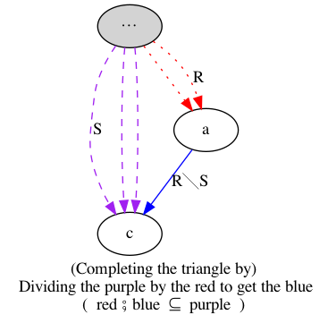
There has to be “more purple than red in order to get blue”; in particular, when there is no red, we can still get blue.
That is, when every purple path could instead take a red detour , then we complete the detour with a blue road so as to end at the purple path ; when there is no possible detour, we
If we can ever get to a pit-stop along a path , then we can complete the journey from the pit-stop to the intended destination.
digraph{
1; 2; 3; 4; A; C; F; D; E; B;
{B, A} -> 1 [color = blue]
C -> {1, 2} [color = blue]
F -> 4 [color = blue]
{D} -> {1, 2, 3, 4} [color=blue]
α, β, γ, δ [style=filled];
α -> {1, 4} [color=purple, style=dashed]
α -> {A, B} [color=red, style=dotted]
γ -> {1, 2} [color=purple, style=dashed]
γ -> {C, E,B} [color=red, style=dotted]
β -> {1, 2} [color=purple, style=dashed]
β -> {A, C, B} [color=red, style=dotted]
δ -> {4} [color=purple, style=dashed]
δ -> {F, E} [color=red, style=dotted]
;
label="“Red R” ⨾ “Blue R╲S” ⊆ “Purple S”
Walking red then blue, can always be done in one go as purple (•̀ᴗ•́)و
Moreover, this is the most possible (letters-to-numbers) blue with this property!"
}
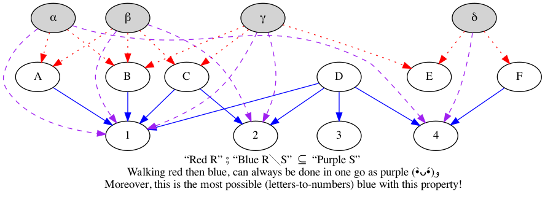
Notice that we do not have E ⟶ 4 since there are some ways to get to E but not to get to 4.
( Moreover, notice that we have D ⟶ 3 even though D is not reachable via any red or purple; which is fine since we want the most blue with the stated property. However, if our relations are finite, with infinite point sets, then their residuals would become infinite relations; to avoid this (e.g., for computer implementations), one can insist on drawing blue only from reachable elements thereby obtaining \(\mathsf{ran}\, R ⨾ (R ╲ S)\), for a relational definition of ‘range’ —the resulting operation is known as a restricted residual. See here for more. )
Notice that division internalises inclusion: \(R ⊆ S \quad≡\quad \Id ⊆ R ╲ S\).
digraph{
1; 2; 3; 4;
α, β, γ, δ [style=filled];
// 3 [pos="9,9!"];
// 45 [style=invisible]
// 45 -> 4, 1, 2, 3 [color = cyan, style=invisible]
// δ -> α [style = invisible]
α -> {1, 4} [color=purple, style=dashed]
β -> {1, 2} [color=purple, style=dashed]
γ -> {1, 2} [color=purple, style=dashed]
δ -> {4} [color=purple, style=dashed]
1 -> 1 [color = cyan]
2 -> 2, 1 [color = cyan]
3 -> 1,2,3,4 [color = cyan]
4 -> 4 [color = cyan]
;
label="“Purple S” ⨾ “Cyan S╲S” ⊆ “Purple S”
Walking purple then cyan, can always be done in one go as purple (•̀ᴗ•́)و
Moreover, this is the most possible cyan (among numbers) with this property!
( Self-division cyan is always a preorder. )"
}
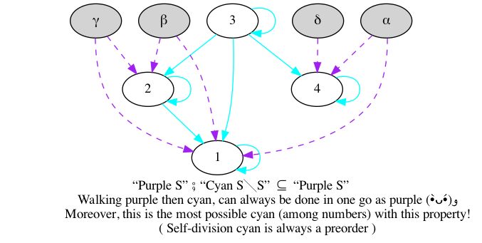
As mentioned in the example, it can be proven that \(S ╲ S\) is always a preorder; moreover, \(P\) is preorder precisely when \(P ╲ P = P\) and this is known as “inclusion from below”.
- \(≤ ╲ ≤ \;=\; ≤\)
- \(Ξ ╲ Ξ \;=\; Ξ\) for any equivalence Ξ —including equality ‘=’.
- \(∈ ╲ ∈ \;=\; ⊆\)
- \(∈ ╲ S : ℙ X ↔ Y\) relates a set \(A : ℙ X\) to all of its \(S : X ↔ Y\)
shared successors; it is related to what is called a “polar”.
- E.g., \(∈ ╲ ≤\) relates sets to their upper bounds.
For \(f, g\) functions, \(a (f ╲ g) c \;≡\; ∀ x • f(x) = a ⇒ g(x) = c\); i.e., the inputs f-yielding \(a\) are g-yield \(c\). That is, things with f-feature ‘a’ also have g-feature ‘c’ —if we think of functions as projecting, exposing, features (which they do!).
Suppose \(R\) is a relation between objects and their properties. Then two particularly common questions arise whenever has a subset \(A\) of objects —or a subset \(B\) of properties:
| Which of the properties do all of the objects of \(A\) have in common? |
| and, Which objects enjoy all the properties of \(B\)? |
Each is formulated as A〔∈╲R〕? and B〔∈╲R˘〕? with unknowns ? .
The operations \(Λ(∈╲R)\) and \(Λ(∈╲R˘)\) are then known as the upper (resp. lower) bound cone functionals or polars.
- For a relation \(R : X ↔Y\), its power transpose is the function \(ΛR : X → ℙ Y\) that sends each source value to the set of its associated target values: \(ΛR(x) = \{y ❙ x 〔R〕 y\}\).
In case it's not clear, since S╲S is a preorder for any S, we can (pre)order things according to _any_ relation we want morever, S╲S ∩ (S╲S)˘ is then the largest equivalence contained in that (pre)order .
In-fact, since it is such a commonly occurring event, it has its own name, the symmetric quotient of R and S is \[ R ╳ S \quad=\quad R╲S ∩ (R ╲ S)˘ \] Symmetric quotients give us a form of extensionality: \[x 〔R ╳ S〕 y \quad≡\quad (∀ z • z 〔R〕 x \;≡\; z 〔S〕 y)\]
Examples:
- Relations, in contrast to functions, are mainly introduced in order to assign
not precisely one result but a —possibly empty— set of results, so that
they are often conceived as set-valued functions.
\(ΛS \;=\; S ˘ ╳ ∈\) relates an element to its set of S-successors; this is known as “the power transpose” mapping. Note that \(Λ : (X ↔ Y) → X → ℙ Y\).
This is just set comprehension concerning the set assigned to an argument: \(ΛS(x) \;=\; \{ y \,❙\, x 〔S〕 y\}\).
Λ is uniquely characterised by: For any mapping f, and any relation R, \(\quad f = ΛR \quad≡\quad f⨾∈˘ = R\).
Due to typing reasons, the power transpose cannot preserve composition. However, we do have \(Λ(R) ⨾ \mathsf{E}(S) \;=\; Λ(R ⨾ S)\) where E is the existential image mapping.
\(\mathsf{E}\, S \;=\; (S˘⨾∈) × ∈\) relates a set of elements to their set of images; it is known as “the existential image” mapping. Note that \(\mathsf{E} : (X ↔ Y) → ℙ X → ℙ Y\).
As the name suggests, for every constituent of the result, there exists an argument for which it is the image. Or, using unions: \(\mathsf{E}S(A) \;=\; (∪ x \,❙\, x ∈ A • ΛS(x)) \;=\; \{ y \,❙\, (∃ x \,❙\, x ∈ A • x〔S〕 y) \}\). ( In Z notation, this is known as the relational image and denoted S⦇A⦈ = E S A. )
\(\mathsf{E}\) preserves composition and identity, and it ‘represents’ its argument: \(∈˘ ⨾ R \;=\; \mathsf{E}\,R ⨾ ∈ ˘\).
- \(∈ ╳ ∼∈\) relates a set to its complement
- \(\Id ╳ ∈\) wraps a value as a singleton set
\(∈ ╳ ∈ = \Id\) —this is set extensionality
The relation ∈ ╳ S is always surjective, and S = ∈ ⨾ (∈ ╳ S) whereas ∼S = ∉ ⨾ (∈ ╳ S).
“symmetric”?
The symmetric quotient is not a symmetric relation, nor need it even be homogeneous. The name describes that it is defined in some symmetric way.
It takes two possibly heterogenous relations with coinciding source and yields a relation from the first's target to the second's target; i.e., it's type is (X ↔ Y) → (X ↔ Z) → (Y ↔ Z).
Begin defined in terms of “≡”, symmetric quotients serve to internalise equality at the relational level and can be used to simulate set comprehensions and comparisons.
Theorems
- S ╳ R = (R ╳ S)˘ —equivalence is symmetric, but to flip the order of arguments bound by the ∀, we need the converse
- R ╳ S = R ╲ S ∩ ∼R ╲ ∼S —the equivalence via R and S is the conjunction of everything in R being in S and everything outside of R being outside of S.
- ∼R ╳ ∼S = R ╳ S —this is essentially double negation ;-)
Id ⊆ R ╳ R —equivalence is a reflexive relation ;-)
In-fact, R ╳ R is always an equivalence relation; whereas R ╳ S is difunctional.
Furthermore, when R is surjective we have R ╳ R ⊆ R˘ ⨾ R –and equality when R is additionally injective. More generally, R ˘ ⨾ S ⊆ R ╳ S when both R and S are injective.
R ⨾ (R ╳ R) = R —read “x is sent to some value R-indistinguishable from y” ≡ “x is sent to y”
More generally: R ⨾ (R ╳ S) = S ∩ ⊤⨾(R ╳ S) ⊆ S —whence, we have equality when R ╳ S is surjective.
However, we do have: (R ╳ R) ⨾ (R ╳ S) = R ╳ S.
(Q ╳ R) ⨾ (R ╳ S) = (Q ╳ S) ∩ (Q ╳ R)⨾⊤ = (Q ╳ S) ∩ ⊤⨾(R ╳ S) ⊆ Q ╳ S —whence, we have equality when Q ╳ R is total or R ╳ S is surjective.
Consequently: R ╳ S ⊆ (Q × R) ╲ (Q ╳ S)
Incidentally: R ╳ S ⊆ (Q ╳ R) ╳ (Q ╳ S) —with equality when Q ╳ R and Q ╳ S are surjective.
- Cancellation: R ╳ S ⊆ (Q ⨾ R) ╳ (Q ⨾ S) —with equality when Q is a surjective mapping.
- Distributivity: For every mapping f,
- f ⨾ (R ╳ S) = (R ⨾ f˘) ╳ S
- (R ╳ S) ⨾ f˘ = R ╳ (S ⨾ f˘) —this is the transpose of the previous one ;-)
- The relation (R ⨾ ∈) ╳ (R ⨾ S) is always surjective.
Then, \(P\) is an order precisely when \(P ╲ P = P\) and \(\Id \;=\; P ╳ P\) —this is known as “indirect equality”.
More generally, \(\Id \;⊆\; S ╳ S\) and, S is antisymmetric ≡ \(S ╳ S \;⊆\; \Id\).
Moreover, Ξ is an equivalence exactly when Ξ = Ξ ╳ Ξ.
- R injective ≡ R ⊆ R ╳ Id; i.e., if R associates x with y, then
the R preimage of y are exactly x.
- R injective ⇔ R ⨾ R ˘ ⊆ Id ⇔ R ˘ ⊆ R ╲ Id; i.e., “if y is the image of x, then every preimage of y must coincide with x”.
Finally, with residuals we can lift De Morgan's rule to the pure relational language —since the negation flips the ∃ of ⨾ with the ∀ of ╲— \[ \sim(R ⨾ S) \quad=\quad R ˘ ╲ \sim S \] \[ \sim(R ╲ S) \quad=\quad R ˘ ⨾ \sim S \]
For example, we can use these rules to rephrase what it means to be total.
| R is total | |
| = | R ⨾ ⊤ = ⊤ |
| = | ∼(R ⨾ ⊤) = ∼ ⊤ |
| = | R ˘ ╲ ⊥ = ⊥ |
| = | “For every point, it is not the case that it has no image.” |
Residuals are the tool to translate universal quantifications into (complement-free) relation-algebraic formulae.
12 Graphs
The first two sections below follow “Data Structures and Algorithms” by Aho, Hopcroft, and Ullman.
Let's make a neato graph rendering mechanism so we can actually see our graphs.
;; A Graph is implemented as a list of adjaceny lists; i.e., a list of lists; ;; i.e., an alist. However, to actually be practical, we allow the adjaencey ;; lists to have meta-data. ;; ;; Each adjaencey list can be in either metadata-style or not, the latter means ;; it is a node and a list of its neighbours, whereas the former means it is a ;; node followed by an alternating “:key value” elements only, with “:to” ;; followed by the neighbours of the node. Other keys include “:node-color, ;; :children-color”, and most importantly, any other meta-data the user wants ;; nodes to carry: For example, “:visited?” for searching or “:weight” for ;; weighted graphs. Since we're not pacaking up our graphs into structs, we ;; obtain this flexibility in terms of the kinds of meta-data allowed. ;; Helpers for readability (defun set-vertex-data (G x key value) (plist-put (cdr (assoc x G)) key value)) (defun get-vertex-data (G x key) (plist-get (cdr (assoc x G)) key)) ;; Yields ‘nil’ when ‘key’ is not present. (defun successors (G x) (let* ((ddata (cdr (assoc x G))) (to-s (plist-get ddata :to))) (pcase to-s ('(nil) nil) ('nil ddata) (nbrs nbrs)))) (defun predecessors (G x) (mapcar #'car (--filter (member x (successors G (car it))) G))) ;; Below I roll-out my own mini-graph-API, but there are others... ;; → “concept mapping” with Org-brain, uses Org as interface, not lisp: ;; ⟅ This is likely where I'd run into graphs and want to use them explicitly! ⟆ ;; https://github.com/Kungsgeten/org-brain ;; https://github.com/Kungsgeten/org-brain-export ;; https://github.com/swhalemwo/obvz ;; → Common Lisp library: https://quickref.common-lisp.net/cl-digraph.html ;; → Emacs Lisp library: https://github.com/storax/graph.el
(cl-defun show-graph (G &key (type 'png) (file (format "%s.%s" (make-temp-name "~/Downloads/graph_") type)) (text "") (cmd "dot")) "Given a graph G, an alist of nodes-neighbours, draw it. G may be provided as a super simple alist; or with data for each node in which case G is an alist of plists, with the neighbours :to; in-turn the neighbours can be a simple list, or have meta-data such as the weight or color of the edge to edge neighbour. TYPE: Either PNG or SVG Use HTML-renderable SVG to avoid having to copy-paste/save-refer PNGs FILE: File name, must end with extension being TYPE. A random name “~/Dowbnloads/graph_⋯” is used as default. TEXT: Any header text to appear in the graph. CMD: The command, eg ̨“dot” or “neato”, to produce the graph Neato produces graphs with less whitespace than does Dot, but otherwise the same thing. If you decide to use SVGs instead of PNGs, then the Org src should have as header “:wrap export html ”; otherwise use “”. A cookbook of Dot examples: https://renenyffenegger.ch/notes/tools/Graphviz/examples/index https://graphs.grevian.org/example " (org-babel-execute:dot (format "digraph {label = \"%s\"\nlabelloc = \"t\"\nrankdir=TB\n%s}" text (loop for (node . data) in G for node-color = (or (plist-get data :node-color) "black") for edge-color = (or (plist-get data :edge-color) "black") ;; The extra " are so that we can escape unicode names for Dot concat (concat (format "\n\"%s\"[color=\"%s\"];" node node-color) (loop for c in (successors G node) for c′ = (if (listp c) c (list c)) for color = (or (plist-get (cdr c′) :color) edge-color) concat (format "\n\"%s\" -> \"%s\" [color=\"%s\"]" node (car c′) color))))) `((:file . ,file) ;; Use HTML-renderable SVG to avoid having to copy-paste/save-refer PNGs ,@(when (equal 'svg type) '((:cmdline . "-Tsvg"))) ;; Neato produces graphs with less whitespace than does Dot, but otherwise the same thing. (:cmd . ,cmd))) ;; Return file name or dump entire contents here (if (equal 'png type) (format "[[file:%s]]" file) (org-file-contents file)))
12.1 Traversing a graph depth-first
To solve many problems dealing with directed graphs efficiently we need to visit the vertices and arcs of a directed graph in a systematic fashion. Depth-first search, a generalisation of the preorder traversal of a tree, is one important technique for doing so. Depth-first search can serve as a skeleton around which many other efficient graph algorithms can be built.
In English, how does DFS work?
Suppose we have a directed graph \(G\) in which all vertices are initially marked unvisited. Depth-first search works by selecting one vertex \(v\) of \(G\) as a start vertex; \(v\) is marked visited. Then each unvisited vertex adjacent to \(v\) is searched in turn, using depth-first search recursively. Once all vertices that can be reached from \(v\) have been visited, the search from \(v\) is complete. If some vertices remain unvisited —e.g., in a disconnected DAG— we select an unvisited vertex as a new start vertex. We repeat this process until all vertices of \(G\) have been visited.
{- An array ‘mark’, to determine whether a vertex has been previously visited,
needs to be in scope, and we update that array. -}
procedure dfs (vertex x):
mark[x] := visited
for each vertex y adjacent to x:
if mark[y] = unvisited then dfs(y)
The above code is a template to which we shall attach other actions later, as
apply DFS, which requires we initialise an array mark to unvisited and then
commence a depth-first search from each unvisited vertex:
for each vertex x: mark[x] := unvisited
for each vertex x: if mark[x] = unvisited
then dfs(x)
{- Do an action on ‘x’ before/after the search -}
An example of a fully-implemented DFS and its use with an associated action is below.
Analysis of DFS: Linear in the number of edges
At the call site, we call dfs once for each vertex
and we never call it again for that same vertex since it is immediately marked
as visited. Thus, the total time spend visiting adjacent vertices is essentially
the sum of the lengths of those adjacency lists.
If the ♯nodes ≤ ♯edges, then the total time spent on dfs is linear in ♯edges, which is the time needed to “look at” each arc —now that's efficient!
Why is it called “depth-first search”?
This technique is called depth-first search because it continues searching in the forward/deeper/‘down’ direction as long as possible. For example, suppose \(x\) is the most recently visited vertex. Depth-first search selects some unexplored arc \(x ⟶ y\) emanating from \(x\). If \(y\) has been visited, the procedure looks for another unexplored arc emanating from \(x\). If \(y\) has not been visited, then the procedure marks \(y\) visited and initiates a new search at \(y\). After completing the search through all paths beginning at \(y\), the search returns to \(x\), the vertex from which \(y\) was first visited. The process of selecting unexplored arcs emanating from \(x\) is then continued until all arcs from \(x\) have been explored.
Below is an implementation and use of DFS in Lisp. Notice that we visit the deeper nodes first –i.e., we go leftmost, in this particular case, and so very reminiscent of in-order tree traversal from Ex12.
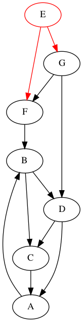 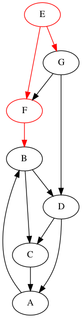 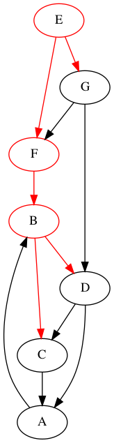 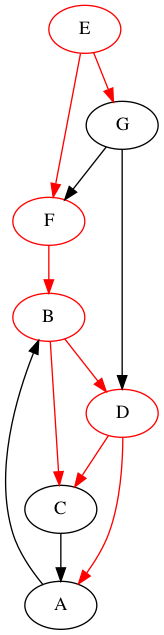 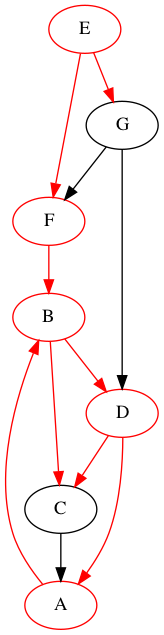 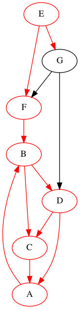 
Above obtained from folowing snippet without "shuffle".
Note that if we coloured the visited nodes after doing dfs at each vertex, then the colouring would be “backwards”: I.e., we colour the very final visted node, then the one before it, then the one before that, etc.
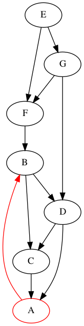  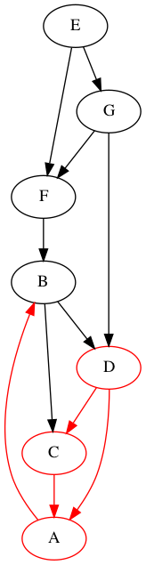 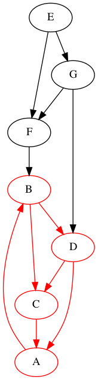 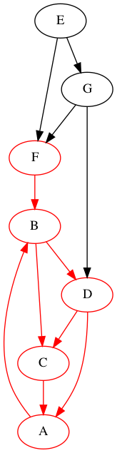 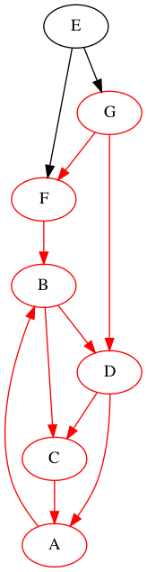 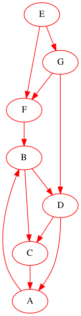
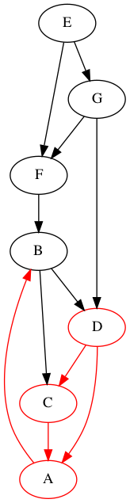 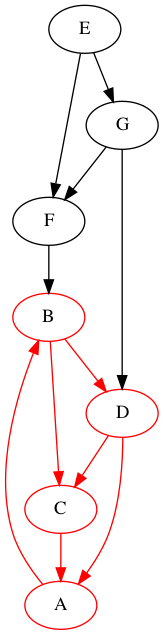 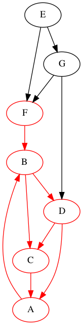 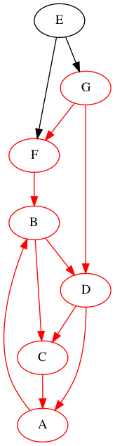 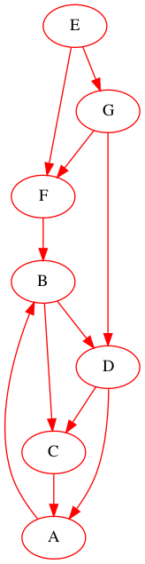
Above obtained from folowing snippet without "shuffle" and with :post instead of :pre.
The DFS began at any node, so we could start at, say, G.
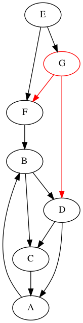 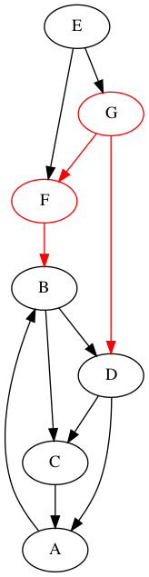 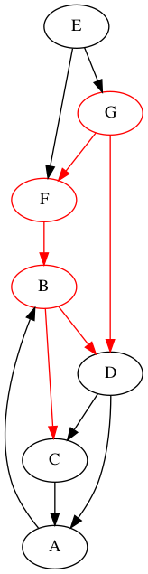 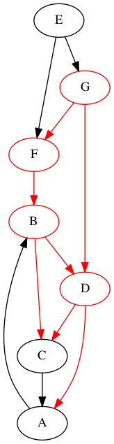 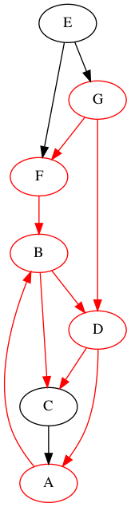
Moreover, the way we
draw
a graph does not really matter: We can move the
nodes up or down and make the arrows longer or shorter —that is, the
topology
of a graph does not matter much except for giving possibly nicer
visitations. So, let's draw the above graph differently and, again the DFS
may begin at any node, so we could start at, say, D.
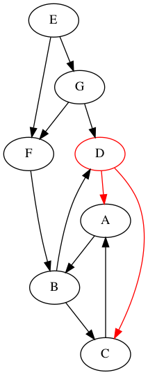 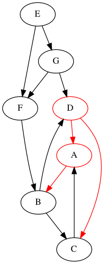 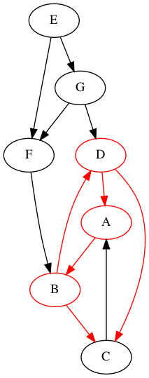 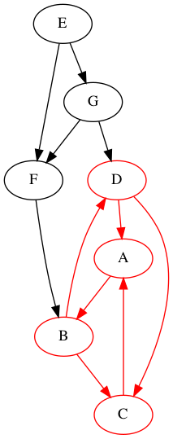 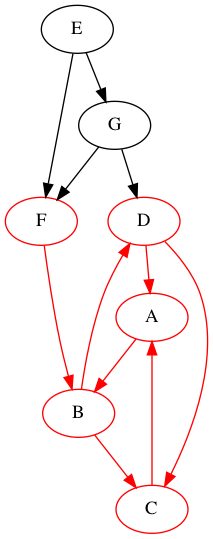 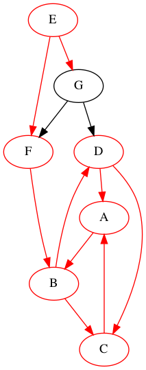 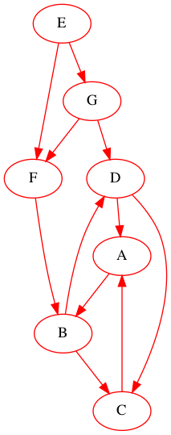
Below is a 7-line implementation of DFS and an example usage in Lisp.
(defun shuffle (xs) (sort xs (lambda (x y) (= 0 (random 2))))) ;; Super simple DFS graph traversal WITH an pre- and post- actions. (cl-defun dfs (G xx &key (pre #'identity) (post #'identity)) (set-vertex-data G xx :visited? t) (funcall pre xx) (loop for y in (successors G xx) do (when (not (get-vertex-data G y :visited?)) (dfs G y :pre pre :post post))) (funcall post xx)) ;; Actually using DFS (let ((G (shuffle '( (E :to (F G)) (F :to (B)) (B :to (D C)) (C :to (A)) (A :to (B)) (D :to (A C)) (G :to (F D))))) step-by-step) ;; Not needed since absent keys have default value ‘nil’ ;; (loop for (node . nbrs) in G do (set-vertex-data G node :visited? nil)) (loop for (node . data) in G when (not (get-vertex-data G node :visited?)) do (dfs G node :pre (lambda (n) (set-vertex-data G n :node-color 'red) (set-vertex-data G n :edge-color 'red) (push (show-graph G :file (format "images/DFS-generalises-inorder-shuffle-3-%s.png" n)) step-by-step)))) (reverse step-by-step))
12.2 DAGs and Topological Sort
A directed cyclic graph, or dag for short, is a directed graph with no cycles. Measured in terms of the relationships they can represent, dags are more general than trees but less general than arbitrary directed graphs.
Among other things, dags can be useful in representing the syntactic structure of arithmetic expressions with common subexpressions. For example, the dag below shows how a subexpression can be shared —which is represented as a vertex with more than one incoming arc.
;; DAG, but not a tree due the diamond. (show-graph '((* + /) (+ a b) (/ + c)) :file "images/dags-allow-sharing.png" :text "(a + b) * ( (a + b) / c) \n ⟅ The subexpression “a + b” is shared! ⟆")
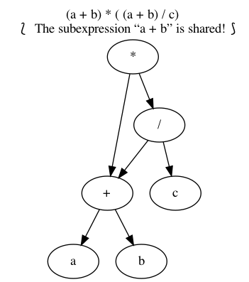
Dags are also useful in representing partial orders –or to portray them graphically. That is, if \(R\) is an order on a set \(N\), then \((S, R - \Id)\) is a dag; conversely, if \((S, R)\) is a dag then \(R^*\) is an order on \(S\) —where \(a 〔R^*〕b\) precisely when there is a path from \(a\) to \(b\). Below is a dag whose reflexive-transitive closure gives the properer containment on the power set \(ℙ(1..3)\).
(show-graph '( ("{1, 2, 3}" "{1, 2}" "{1, 3}" "{2, 3}") ("{1, 2}" "{1}" "{2}") ("{2, 3}" "{2}" "{3}") ("{1, 3}" "{1}" "{3}") ("{1}" "∅") ("{2}" "∅") ("{3}" "∅")) :file "images/power-fin3-order.png")
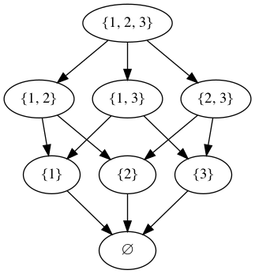
A large project is often divided into a collection of smaller tasks, some of which have to be performed in certain specified orders so that we may complete the entire project. for example, a university curriculum may have courses that require other courses as prerequisites. Dags can be used to model such situations naturally. For example, we would have an arc from course \(C\) to course \(D\) if \(C\) is a prerequiste for \(D\).
Below, for instance, is a dag giving a preresuiste structure on five courses. Course C3, for example, requires courses C1 and C2 as prerequisites.
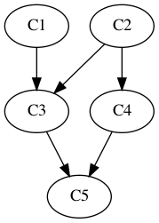
Topological sort is a process of assigning a linear ordering to the vertices of a dag so that if there is an arc from vertex \(i\) to vertex \(j\), then \(i\) appears before \(j\) in the linear ordering. The following example sequences are all topological sorts of the above dag since taking courses in any of those sequences would satisfy the prerequiste structure of the dag.
| C1 C2 C3 C4 C5 |
|---|
| C2 C4 C1 C3 C5 |
| C1 C2 C4 C3 C5 |
If we write ‘⟶’ for the directed adjacency relation of the graph, then topological sort produces a sequence \(xs\) such that \[ i ⟶^* j \quad⇒\quad “\; i\text{'s position in } xs \;” \;≤\; “\;j\text{'s position in } xs\;”\]
That is, the partial order ‘\(⟶^*\)’ is extended to a linear order ‘≤’.
Notice that topological sort is easily accomplished by adding a statement to keep track of the nodes after each stage of the dfs, thereby accumulating in reverse topological order all vertices of a dag accessible from ‘whatever starting node is used’ by a path in the dag.
(let ((G (shuffle '( (C1 :to (C3)) (C3 :to (C5)) (C2 :to (C3 C4)) (C4 :to (C5)) (C5 :to (nil))))) step-by-step) ;; Not needed since absent keys have default value ‘nil’ ;; (loop for (node . nbrs) in G do (set-vertex-data G x :visited? nil)) (loop for (node . data) in G if (not (get-vertex-data G node :visited?)) do (dfs G node :post (lambda (n) (push n step-by-step)))) (cons (show-graph G :file "images/top-sort.png") step-by-step))
That is, topological sort is a constructive proof of the following theorem…
Theorem: Every partial order can be extended to a linear order.
| Programming = Proving! |
12.3 201 Practice Graphs
Each graph below denotes a homogeneous relation E : N ↔ N where N is the set of
nodes of the graph, and E is defined by: x 〔 E 〕 y precisely when there is a
directed arc from x to y.
Try to determine if the relation is total, univalent, injective, and/or surjective.
| Please use the Course Help if you want to discuss why a certain graph has a property. |
Hint: Look at the prop Lisp code below ;-) Or Look at the 2DM3CheatSheet ;-)
The answers are hidden so you can solve the problem; hover on the hidden answer to see it.
(cl-defun rndm-graph (N &key (no-isolated-nodes t)) (-let [G (mapcar #'list (number-sequence 1 N))] (loop for x from 1 to N do (if (= 0 (random 2)) nil ;; 0 = forever alone (loop for y from 1 to N do (case (random 3) (0 nil) ;; not related to y ;; The unless checks are to avoid multirelations, non-simple graphs (1 (push y (cdr (assoc x G)))) (2 (push x (cdr (assoc y G)))))))) ;; Ensure there's no isolated nodes, thereby more likely to be connected (when no-isolated-nodes (loop for x from 1 to N for y = (elt (remove x (number-sequence 1 N)) (random (1- N))) do (unless (remove x (-concat (predecessors G x) (successors G x))) (case (random 2) (0 (push x (cdr (assoc y G)))) (1 (push y (cdr (assoc x G)))))))) G)) ; (show-graph (rndm-graph 7))
(defun prop (R n) "Check if R : 1..n ↔ 1..n has certain properties. Returns an alist, not a plist, of properties." (let (tot uni inj surj conn) (map-apply ;; yields alists! (lambda (key val) (cons key (if val "Yes" "No"))) (list ;; total: Every x is related to at least 1 y. :total (-all? (lambda (i) (>= (length (successors R i)) 1)) (number-sequence 1 n)) ;; univalent: Every x is related to at most 1 y. :univalent (-all? (lambda (i) (<= (length (successors R i)) 1)) (number-sequence 1 n)) ;; injective: Every y is related to at most 1 x. :injective (-all? (lambda (i) (<= (length (predecessors R i)) 1)) (number-sequence 1 n)) ;; surjective: Every y is related to at least 1 x. :surjective (-all? (lambda (i) (>= (length (predecessors R i)) 1)) (number-sequence 1 n))))))
(loop for c from 0 to 200 for N = (+ 3 (random 4)) for G = (rndm-graph N) concat (-let [(&alist :total :univalent :injective :surjective) (prop G N)] (concat (format "\n@@html: <hr>@@ link-here:practice-graph-%s @@html: <strong>Practice Graph ♯ %s </strong>@@\n\n" c c) (show-graph G :file (format "images/practice_graph_%s.png" c)) "\n#+begin_spoiler \n" (format (s-collapse-whitespace "total: ((%s)); univalent: ((%s)); injective: ((%s)); surjective: ((%s))") total univalent injective surjective) "\n#+end_spoiler \n")))
Practice Graph ♯ 0
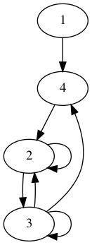
Total: Yes ; Univalent: No ; Injective: No ; Surjective: No
Practice Graph ♯ 1
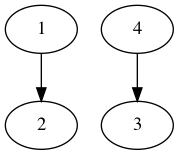
Total: No ; Univalent: Yes ; Injective: Yes ; Surjective: No
Practice Graph ♯ 2
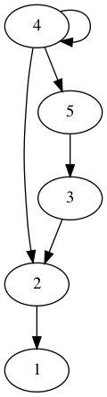
Total: No ; Univalent: No ; Injective: No ; Surjective: Yes
Practice Graph ♯ 3
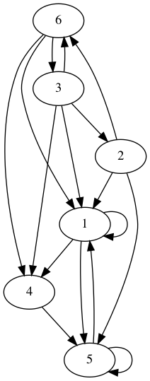
Total: Yes ; Univalent: No ; Injective: No ; Surjective: Yes
Practice Graph ♯ 4
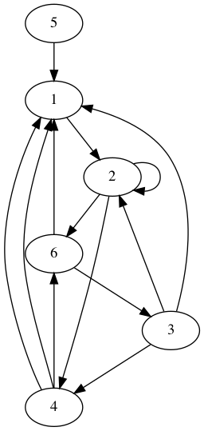
Total: Yes ; Univalent: No ; Injective: No ; Surjective: No
Practice Graph ♯ 5
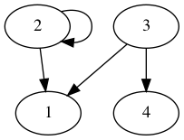
Total: No ; Univalent: No ; Injective: No ; Surjective: No
Practice Graph ♯ 6
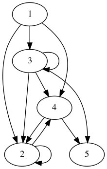
Total: No ; Univalent: No ; Injective: No ; Surjective: No
Practice Graph ♯ 7
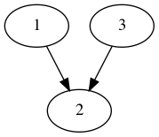
Total: No ; Univalent: Yes ; Injective: No ; Surjective: No
Practice Graph ♯ 8
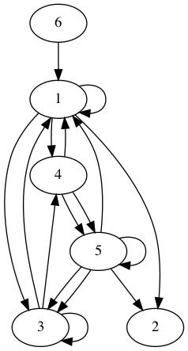
Total: No ; Univalent: No ; Injective: No ; Surjective: No
Practice Graph ♯ 9
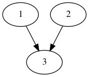
Total: No ; Univalent: Yes ; Injective: No ; Surjective: No
Practice Graph ♯ 10
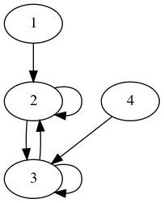
Total: Yes ; Univalent: No ; Injective: No ; Surjective: No
Practice Graph ♯ 11
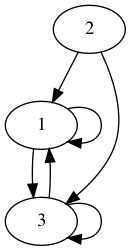
Total: Yes ; Univalent: No ; Injective: No ; Surjective: No
Practice Graph ♯ 12
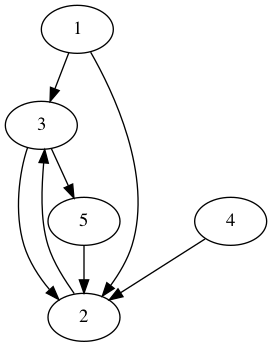
Total: Yes ; Univalent: No ; Injective: No ; Surjective: No
Practice Graph ♯ 13
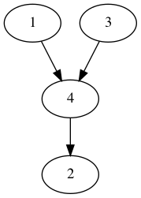
Total: No ; Univalent: Yes ; Injective: No ; Surjective: No
Practice Graph ♯ 14
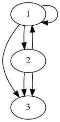
Total: No ; Univalent: No ; Injective: No ; Surjective: Yes
Practice Graph ♯ 15
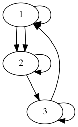
Total: Yes ; Univalent: No ; Injective: No ; Surjective: Yes
Practice Graph ♯ 16
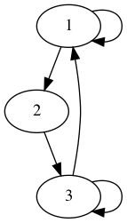
Total: Yes ; Univalent: No ; Injective: No ; Surjective: Yes
Practice Graph ♯ 17
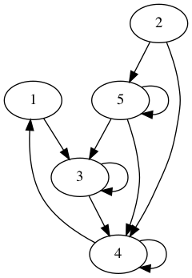
Total: Yes ; Univalent: No ; Injective: No ; Surjective: No
Practice Graph ♯ 18
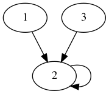
Total: Yes ; Univalent: Yes ; Injective: No ; Surjective: No
Practice Graph ♯ 19
Total: No ; Univalent: No ; Injective: No ; Surjective: No
Practice Graph ♯ 20
Total: No ; Univalent: No ; Injective: No ; Surjective: No
Practice Graph ♯ 21
Total: Yes ; Univalent: No ; Injective: No ; Surjective: Yes
Practice Graph ♯ 22
Total: No ; Univalent: No ; Injective: No ; Surjective: No
Practice Graph ♯ 23
Total: No ; Univalent: No ; Injective: No ; Surjective: No
Practice Graph ♯ 24
Total: No ; Univalent: No ; Injective: No ; Surjective: No
Practice Graph ♯ 25
Total: No ; Univalent: Yes ; Injective: Yes ; Surjective: No
Practice Graph ♯ 26
Total: Yes ; Univalent: No ; Injective: No ; Surjective: Yes
Practice Graph ♯ 27
Total: No ; Univalent: No ; Injective: No ; Surjective: No
Practice Graph ♯ 28
Total: No ; Univalent: No ; Injective: No ; Surjective: No
Practice Graph ♯ 29
Total: Yes ; Univalent: No ; Injective: No ; Surjective: Yes
Practice Graph ♯ 30
Total: No ; Univalent: No ; Injective: No ; Surjective: No
Practice Graph ♯ 31
Total: No ; Univalent: No ; Injective: No ; Surjective: No
Practice Graph ♯ 32
Total: Yes ; Univalent: No ; Injective: No ; Surjective: No
Practice Graph ♯ 33
Total: No ; Univalent: No ; Injective: No ; Surjective: Yes
Practice Graph ♯ 34
Total: No ; Univalent: Yes ; Injective: Yes ; Surjective: No
Practice Graph ♯ 35
Total: No ; Univalent: No ; Injective: No ; Surjective: No
Practice Graph ♯ 36
Total: Yes ; Univalent: Yes ; Injective: No ; Surjective: No
Practice Graph ♯ 37
Total: Yes ; Univalent: No ; Injective: No ; Surjective: No
Practice Graph ♯ 38
Total: No ; Univalent: No ; Injective: No ; Surjective: Yes
Practice Graph ♯ 39
Total: No ; Univalent: Yes ; Injective: Yes ; Surjective: No
Practice Graph ♯ 40

Total: No ; Univalent: Yes ; Injective: No ; Surjective: No
Practice Graph ♯ 41
Total: No ; Univalent: No ; Injective: No ; Surjective: No
Practice Graph ♯ 42
Total: Yes ; Univalent: No ; Injective: No ; Surjective: Yes
Practice Graph ♯ 43
Total: No ; Univalent: No ; Injective: No ; Surjective: No
Practice Graph ♯ 44
Total: No ; Univalent: No ; Injective: No ; Surjective: No
Practice Graph ♯ 45
Total: No ; Univalent: No ; Injective: No ; Surjective: No
Practice Graph ♯ 46
Total: Yes ; Univalent: No ; Injective: No ; Surjective: Yes
Practice Graph ♯ 47

Total: No ; Univalent: Yes ; Injective: No ; Surjective: No
Practice Graph ♯ 48
Total: No ; Univalent: No ; Injective: No ; Surjective: No
Practice Graph ♯ 49
Total: Yes ; Univalent: Yes ; Injective: No ; Surjective: No
Practice Graph ♯ 50
Total: Yes ; Univalent: No ; Injective: No ; Surjective: Yes
Practice Graph ♯ 51
Total: No ; Univalent: No ; Injective: No ; Surjective: No
Practice Graph ♯ 52
Total: Yes ; Univalent: No ; Injective: No ; Surjective: Yes
Practice Graph ♯ 53
Total: No ; Univalent: No ; Injective: Yes ; Surjective: No
Practice Graph ♯ 54
Total: No ; Univalent: No ; Injective: No ; Surjective: No
Practice Graph ♯ 55
Total: Yes ; Univalent: No ; Injective: No ; Surjective: Yes
Practice Graph ♯ 56
Total: Yes ; Univalent: No ; Injective: No ; Surjective: Yes
Practice Graph ♯ 57
Total: Yes ; Univalent: No ; Injective: No ; Surjective: No
Practice Graph ♯ 58
Total: No ; Univalent: Yes ; Injective: No ; Surjective: No
Practice Graph ♯ 59
Total: No ; Univalent: Yes ; Injective: Yes ; Surjective: No
Practice Graph ♯ 60
Total: Yes ; Univalent: Yes ; Injective: No ; Surjective: No
Practice Graph ♯ 61
Total: No ; Univalent: No ; Injective: No ; Surjective: No
Practice Graph ♯ 62
Total: No ; Univalent: No ; Injective: No ; Surjective: No
Practice Graph ♯ 63
Total: Yes ; Univalent: No ; Injective: No ; Surjective: Yes
Practice Graph ♯ 64
Total: Yes ; Univalent: No ; Injective: No ; Surjective: Yes
Practice Graph ♯ 65
Total: Yes ; Univalent: No ; Injective: No ; Surjective: Yes
Practice Graph ♯ 66
Total: Yes ; Univalent: No ; Injective: No ; Surjective: No
Practice Graph ♯ 67
Total: No ; Univalent: No ; Injective: No ; Surjective: Yes
Practice Graph ♯ 68
Total: No ; Univalent: No ; Injective: No ; Surjective: Yes
Practice Graph ♯ 69
Total: No ; Univalent: No ; Injective: No ; Surjective: Yes
Practice Graph ♯ 70
Total: No ; Univalent: No ; Injective: No ; Surjective: No
Practice Graph ♯ 71
Total: No ; Univalent: No ; Injective: No ; Surjective: No
Practice Graph ♯ 72
Total: No ; Univalent: No ; Injective: Yes ; Surjective: Yes
Practice Graph ♯ 73
Total: No ; Univalent: No ; Injective: No ; Surjective: No
Practice Graph ♯ 74
Total: Yes ; Univalent: No ; Injective: No ; Surjective: No
Practice Graph ♯ 75
Total: No ; Univalent: No ; Injective: No ; Surjective: No
Practice Graph ♯ 76
Total: No ; Univalent: No ; Injective: No ; Surjective: Yes
Practice Graph ♯ 77
Total: Yes ; Univalent: No ; Injective: No ; Surjective: No
Practice Graph ♯ 78
Total: No ; Univalent: Yes ; Injective: Yes ; Surjective: No
Practice Graph ♯ 79

Total: No ; Univalent: No ; Injective: No ; Surjective: No
Practice Graph ♯ 80
Total: No ; Univalent: Yes ; Injective: No ; Surjective: No
Practice Graph ♯ 81

Total: No ; Univalent: No ; Injective: No ; Surjective: No
Practice Graph ♯ 82

Total: No ; Univalent: No ; Injective: No ; Surjective: No
Practice Graph ♯ 83
Total: No ; Univalent: No ; Injective: No ; Surjective: Yes
Practice Graph ♯ 84
Total: No ; Univalent: No ; Injective: No ; Surjective: No
Practice Graph ♯ 85
Total: Yes ; Univalent: No ; Injective: No ; Surjective: No
Practice Graph ♯ 86
Total: Yes ; Univalent: Yes ; Injective: No ; Surjective: No
Practice Graph ♯ 87
Total: Yes ; Univalent: No ; Injective: No ; Surjective: Yes
Practice Graph ♯ 88
Total: Yes ; Univalent: No ; Injective: No ; Surjective: No
Practice Graph ♯ 89
Total: No ; Univalent: No ; Injective: No ; Surjective: Yes
Practice Graph ♯ 90
Total: No ; Univalent: No ; Injective: Yes ; Surjective: Yes
Practice Graph ♯ 91
Total: No ; Univalent: No ; Injective: No ; Surjective: No
Practice Graph ♯ 92
Total: No ; Univalent: No ; Injective: No ; Surjective: Yes
Practice Graph ♯ 93
Total: Yes ; Univalent: No ; Injective: No ; Surjective: Yes
Practice Graph ♯ 94
Total: Yes ; Univalent: No ; Injective: No ; Surjective: No
Practice Graph ♯ 95

Total: Yes ; Univalent: No ; Injective: No ; Surjective: Yes
Practice Graph ♯ 96
Total: No ; Univalent: No ; Injective: Yes ; Surjective: No
Practice Graph ♯ 97
Total: No ; Univalent: No ; Injective: Yes ; Surjective: No
Practice Graph ♯ 98
Total: No ; Univalent: Yes ; Injective: No ; Surjective: No
Practice Graph ♯ 99
Total: No ; Univalent: No ; Injective: No ; Surjective: No
Practice Graph ♯ 100
Total: No ; Univalent: No ; Injective: No ; Surjective: No
Practice Graph ♯ 101
Total: No ; Univalent: Yes ; Injective: Yes ; Surjective: No
Practice Graph ♯ 102
Total: No ; Univalent: No ; Injective: No ; Surjective: No
Practice Graph ♯ 103
Total: No ; Univalent: No ; Injective: No ; Surjective: No
Practice Graph ♯ 104
Total: Yes ; Univalent: Yes ; Injective: No ; Surjective: No
Practice Graph ♯ 105
Total: Yes ; Univalent: No ; Injective: No ; Surjective: Yes
Practice Graph ♯ 106
Total: No ; Univalent: No ; Injective: No ; Surjective: Yes
Practice Graph ♯ 107
Total: No ; Univalent: No ; Injective: No ; Surjective: Yes
Practice Graph ♯ 108
Total: No ; Univalent: No ; Injective: Yes ; Surjective: Yes
Practice Graph ♯ 109
Total: No ; Univalent: No ; Injective: No ; Surjective: No
Practice Graph ♯ 110
Total: No ; Univalent: No ; Injective: No ; Surjective: No
Practice Graph ♯ 111
Total: No ; Univalent: No ; Injective: No ; Surjective: No
Practice Graph ♯ 112
Total: Yes ; Univalent: No ; Injective: No ; Surjective: No
Practice Graph ♯ 113
Total: Yes ; Univalent: No ; Injective: No ; Surjective: No
Practice Graph ♯ 114
Total: No ; Univalent: No ; Injective: Yes ; Surjective: No
Practice Graph ♯ 115
Total: No ; Univalent: No ; Injective: Yes ; Surjective: No
Practice Graph ♯ 116

Total: No ; Univalent: No ; Injective: No ; Surjective: No
Practice Graph ♯ 117
Total: No ; Univalent: No ; Injective: No ; Surjective: Yes
Practice Graph ♯ 118
Total: No ; Univalent: No ; Injective: No ; Surjective: Yes
Practice Graph ♯ 119
Total: Yes ; Univalent: No ; Injective: No ; Surjective: Yes
Practice Graph ♯ 120
Total: No ; Univalent: No ; Injective: No ; Surjective: No
Practice Graph ♯ 121
Total: Yes ; Univalent: No ; Injective: No ; Surjective: No
Practice Graph ♯ 122
Total: No ; Univalent: Yes ; Injective: Yes ; Surjective: No
Practice Graph ♯ 123
Total: Yes ; Univalent: Yes ; Injective: No ; Surjective: No
Practice Graph ♯ 124
Total: Yes ; Univalent: No ; Injective: No ; Surjective: Yes
Practice Graph ♯ 125
Total: No ; Univalent: Yes ; Injective: No ; Surjective: No
Practice Graph ♯ 126
Total: Yes ; Univalent: No ; Injective: No ; Surjective: No
Practice Graph ♯ 127
Total: No ; Univalent: No ; Injective: No ; Surjective: Yes
Practice Graph ♯ 128
Total: Yes ; Univalent: No ; Injective: No ; Surjective: Yes
Practice Graph ♯ 129
Total: Yes ; Univalent: No ; Injective: No ; Surjective: No
Practice Graph ♯ 130
Total: No ; Univalent: No ; Injective: No ; Surjective: Yes
Practice Graph ♯ 131
Total: No ; Univalent: No ; Injective: No ; Surjective: No
Practice Graph ♯ 132
Total: Yes ; Univalent: No ; Injective: No ; Surjective: Yes
Practice Graph ♯ 133
Total: No ; Univalent: No ; Injective: No ; Surjective: No
Practice Graph ♯ 134
Total: No ; Univalent: No ; Injective: No ; Surjective: No
Practice Graph ♯ 135
Total: No ; Univalent: No ; Injective: No ; Surjective: Yes
Practice Graph ♯ 136
Total: Yes ; Univalent: No ; Injective: No ; Surjective: No
Practice Graph ♯ 137
Total: No ; Univalent: No ; Injective: No ; Surjective: No
Practice Graph ♯ 138
Total: No ; Univalent: No ; Injective: No ; Surjective: No
Practice Graph ♯ 139
Total: Yes ; Univalent: No ; Injective: No ; Surjective: No
Practice Graph ♯ 140
Total: No ; Univalent: No ; Injective: No ; Surjective: Yes
Practice Graph ♯ 141
Total: Yes ; Univalent: No ; Injective: No ; Surjective: Yes
Practice Graph ♯ 142
Total: Yes ; Univalent: No ; Injective: No ; Surjective: No
Practice Graph ♯ 143
Total: Yes ; Univalent: No ; Injective: No ; Surjective: No
Practice Graph ♯ 144
Total: Yes ; Univalent: No ; Injective: No ; Surjective: Yes
Practice Graph ♯ 145
Total: No ; Univalent: No ; Injective: No ; Surjective: No
Practice Graph ♯ 146
Total: Yes ; Univalent: Yes ; Injective: No ; Surjective: No
Practice Graph ♯ 147
Total: Yes ; Univalent: Yes ; Injective: No ; Surjective: No
Practice Graph ♯ 148
Total: No ; Univalent: No ; Injective: No ; Surjective: No
Practice Graph ♯ 149
Total: No ; Univalent: No ; Injective: No ; Surjective: No
Practice Graph ♯ 150

Total: No ; Univalent: No ; Injective: No ; Surjective: No
Practice Graph ♯ 151
Total: No ; Univalent: No ; Injective: No ; Surjective: No
Practice Graph ♯ 152
Total: No ; Univalent: No ; Injective: No ; Surjective: No
Practice Graph ♯ 153
Total: No ; Univalent: No ; Injective: No ; Surjective: No
Practice Graph ♯ 154
Total: Yes ; Univalent: Yes ; Injective: No ; Surjective: No
Practice Graph ♯ 155

Total: No ; Univalent: No ; Injective: No ; Surjective: Yes
Practice Graph ♯ 156
Total: No ; Univalent: No ; Injective: No ; Surjective: No
Practice Graph ♯ 157
Total: No ; Univalent: No ; Injective: No ; Surjective: No
Practice Graph ♯ 158

Total: Yes ; Univalent: Yes ; Injective: No ; Surjective: No
Practice Graph ♯ 159
Total: No ; Univalent: No ; Injective: Yes ; Surjective: Yes
Practice Graph ♯ 160
Total: No ; Univalent: No ; Injective: No ; Surjective: No
Practice Graph ♯ 161
Total: Yes ; Univalent: No ; Injective: No ; Surjective: No
Practice Graph ♯ 162

Total: Yes ; Univalent: No ; Injective: No ; Surjective: Yes
Practice Graph ♯ 163
Total: Yes ; Univalent: No ; Injective: No ; Surjective: Yes
Practice Graph ♯ 164

Total: No ; Univalent: No ; Injective: No ; Surjective: No
Practice Graph ♯ 165
Total: Yes ; Univalent: No ; Injective: No ; Surjective: No
Practice Graph ♯ 166
Total: Yes ; Univalent: No ; Injective: No ; Surjective: Yes
Practice Graph ♯ 167
Total: Yes ; Univalent: No ; Injective: No ; Surjective: No
Practice Graph ♯ 168
Total: Yes ; Univalent: No ; Injective: No ; Surjective: No
Practice Graph ♯ 169
Total: No ; Univalent: No ; Injective: No ; Surjective: Yes
Practice Graph ♯ 170
Total: No ; Univalent: No ; Injective: No ; Surjective: No
Practice Graph ♯ 171
Total: Yes ; Univalent: Yes ; Injective: No ; Surjective: No
Practice Graph ♯ 172
Total: Yes ; Univalent: No ; Injective: No ; Surjective: Yes
Practice Graph ♯ 173
Total: No ; Univalent: Yes ; Injective: Yes ; Surjective: No
Practice Graph ♯ 174
Total: Yes ; Univalent: No ; Injective: No ; Surjective: Yes
Practice Graph ♯ 175
Total: Yes ; Univalent: No ; Injective: No ; Surjective: Yes
Practice Graph ♯ 176
Total: No ; Univalent: No ; Injective: No ; Surjective: Yes
Practice Graph ♯ 177
Total: No ; Univalent: No ; Injective: Yes ; Surjective: No
Practice Graph ♯ 178
Total: Yes ; Univalent: No ; Injective: No ; Surjective: Yes
Practice Graph ♯ 179
Total: Yes ; Univalent: No ; Injective: No ; Surjective: Yes
Practice Graph ♯ 180
Total: No ; Univalent: No ; Injective: No ; Surjective: No
Practice Graph ♯ 181
Total: Yes ; Univalent: No ; Injective: No ; Surjective: No
Practice Graph ♯ 182
Total: No ; Univalent: Yes ; Injective: No ; Surjective: No
Practice Graph ♯ 183

Total: No ; Univalent: No ; Injective: No ; Surjective: Yes
Practice Graph ♯ 184
Total: No ; Univalent: No ; Injective: No ; Surjective: Yes
Practice Graph ♯ 185
Total: Yes ; Univalent: No ; Injective: No ; Surjective: No
Practice Graph ♯ 186
Total: No ; Univalent: No ; Injective: No ; Surjective: Yes
Practice Graph ♯ 187
Total: No ; Univalent: No ; Injective: No ; Surjective: Yes
Practice Graph ♯ 188
Total: Yes ; Univalent: No ; Injective: No ; Surjective: No
Practice Graph ♯ 189

Total: Yes ; Univalent: No ; Injective: No ; Surjective: No
Practice Graph ♯ 190
Total: No ; Univalent: No ; Injective: No ; Surjective: No
Practice Graph ♯ 191
Total: No ; Univalent: No ; Injective: No ; Surjective: No
Practice Graph ♯ 192
Total: Yes ; Univalent: No ; Injective: No ; Surjective: Yes
Practice Graph ♯ 193
Total: Yes ; Univalent: No ; Injective: No ; Surjective: No
Practice Graph ♯ 194
Total: No ; Univalent: No ; Injective: No ; Surjective: No
Practice Graph ♯ 195
Total: No ; Univalent: No ; Injective: No ; Surjective: Yes
Practice Graph ♯ 196
Total: No ; Univalent: No ; Injective: No ; Surjective: Yes
Practice Graph ♯ 197
Total: No ; Univalent: No ; Injective: No ; Surjective: Yes
Practice Graph ♯ 198
Total: No ; Univalent: No ; Injective: No ; Surjective: No
Practice Graph ♯ 199

Total: No ; Univalent: No ; Injective: No ; Surjective: No
Practice Graph ♯ 200
Total: No ; Univalent: No ; Injective: Yes ; Surjective: Yes
12.4 Graph Theory, in general
This section follows Schmidt and Ströhlein's Relations and Graphs.
Graphs are models for relations.
In general, a Graph \(G = (V, E, \src, \tgt)\) consists of:
- \(V\), a set of “points, nodes, vertices”
- \(E\), a set of “arcs, edges”
- \(\src, \tgt : E ↔ V\), a pair of univalent relations known as the “ingoing incidence” and “outgoing incidence”, respectively.
Since \(\src, \tgt\) are Univalent —partial functions—, but not necessarily Total, every arc is associated either
- a pair consisting of a ‘starting point’ and an ‘endpoint’, or
- just a starting point or an endpoint, or
- no point at all.
The first two scenarios are very common: The first being how we treated relations as simple graphs, and the second being an approach to describe automata —e.g., an arc that has no start point but has an endpoint \(q₀\) could mean that \(q₀\) is the “starting state of the automaton”, multiple such initial-point-less arcs could then mean we have multiple inputs to our automaton; likewise, arcs without endpoints could be seen as “outputs, or final states, of an automaton” ♥‿♥
To emphasise that \(\src, \tgt\) need not be total, one may speak of a partial Graph. Such a graph is total when \(\src\) and \(\tgt\) are total; i.e., when \(\Id ⊆ \src ⨾ \src ˘ ∩ \tgt ⨾ \tgt˘\); i.e., when every arc has precisely one starting point and one endpoint.
- Note that \(Ξ = \src ⨾ \src ˘ ∩ \tgt ⨾ \tgt˘\) is an Equivalence relation, which may be aptly called “arc parallelism”: Two arcs are related when they have the same starting point and the same ending point, which both exist.
Theorem: A graph is total and has no parallel arcs exactly when \(Ξ = \Id\).
Indeed, Ξ is the identity precisely when each arc parallel equivalence class contains one arc and so there are no distinct parallel arcs.
That is, “total ≡ \(\Id ⊆ Ξ\)” and “no parallel arrows ≡ \(Ξ ⊆ \Id\)”.
- Simple graphs —i.e., those without parallel edges— are obtained as the quotient of total graphs over Ξ being edge-parallelism.
- Finally, note that \(\src\) and \(\tgt\) are source/target saturated by edge-parallelism: \(Ξ ⨾ \src ⊆ \src\) and \(\tgt ⨾ Ξ ⊆ \tgt\) —with equalities in the case of total graphs.
12.4.1 Associated Simple Graph
Graph theory owes its name to the method of representing its objects graphically.
In contrast to simple graphs —i.e., relations— wherein arcs denote pairs in the relation, the general definition of a graph allows arcs as independent mathematical objects which may happen to have starting and ending points. In a pictorial representing, “naked, floating” arrows that are not incident to any point may appear troubling, but treating them as, say, pairs of Boolean tuples \((𝔹^{♯E})²\) —with at most one “true” in each tuple to identify a starting node, if any, and an ending node, if any— presents nothing unusual.
Nonetheless, every such (partial) graph has an associated simple graph \((V, R)\) where \(R = \src˘ ⨾ \tgt : V ↔ V\): Any two points are joined by a directed arc precisely when the first is the starting point of some arc which happens to have the second as its endpoint. Now there are no more “naked” arcs. Different graphs could have the same associated simple graph.
- One uses the associated relation to study properties not involving partial or parallel arrows.
- E.g., \(\src ∩ \tgt = ⊥ \;≡\; R \;⊆\; \sim\Id\) has the left side read no arc has the same starting and ending point whereas the right side reads the associated simple graph is loop-free.
- E.g., \(\sim \Id ∩ R \;=\; \src˘ ⨾ (\tgt ∩ \sim\src)\) has the left side read two distinct points, x and y, are related by an edge whereas the right reads x is the start of an edge which happens to have y as endpoint and which does not have y as the starting point.
E.g., a point \(x\) is initial/source when \(R˘⦇\{x\}⦈ = ∅\); i.e., it has no predecessor. Likewise \(x\) is called terminal/sink when \(R⦇\{x\}⦈ = ∅\); i.e., it has no successors.
That is, a terminal point is a point from which it is not possible to proceed any further along \(R\), and so \(\sim(R ⨾ ⊤)\) is precisely the terminal points —whereas \(\sim(R˘ ⨾ ⊤)\) is exactly the initial points.
( Points that are both initial and terminal are not incident with any edge; not even a self-loop. A point that is only incident with a self-loop is called isolated. )
Interestingly, when the graph is total and has no parallel arcs; i.e., \(Ξ = \Id\), then we can regain \(\src\) and \(\tgt\) from just \(R\) and this reconstruction is unique up to graph isomorphism.
As such, homogeneous relations are the theory of total graphs without parallel arcs.
12.4.2 Degrees
One defines for a node \(x\) and arc \(a\),
- indegree
- \(\deg_\src x = ♯ src ⦇\{x\}⦈ = \text{ number of arcs with starting point } x\).
- outdegree
- \(\deg_\tgt x = ♯ tgt ⦇\{x\}⦈ = \text{ number of arcs with endpoint } x\).
- \(a\) is a loop
- \(\src ⦇\{a\}⦈ = \tgt ⦇\{a\}⦈ ≠ ∅\)
12.4.3 Incidence —Hypergraphs
The relation \(\inc = \src ∪ \tgt : E ↔ V\) is known as the incidence relation; it relates edges to their starting and ending points.
One uses incidence when “direction” is not important to the matter at hand; instead one is only interested in which points are incident with which arcs —this is known as a hypergraph.
Basically, a hypergraph is just a heterogeneous relation disguised as a graph —this relation is usually called “incidence”.
That is, a hypergraph \((E, V, \inc)\) is a set \(E\) of “hyperedges, arrows, arcs” along with a set \(V\) of “vertices, points” and an relation \(\inc : E ↔ V\) called “incidence”. When \(e 〔\inc〕 v\), one says “e contains v” or “v lies on e”. It is useful to observe that we could have hyperedges that are incident to one point or many points or no points at all —hypergraphs without empty hyperedges (edges e with \(\inc⦇\{e\}⦈ = ∅\)) are called total and are characterised by \(\inc ⨾ ⊤ = ⊤\).
As mentioned above, every graph gives rise to a hypergraph \(\inc = \src ∪ \tgt\).
- E.g., we can phrase some direction-irrelevant properties much more
elegantly using incidence:
Edges \(p\) and \(q\) are parallel ≡ \(\inc˘⦇\{p\}⦈ = \inc˘⦇\{q\}⦈\); i.e., Ξ.
In fact, using the hypergraph perspective, we can ‘order’ edges: Say edge p is contained in edge q iff \(\inc˘⦇\{p\}⦈ ⊆ \inc˘⦇\{q\}⦈\); i.e., when all of the points the lie on hyperedge \(p\) also lie on hyperedge \(q\). Containment can be expressed by division \(\inc ╲ \inc\).
Likewise, the “edge-parallelism” equivalence relation can be expressed by division: \(Ξ \;=\; \inc ╳ \inc\).
A graph is “parallel-free” or simple if no hyperedge is parallel with another; i.e., if no two edges are contained in one another.
- Edge e is empty if it is not incident with any point; i.e., \(\inc⦇\{e\}⦈ = ∅\).
Point \(x\) is free if it is not incident with any hyperedge; i.e., \(\inc˘⦇\{x\}⦈ = ∅\).
( A surjective hypergraph is one that doesn't contain any free points; it is characterised by \(\inc˘ ⨾ ⊤ = ⊤\): Every point is incident with some edge.
That is a hypergraph is total/surjective when the relation \(\inc\) is.
Total surjective hypergraphs are usually given as a family of non-empty subsets of the point set V which is equal to their union. )
- A free point is one from which their is not any incident edge, and so \(\sim(\inc˘ ⨾ ⊤)\) is exactly the free points.
Free ≠ Initial ∧ Terminal: Free points are not incident with any arrow and so are both initial and terminal, but for example in the graph “ˣ•⟶ᵉ” we have a point \(x\) that is initial and terminal since the point had no successors (since edge e has no endpoint).
In a total graph, free = initial ∧ terminal.
More generally, in a total graph (with associated simple relation \(R\)) we have \[ R ∪ R˘ ⊆ \inc˘ ⨾ \inc \quad,\quad \inc ⊆ \inc⨾(R ∪ R˘) \]
- E.g., when \(\src\) and \(\tgt\) are total, \(\src ∩ \tgt = ⊥ \;≡\; \inc ⨾ \sim \Id = ⊤\) has the left side read no arc has the same starting and ending point whereas the right side reads for any given point y, every arc is incident with a point different from y —i.e., every arc is incident with only distinct points.
The nonvanishing diagonal elements of the products \(\src˘ ⨾ \src\) and \(\tgt ⨾ \tgt˘\) determine those points which are starting points or endpoints, respectively, of at least one arc. However, these non-isolated points are precisely the points that are incident with some arc and so we have \[ \Id ∩ \inc˘ ⨾ \inc \quad=\quad \Id ∩ (\src ˘ ⨾ \src ∪ \tgt ˘ ⨾ \tgt) \] The left side reads “x is incident to some arc” whereas the right side reads /“x is the starting point, or endpoint, of some arc”.
Analogously, the diagonal elements of \(\src ⨾ \src˘\) and \(\tgt ⨾ \tgt˘\) determine those arcs that possess starting points or endpoints. However, these non-naked arrows are precisely the arcs that are incident with some point and so we have \[ \Id ∩ \inc ⨾ \inc ˘ \quad=\quad \Id ∩ (\src ⨾ \src ˘ ∩ \tgt ⨾ \tgt˘) \] The left side reads “edge e is incident with some point” whereas the right side reads “edge e has some point as its starting or ending point”.
“Reading”: Since \(x 〔 \Id ∩ R ⨾ R˘ 〕 y \quad≡\quad x = y ∧ (∃ z • x 〔R〕 z)\), the formula \(\Id ∩ R ⨾ R˘\) reads “(a given) x is R-related to some point (z)”. ( C.f., total relations! )
12.4.4 Adjacency
Incidence is between a point and an arc, whereas adjaceny is between points or between arcs.
- (Point-)adjacency
\(\adj_V \;=\; \sim\Id ∩ \inc˘ ⨾ \inc\)
Two distinct points are adjacent if there is an arc indecent with both of them.
One says a point \(x\) is isolated if it has no neighbours: \(\adj_V ⦇\{x\}⦈ = ∅\).
If \(R = \src ˘ ⨾ \tgt\) is the associated simple graph, then — from the univalence of \(\src\) \(\tgt\) — \[ \sim\Id ∩ \inc˘ ⨾ \inc \;=\; \adj_V \;=\; \sim\Id ∩ (R ∪ R˘) \]
- Edge-adjacency
\(\adj_E \;=\; \sim\Id ∩ \inc ⨾ \inc\)
Two distinct edges are adjacent if there is a point indecent with both of them.
Isolated vs Free
“Free” is an incidence related property, whereas being “initial & terminal” is an simple graph property, and finally “isolated” is an adjacency property.
The free-vs-isolated naming is justified by a sociological analogy: A man is called isolated if he has no relationship with any other person; he is called free if he is not subject to outside rule. “Isolation” does not necessarily create “freedom”: A man could be bound by an obligation concerning him along, which could be interpreted as a loop at a node.
12.4.5 Paths and Transitive Closures
When speaking of paths in a simple graph, one only needs to discuss points whereas in a general graph one must consider both points and the edges chosen to constitute the path —since there may be multiple choices and some are ‘better’ than other; e.g., when edges are ‘weighted’.
A path from a to b in the relation R is a sequence of points \(x₀, x₂, …, xₙ\) with \(xᵢ₋₁ 〔R〕 xᵢ\) for \(i : 1..n\) and \(x₀ = a \;∧\; xₙ = b\).
A non-empty path with the start point being the same as the end point is called a circuit.
When n = 0 we have the “empty path/circuit”; the length of the path is n (not n + 1).
If \(a\) has a loop about it, then we can have an infinite circuit about it.
If there is a path of length \(n\) from \(a\) to \(b\), then \(a 〔Bⁿ〕 b\).
| \(a 〔Rⁿ〕 b\) | ≡ | There is a path from a to b of length n |
| \(a 〔R^*〕 b\) | ≡ | There is a path from a to b |
| \(a 〔R^+〕 a\) | ≡ | There is a circuit through a |
| \(R^+ \;⊆\; \sim\Id\) | ≡ | There are no circuits |
| \(R^+ \;⊆\; \sim\Id\) | ≡ | \(∃ n : ℕ • Rⁿ = ⊥\) —for \(R\) finite |
- A simple graph R is circuit-free, or acyclic, if \(R^+ \;⊆\; \sim\Id\).
- One says \(b\) is reachable from \(a\) when \(a 〔R^*〕 b\).
- That is, \(b\) is reachable from \(a\) after finitely many steps.
- One says \(R^*\) is the reachability within the simple graph \(R\).
- One refers to \(R^+⦇\{x\}⦈, R^+˘⦇\{x\}⦈\) as the sets of descendants, ancestors, respectively, of \(x\).
In a general graph, a path from a to b is determined by a sequence of edges \(e₁, …, eₙ\) where \(e₁ 〔\src〕 a \;∧\; eᵢ₋₁ 〔\tgt ⨾ \src ˘〕 eᵢ \;∧\; eₙ 〔\tgt〕 b\).
Given a graph with associated relation \(R\), we say the graph is strongly connected iff every point is reachable from any other point; i.e., \(R^* = ⊤\); i.e., \(\sim\Id ⊆ R^+\).
The equivalence classes of points wrt the equivalence relation \(R^* ∩ R^*˘\) are called the strongly connected components —these are sets of a maximum number of points that can all be reached from one another. If there is only one strongly connected component, then the graph itself is called strongly connected.
- Recall that \(R^* ∩ R^*˘\) is the largest equivalence relation contained in the preorder \(R^*\).
- A graph is strongly connected iff \(\sim\Id \;⊆\; R^+ ∩ R^+˘\) iff any two distinct points lie on a circuit.
- \(x, y\) lie in different strongly connected components iff \(x ≠ y\) and there is no circuit through \(x, y\); i.e., \(\sim(R^* ∩ R^*˘) \;=\; \sim\Id ∩ (\sim R^+ ∪ \sim R^+˘)\).
12.4.6 Rooted Graphs and Trees
A central role, especially in computer science, is played by graphs in which a particular point is distinguished as an “entry point” from which any other point can be reached.
Let \(G\) be a graph with associated relation \(R\), say a point \(r\) is the root of \(G\) precisely when \(⊤ ⊆ \Id_{\{r\}} ⨾ R^*\) (all points can be reached from \(r\)); i.e., \(\Id_{\{r\}} ⨾ ⊤ ⊆ R^*\) (from \(r\), any point can be reached); i.e., \(\Id_{\{r\}} \;⊆ \; \sim(\sim R ^* ⨾ ⊤)\) ( there is no point that can-not be reached from r ).
A graph may well have several roots; in a strongly connected graph every point is a root. The set of all roots of a graph is exactly \(\sim((\sim R^*) ⨾ ⊤)\). But in many application, typically one such root is distinguished as an entry point. Define a rooted graph to be a graph \(G\) along with a selected root \(r\).
Some rooted graphs are particularly simple in they they have no parallel arcs, no circuits, and each point, except for the root, has precisely one predecessor. Define a rooted tree to be an injective and circuit-free rooted graph; i.e., a rooted graph whose associated relation \(R\) satisfies \(R ⨾ R^+ ⊆ \Id\) and \(R^+ \;⊆\; \sim \Id\).
Clearly a rooted tree has just one root since a second would give rise to a circuit. A terminal point in a rooted tree is called a leaf; the other points are called inner nodes.
For \((G, r)\) a rooted graph with associated relation \(R\), The following are equivalent:
- \((G, r)\) is a rooted tree.
The predecessor degree of all nodes is at most 1, with the predecessor degree of the root being zero.
(1 ⇒ 2: The first part is due to injectivity of \(R\), and the second part must be true or otherwise we would have a circuit, which is impossible for trees.)
There is exactly one path from the root to every point of the graph.
(2 ⇒ 3: Rooted graphs have at least one path from the root to any other point. If a point were to have two paths to it from the root, then these two paths eventually meet and whatever point they meet at will then have predecessor degree at least 2 if the meeting point is not the root, or create a circuit if the meeting point is the root; either way, a contradiction. )
There are precisely \(n - 1\) arcs —provided \(G\) has \(n ≥ 1\) many points.
(3 ⇒ 4: By induction on n. The base case n = 1 is clearly true. Suppose there are n + 1 points. Since there is exactly one path from the root to every point, follow a path to a leaf \(x\). This leaf \(x\) and the arc leading to it are now cut from its predecessor \(y\) which is uniquely determined. The rest of the graph has \(n\) points with \(n - 1\) arcs by the induction hypothesis. Now the leaf \(x\) and the arc leading to it are reattached to \(y\); so we obtain \(n + 1\) points and \(n\) arcs. )
(4 ⇒ 1: Since G is a rooted graph, any of the n points are reachable from r and so the set of endpoints of the n-1 arcs must be all the points excluding r. As such, predecessors are determined uniquely, and there is no room left for a circuit through r. Moreover, there cannot exist a circuit outside of r for it would be possible to choose a point \(x\) on the circuit and return to the root, but then \(x\) would have two arcs going into it. )
When drawing rooted trees, one usually puts the root on top, in contrast to nature, so as not having to estimate the height of the tree in advance.
(Finite) Rooted graphs are (characterised precisely as) quasi-strongly connected: Any two points have a common ancestor; i.e., for any two points x and y there exists a point z from which x and y may be reached; i.e., \(⊤ ⊆ R˘^* ⨾ R^*\).